光学自学讲义
姚启钧《光学教程》 × 老师课件 × 作业意图分析
先把光路看懂，再把公式用稳；最后练到看到题就知道从哪里下手。
当前：几何光学第 3 章 第 01–08 课 · 几何光学 不含布置题完整答案如何使用这份讲义
公式图解与解题路径：公式关系、条件与推导、解题路径、作图原题和配套练习。
先读正文，再独立完成自测。答案可折叠；笔记保存在当前浏览器，可导出。
第一次学习
选择“正常阅读”。先看光线到底怎么走，再看概念、公式条件和例子。
考前集中复习
选择“考前冲刺模式”，页面会隐藏部分推导背景，只保留考点、流程、误区和自测。
完整课程地图
这一章看上去公式很多，其实一直在做同一件事：已知光从哪里来、经过什么元件，判断它最后往哪里去、在哪里成像。
| 课次 | 核心问题 | 考试产出 | 对应材料 |
|---|---|---|---|
| 波动基础（待补） | 光场怎样表示、叠加和计算光强？ | 波数/复振幅、相量合成、相干条件与干涉项 | 新1-1及1-2/1-3课件，共36页；已讲 |
| 01 基础原理与统一语言 | 光路由什么决定，怎样描述物像？ | 光程、费马、基本定律、实虚与符号 | 教材3.1、3.6；3-3 PPT |
| 02 全反射与棱镜 | 界面怎样改变光线方向？ | 临界角、最小偏向角、色散 | 3-2 PPT；教材 3.1–3.5 |
| 03 球面折射 | 近轴条件怎样产生物像公式？ | 球面、平面、视深、多界面、亥姆霍兹—拉格朗日定理 | 3-4 PPT；作业 3、10、12*、13、14 |
| 04 球面反射 | 反射能否纳入同一体系？ | 球面镜、平面镜、镜像法 | 3-5 PPT；作业 6–9* |
| 05 薄透镜 | 怎样合并两个折射面？ | 焦距、放大率、作图、反求 | 3-6 PPT；作业 15、17–19、25* |
| 06 共轴系统 | 怎样用主点和基面压缩复杂系统？ | 厚透镜、等效焦距、主平面 | 3-7 PPT |
| 07 基点与镜像法 | 怎样保持方向、压缩折射反射系统？ | 节点、复合主点、镀银半球三种解法 | 完整3-7第19–27页；教材148–153页 |
| 08 一般光具组作图 | 不同介质时怎样作图、选公式？ | 三条特殊线、一般高斯与牛顿公式、3.26和3.29*入口 | 3-9全6页；教材150、164页 |
| 09 综合与实验（待编） | 怎样处理多次成像与反演？ | 21*–23*、28*类题和实验反演 | 作业与习题课 |
| 第四章（待补） | 仪器怎样放大、实际成像怎样偏离理想像？ | 眼睛、放大镜、显微镜、目镜、望远镜、像差 | 新4-1共83页、4-9共15页；已讲，待补正文 |
| 10 期中冲刺（待编） | 怎样在限时条件下稳定调用？ | 所有已讲内容的题型覆盖，排除物理学史 | 已有大致范围；题型、分值和时长待补 |
老师的作业布置逻辑
从题号的安排来看，老师在把难度一层层往上推：
第一层：会描述
3、10、12*、13、14：把真实装置翻译成界面、传播方向、物距、像距和曲率半径。
第二层：会转换
6–9*、15、17–19、25*：在反射镜、平行结构和薄透镜间切换，并让公式与作图互证。
第三层：会反推
21*–23*、28*：处理多次成像、反射—折射耦合、未知参数和实验可测量量。
思考题信号
正透镜最小物像间距考函数极值；负透镜能否成实像考条件分类和口诀边界。
第 01 课：几何光学的基础原理与统一语言
先掌握决定光路的基本原理，再用实虚、方向与符号准确描述成像。
0. 先掌握几何光学的基础原理
先问“光为什么沿这条路走”，再问“这些光线在哪里成像”。本节建立 光程与费马原理，并把反射、折射和成像公式放回同一条推理链。
来源：教材第三章§3.1，书页114—116（PDF第132—134页）；成像的等光程条件见§3.6，书页142—144。下文数值例题与检查题为讲义补充。
0.1 光线模型与四项基本规律
光线表示传播方向，不是能无限缩窄的实体细光束。只有装置和光束的特征尺度远大于波长、衍射影响可忽略时，才能主要用光线描述传播。在各向同性介质中，光线方向与当地波面的法线方向一致；波面是同一时刻相位相同的点组成的面。
| 规律 | 准确表述 | 先检查的条件与常见误读 |
|---|---|---|
| 直线传播 | 光在均匀介质中沿直线传播 | 均匀性不可删去；折射率随位置变化时，光线可以弯曲 |
| 反射定律 | 入射线、反射线和法线共面；入射线与反射线分居法线两侧，反射角等于入射角 | 角从法线量；曲面用入射点的局部法线 |
| 折射定律（斯涅耳定律） | 入射线、折射线和法线共面，\(n_1\sin i=n_2\sin r\) | 本节的\(i,r\)是相对法线的非负夹角；后文有向角须按符号约定处理。全反射时没有相应的传播折射光线 |
| 独立传播与光路可逆 | 在线性介质中，光束相遇后各自的传播路径不因另一束光而改变；本章普通互易系统中的光路可反向走回 | 独立传播不等于没有干涉；可逆不等于反向计算时照抄原物像距符号 |
独立传播说的是各光束的传播行为。重叠区的电场仍应先叠加，再计算强度：
因此，相干条件满足时可以出现干涉；只有干涉交叉项平均为零等条件成立时，才能把强度直接相加。不要把几何光学的独立传播规律误读成“任何情况下都是\(I=I_1+I_2\)”。
0.2 光程：把不同介质中的路段放到同一尺度
几何路程只计长度，光程还计入折射率：
这里\(\mathrm ds\)是沿候选路径的微小几何长度；分段均匀时，\(L=\sum_j n_j\ell_j\)。折射率无量纲，所以光程仍以米、厘米等长度单位表示，不能把光程直接当时间。
在本章无色散近似下，\(v=c/n\)，传播时间为
也就是说，光程是对应同样传播时间的真空路程。若用单色波的相位描述，则沿路积累的相位为\(2\pi L/\lambda_0\)，其中\(\lambda_0\)是真空波长。明显色散介质中脉冲的传播时间还涉及群速度，不把本节的时间说法无条件推广过去。
小例子：空气中走\(3\,\mathrm{cm}\)、折射率\(1.5\)的玻璃中走\(2\,\mathrm{cm}\)，几何路程为\(5\,\mathrm{cm}\)，光程却为\(3+1.5\times2=6\,\mathrm{cm}\)。
0.3 费马原理：固定端点，比较邻近路径的光程
在本章静止、透明、各向同性介质的几何光学模型中，固定起点\(A\)和终点\(B\)，真实光路相对于邻近允许路径的光程取驻值：
“驻值”指一阶变化为零，不是光程本身为零。若路径由一个参数\(q\)描述，则真实路径\(q_0\)附近满足
不要省掉三个限定：两端点固定；比较的是光程而非几何长度；比较邻近、满足指定界面和反射次数等约束的路径，而非在任意路线中寻找全局最短路。候选路径不必预先满足反射或折射定律，驻值条件正用来选出真实路径。

教材最常见的例子是极小光程，但不是只有这一种：
- 均匀介质中的直线、平面镜反射：在相应约束下为光程极小的情形。
- 旋转椭球面反射镜：从一个焦点\(P\)发出、经镜面到另一焦点\(P'\)的光线，满足\(PA+AP'=2a\)，其中\(a\)是椭圆长半轴。同一介质中，这一连续光路族的光程相同。
- 教材图3-2的曲面镜：在图示反射点变化的约束路径族中，可分别出现极小和极大；因此不能用“增加任何一点光程都一定变长”概括所有真实光路。

概念辨析：“不考物理学史”只排除历史叙述，不能据此删掉名字中有人名的物理原理。费马原理是教材第三章的正式内容。
0.4 从费马原理得到反射与折射
均匀介质中\(n\)为常数，光程驻值问题化为几何路程驻值问题；在无其他障碍的两点之间，实际光路为直线。
展开短推导：怎样由驻值条件得到反射、折射定律
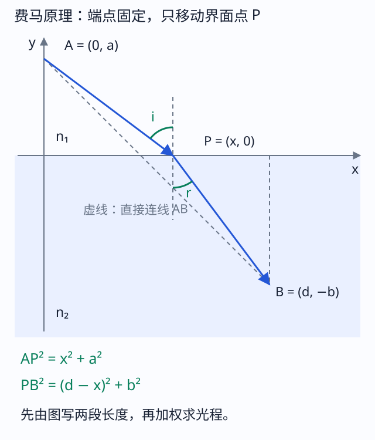
对平面界面，设上方点\(A=(0,a)\)、界面点\(P=(x,0)\)，其中\(a>0\)。下方点\(B=(d,-b)\)、\(b>0\)。分段均匀时
真实折射点使\(L'(x)=0\)，因此
这里两个分数正是两段光线相对法线夹角的正弦。若改成两个端点都在镜面同侧，并令两段处于同一介质，同样求导就得到\(\sin i=\sin r\)，即反射角等于入射角。这段短推导的作用是看清“光程驻值→界面定律”，不是要求把反射、折射另背成两套互不相关的规则。
0.5 贯穿例题：几何距离更长，为什么反而是实际光路？
取上式\(a=3\,\mathrm{cm},b=4\,\mathrm{cm},d=7\,\mathrm{cm}\)，上方空气\(n_1=1\)，下方水\(n_2=4/3\)。
先把题目转成“求界面交点”：A、B与折射率给定，未知的是P的横坐标x。将a、b、d代入上节的驻值方程，可先在0到7 cm之间求根；本例用两段3—4—5直角三角形检查x=4 cm恰好满足方程。两项光程的二阶导数均为正，保证这个根唯一；一般数值不整齐时照同一个方程求数值根，无须猜三角形。
先试直线：直线\(AB\)与界面交于\(x=3\,\mathrm{cm}\)，两边角度都是\(45^\circ\)；但两侧折射率不同，\(n_1\sin45^\circ\ne n_2\sin45^\circ\)，它不是真实折射光路。
再求实际点：当\(x=4\,\mathrm{cm}\)时，两段各长\(5\,\mathrm{cm}\)，
从\(n\)小的空气进入\(n\)大的水，折射角小于入射角，光线向法线偏折。比较两条路：
| 候选路线 | 几何路程 | 光程 |
|---|---|---|
| 直接连线，经\(x=3\) | \(7\sqrt2\approx9.90\,\mathrm{cm}\) | \(25\sqrt2/3\approx11.79\,\mathrm{cm}\) |
| 实际折射，经\(x=4\) | \(10\,\mathrm{cm}\) | \(35/3\approx11.67\,\mathrm{cm}\) |
真实路线的几何长度稍长，却少走了传播较慢的水中路段。这里平面折射的\(L''(x)>0\)，所以驻值确为极小；这是本例算出的性质，不能反过来把所有费马问题都定义成求最小值。
0.6 费马原理与成像的等光程条件
单条实际光路的驻值，并不表示所有任意路径都等光程。对连接同一实际物点和理想实像点的连续成像光束，光程不应随所选光线的入射高度改变；教材§3.6正利用这一条件得到近轴成像公式。
用\(h\)标记光线在球面的入射高度，若展开后
则在保留的近轴近似阶次内，消除选线高度的影响要求相应系数\(A=0,B=0\)；由此分别得到横向成像关系和轴上物像公式。后面的“5.1教材为什么能从光程推出成像公式”会具体展示。这个近轴等光程条件有物点、孔径和近似阶次的限制，不是说真实镜头中任意大角度光线都严格等光程。
0.7 最小记忆包与快速检查
| 中文学术名称 | 必须能准确说出的内容 |
|---|---|
| 光程 | \(L=\int n\,\mathrm ds\)，分段均匀为\(\sum n_j\ell_j\)，单位是长度 |
| 费马原理（Fermat's principle） | 固定端点，真实光路的光程对邻近允许路径取驻值，\(\delta L=0\) |
| 反射与斯涅耳折射定律 | 共面条件、相对法线量角、\(i=r\)或\(n_1\sin i=n_2\sin r\) |
| 独立传播与可逆性 | 不排斥干涉；反向解题仍需重判符号 |
| 理想成像等光程条件 | 同一物像点对的连续成像光束，在所用近似内不依赖选线高度 |
- “费马原理说光总走几何距离最短的路线。”哪里错？
参考答案
比较量应是光程，而不是单纯几何长度；一般要求驻值，不能无条件限定为最小。上面空气—水的例子已说明真实路线可以比两点直线更长。
- “两条实际光路连接相同端点，费马原理就保证两者光程相等。”对吗？
参考答案
不能只由驻值推出不同独立光路的光程相等。每条路径都取驻值，不意味着驻值的数值相同。理想成像中连续光路族的等光程，还要结合成像条件与连续性。
- 两束光相遇出现明暗条纹，是否推翻光的独立传播规律？
参考答案
没有。在线性介质中各光束仍按各自规律传播；条纹来自叠加电场后的强度交叉项。独立传播与相干叠加描述不同层面。
- 空气中走\(4\,\mathrm{cm}\)、折射率\(1.5\)的玻璃中走\(6\,\mathrm{cm}\)，光程是多少？若两种介质中的长度相等，光程是否也相等？
参考答案
\(L=4+1.5\times6=13\,\mathrm{cm}\)。长度相等但折射率不同，单段光程仍不同；总传播时间在本节近似下为\(L/c\)。
1. 从镜中的虚像开始
照镜子时，你看到脸“在镜后”。镜后并没有光线真实会聚。眼睛接收到的是镜面反射后发散的光线；把它们反向延长，延长线似乎来自镜后一点。
2. 课件所说的“成像”究竟是什么
【课件】许多光线如果交于同一点，就组成单心光束。交点可以是光线真正通过的点，也可以是光线延长后得到的点。成像系统做的事，就是把和物点 P 对应的一束入射光，变成和像点 P′ 对应的一束出射光。
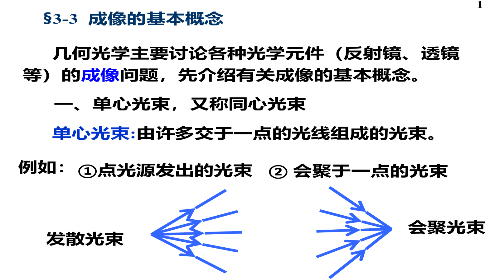
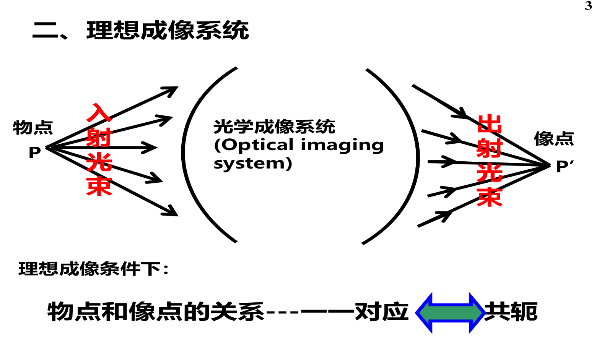
再往下追一层：教材用费马原理讨论这个问题。要成一个清楚的点像，从同一物点发出的不同光线，经过系统后应当给出同一个像点。如果不同光线算出的交点不同，屏上看到的就不是一个点，而是一小团光斑，这就是像差的来源之一。
2.1 “共轭”不是一个额外公式
物点 P 经过某个光学系统成像于 P′，就称 P 和 P′ 是一对共轭点。它表达的是同一条物像关系。利用光路可逆性，把光的传播方向完全反过来，原来的像点也可以作为物点，原来的物点成为像点。
这件事在题里很有用：有些题正着算很麻烦，反过来看却正好是熟悉的平行光、焦点或已知像距关系。不过，反转传播方向以后，必须重新确定当前的入射方向和符号，不能把原式中的正负号原样照搬。
3. 实物、虚物、实像、虚像怎么分
| 概念 | 看哪束光 | 操作性定义 |
|---|---|---|
| 实物 | 入射光 | 入射光确实从该点发出或发散。 |
| 虚物 | 入射光 | 入射光正朝该点会聚，但在到达前先遇到当前系统。 |
| 实像 | 出射光 | 出射光真实会聚于该点。 |
| 虚像 | 出射光 | 出射光发散，其反向延长线交于该点。 |
实际判断顺序：先把当前元件两侧的光线箭头画出来。元件之前的是入射光，元件之后的是出射光；入射光决定物的实虚，出射光决定像的实虚。不要一眼看图上点的位置就下结论。
3.1 四种情况放在一起比较
| 光线在当前元件附近的样子 | 结论 | 理由 |
|---|---|---|
| 入射光从左侧某点向外发散 | 实物 | 光确实从这个点来到元件 |
| 入射光正向右侧某点会聚，但途中先碰到元件 | 虚物 | 这个点只是入射光原本要到达的位置 |
| 出射光在某点真正相交 | 实像 | 该点有实际光线通过，可以用屏承接 |
| 出射光彼此发散，但反向延长线相交 | 虚像 | 该点只有延长线，没有实际出射光通过 |
4. 物空间与像空间
【课件】入射光线所在的空间叫物空间，出射光线所在的空间叫像空间。注意，名称是按光线分的，不是看物点和像点画在哪一边。
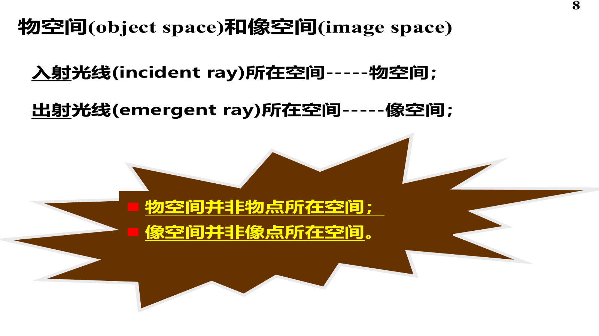
- 折射时，入射光和出射光通常分居界面两侧。
- 反射时，两者可以处在同一几何区域，但传播方向相反。
- 虚物点可以落在像空间一侧，虚像点也可以落在物空间一侧。
5. 近轴条件为什么不可省略
如果让离轴很远、倾角很大的光线都参加成像，它们一般不会刚好交在同一点。教材先限制到靠近光轴、倾角很小的光线，也就是近轴光线。这时可以用：
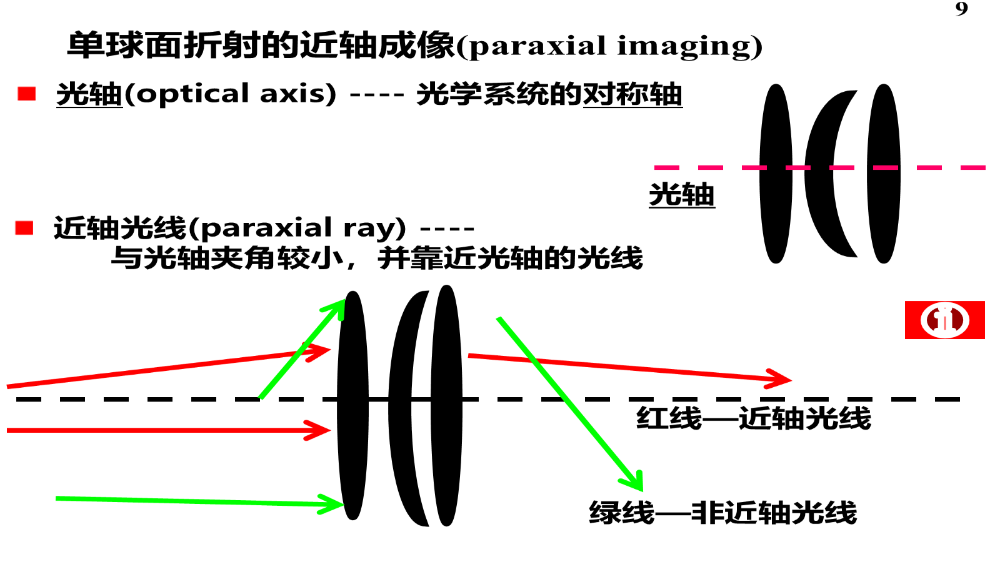
【教材】作了小角度近似以后，推导中的高次项可以略去，所得像距在一级近似下不再随光线入射高度改变。孔径变大或物点离轴较远时，这些被略去的项不能再忽略，于是会出现球差、彗差等像差。
5.1 教材为什么能从光程推出成像公式
教材第 142 页以球面反射为例：在轴上物点 P 附近取一个离轴小物点 Q，再在像点附近取 Q′。光线经过球面上不同高度 h 的点 A 反射。把光程 QA + AQ′ 按小量展开，如果要使所有近轴光线都到达同一个 Q′，展开式中随 h 改变的项必须消失。
第一式决定轴上物点和像点的位置关系，第二式决定物高与像高的关系。也就是说，成像公式和横向放大率并不是两条互不相干的经验公式；它们来自同一个要求：物体上邻近各点发出的近轴光线，反射后仍能分别成像于确定的点。

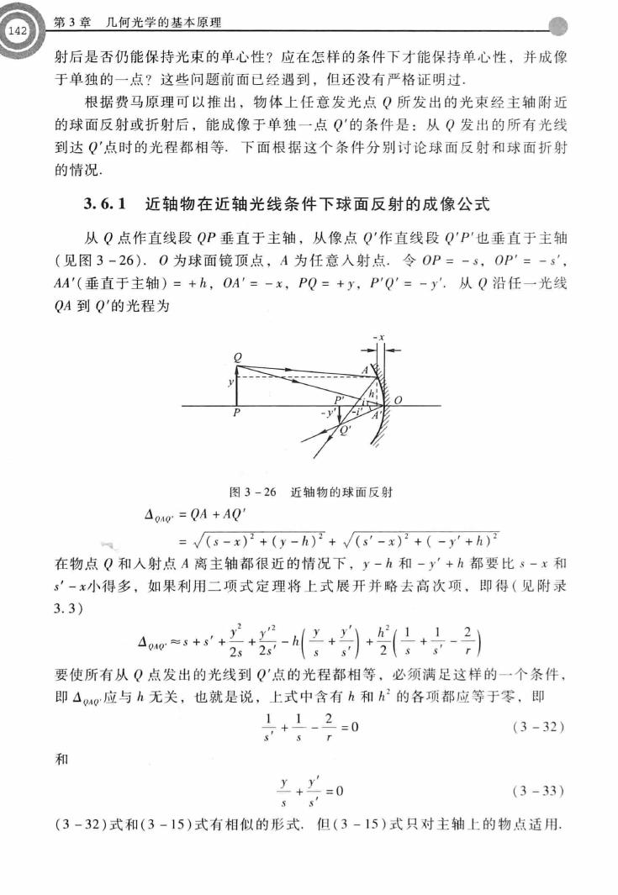

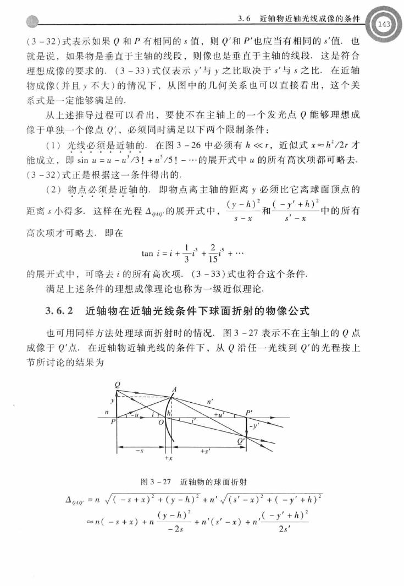
下面用完整光路图逐步算出这两个条件。
5.2 为什么近轴光线能会聚：把同一个物点的不同光路算出来
依据：教材§3.6及附录3.3，书页142—144、158；3-4 PPT第7、14页。
这一段只回答一个问题：同一个物点发出的光，打在镜面不同位置，为什么仍能近似会聚到同一个像点？先讨论凹面镜，物和实像都在镜面左侧。
① 先读完整光路图：哪些点固定，哪个点在变？

蓝线和橙线都从物点 \(Q\) 出发，在镜面不同位置反射，再到达同一个候选像点 \(Q'\)。实线箭头表示实际传播方向，灰色虚线只是投影辅助线。图中高度为便于辨认而放大，不能按图测量倾角；镜面投影点 \(A'\) 与顶点 \(O\) 的小间隔在下一幅图放大说明。
坐标原点是镜面顶点 \(O\)，向右、向上为正。各符号的含义是：
| 符号 | 在图中的位置 | 比较不同光路时 |
|---|---|---|
| \(Q=(s,y)\) | 物点；\(s<0\) 是物距，\(y\) 是物高 | 固定 |
| \(Q'=(s',y')\) | 候选像点；图示 \(s'<0,y'<0\)，是左侧倒立实像 | 选定后先固定，再检查各条光线能否共同到达 |
| \(A=(x_A,h)\) | 一条光线打在镜面上的点 | 沿镜面改变，\(h\) 和 \(x_A\) 随之改变 |
| \(B\) | 另一条光线的入射点 | 用来提醒：不能只检验一条光线 |
| \(C=(r,0)\) | 球心；本图 \(r<0\)，半径的正值为 \(R=-r\) | 镜面固定，\(r\) 固定 |
\(P,P'\) 是物、像点在主轴上的垂足，\(A'\) 是入射点在主轴上的垂足。\(y\) 是物有多高，\(y'\) 是像有多高，\(h\) 是光打在镜面的多高处。改变 \(h\) 是换一条光路，不是把物体上下移动。
② “近轴”究竟允许近似什么？
先分清两类限制：
- 光线靠轴、倾角小：入射高度相对镜面半径很小，\(|h|/R\ll1\)；两段光线的斜率 \(|(h-y)/s|\)、\(|(h-y')/s'|\) 也要远小于1。
- 物点靠轴：物高、像高相对各自轴向距离很小，即 \(|y/s|\ll1\)、\(|y'/s'|\ll1\)。只缩小光阑，不能保证很远离轴的物点也满足这一条件。
符号 \(\ll1\) 表示“远小于1”。这些比值都是无量纲的；计算距离必须统一单位。这里的“保留到二次项”，是把 \(h,y,y'\) 当作小量，保留它们的平方和乘积，舍去更高次的小量。这仍是近似成像，不是说真实凹面镜的任意光线都严格交于一点。
③ 为什么镜面点的横坐标也要计算？
镜面是弯的，点 \(A\) 不在过顶点的竖直平面上。\(A'\) 到 \(O\) 的那一小段叫球面的矢高；在本图中 \(A'\) 在 \(O\) 左侧，所以坐标 \(x_A<0\)。

这是上一幅镜面的局部放大图；为看清小间隔，所画比例不代表近轴程度。\(CA=CO=R\)，\(AA'=h\)，直角三角形 \(CA'A\) 给出
最后一步使用 \(|h|\ll R\)，把分母近似为 \(2R\)。\(OA'\) 是正的长度，而 \(x_A\) 是负的坐标，因此
④ 先写两段真实长度，再谈“展开”
按两点距离公式，图中的入射段与反射段分别是
两条根号都是正的几何长度，不能把负物距 \(s\) 直接叫作路长。两段在同一均匀介质中，光程等于几何路程乘以固定折射率；判断是否随 \(h\) 改变，两者条件相同。下面记总几何路程为 \(S(h)=QA+AQ'\)。
利用前述小量条件，把根号逐步近似，结果可按 \(h\) 的次数整理为
\(S_0\) 是与入射高度 \(h\) 无关的部分。这里要看的是：换一条入射高度不同的光线，会改变后面的一次项和二次项。
展开的中间步骤：根号怎样变成上式？
用到的数学近似只有这一条：\(\sqrt{a^2+b^2}\approx a+b^2/(2a)\)，其中 \(a>0\)、\(|b/a|\ll1\)。它来自 \(\sqrt{1+\varepsilon}\approx1+\varepsilon/2\)。例如 \(a=10,b=1\) 时，精确值 \(\sqrt{101}\approx10.04988\)，近似值是 \(10.05\)。
对第一段，\(a=x_A-s>0\)、\(b=h-y\)，故
第二次近似只在分母里忽略了 \(x_A\)。因为 \(x_A\) 本身已经是二次小量，再乘上分子中的二次小量，只会造成四次及更高次修正；单独的 \(+x_A\) 则必须保留。
第二段同理：
两段相加，代入 \(2x_A\approx h^2/r\)：
再用 \((h-y)^2=h^2-2hy+y^2\) 及对应的像高展开，把同次项放到一起。与 \(h\) 无关的部分为
一次项和二次项正好就是正文所列的两项。至此每一步都有对应的几何长度或代数操作，不需要另记一个没有来由的长公式。
⑤ 要一整束光共同成像，为什么要让两个系数为零？
我们希望换成另一条近轴光路时，光程仍近似相同。在保留的阶次内，如果一次项或二次项系数不为零，\(S(h)\) 就会随 \(h\) 改变。因此必须同时满足
第一式确定像在轴向哪里；第二式确定像有多高、是否倒立。第二式给出横向放大率
费马原理对某一条光线给出驻值条件；这里要求整个近轴光束都连接同一对物像点，所以要检查不同 \(h\)，不能只检查一个入射点。
带练：凹面镜 \(r=-20\,\mathrm{cm}\)，小物点在 \(s=-30\,\mathrm{cm}\)、\(y=0.30\,\mathrm{cm}\) 处。先由轴向式求像距：
再由高度式求 \(\beta=-(-15)/(-30)=-1/2\)，所以 \(y'=-0.15\,\mathrm{cm}\)。结果表示：像在镜面左侧、倒立、高度为原来的一半。像距和像高分别由两个条件确定，不能只求像距就说离轴物点已经成像。
对照教材的球面折射：配另一张图，改哪两处？

依据教材书页143—144图3-27重绘。光线从左侧介质 \(n\) 进入右侧介质 \(n'\)；物点 \(Q=(s,y)\) 在左，候选实像点 \(Q'=(s',y')\) 在右。入射点仍为 \(A=(x_A,h)\)；图示球心在右，故 \(r>0\)、\(x_A\approx h^2/(2r)>0\)。灰色虚线是投影辅助线，高度同样作了显示放大。
第一处变化是实际长度的横向间隔。入射段仍为 \(x_A-s>0\)，出射段改为 \(s'-x_A>0\)，因为光继续向右走：
第二处变化是必须按各段介质加权。折射率不同，不能只加几何长度；光程为 \(L(h)=n\,QA+n'\,AQ'\)。使用同一根号近似，得到
代入矢高、展开两个平方，再按 \(h\) 的次数整理：
其中 \(L_0=-ns+n's'-ny^2/(2s)+n'y'^2/(2s')\) 不随 \(h\) 改变。要求一次、二次项系数同时为零，分别得到
第一式给 \(\beta=ns'/(n's)\)；第二式是球面折射成像式。它们与凹面镜公式的符号差别，来自实际传播方向、两段长度及介质加权的差别。这里先用明确的实物、实像构型理解推导；虚物、虚像用有向距离推广，不能把负坐标直接当成负的几何路长。
6. 本课程的笛卡尔符号法则
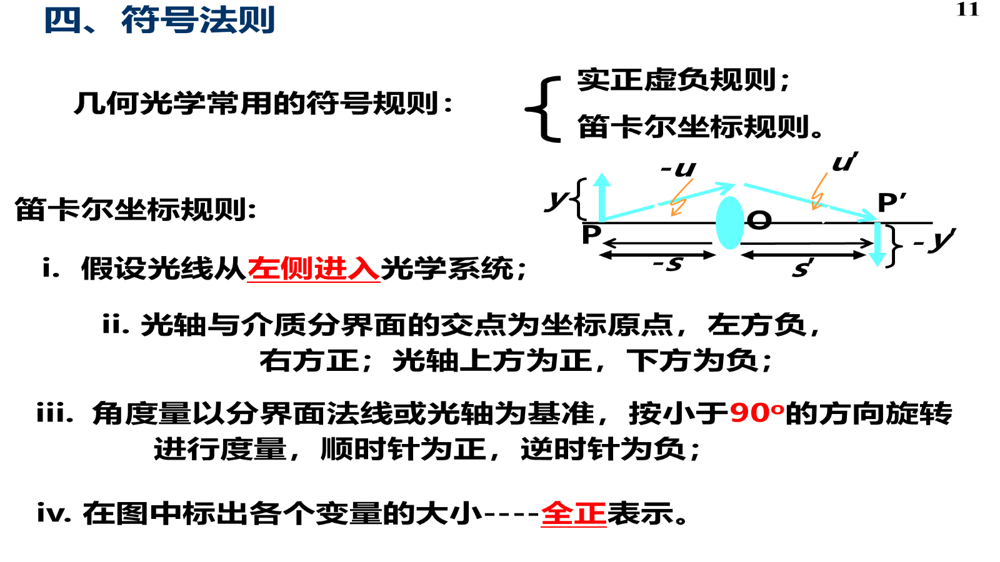
- 默认光从左侧进入当前光学系统。
- 原点取当前界面顶点或薄元件中心。
- 向右为正、向左为负；主轴上方为正、下方为负。
- 角度按课件约定：从法线或光轴转过小于 90° 的角，顺时针为正、逆时针为负。
- 公式中使用代数量；图上标注的长度通常只是几何正值。
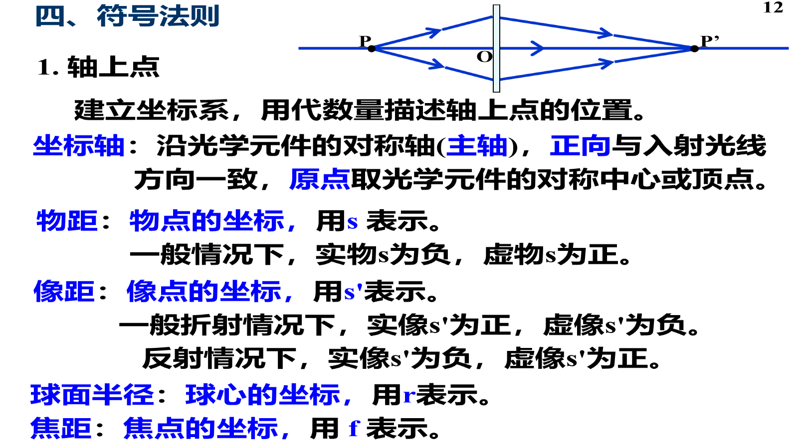
| 符号 | 含义 | 代数定义 |
|---|---|---|
| s | 物距 | 物点坐标 |
| \(s'\) | 像距 | 像点坐标 |
| r | 球面半径 | 球心坐标 |
| \(f,f'\) | 物方、像方焦距 | 相应焦点坐标 |
| y, y′ | 物高、像高 | 相对主轴的纵坐标 |
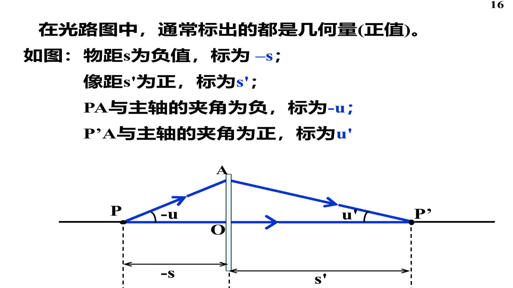
6.1 为什么课件还要规定角度正负
只做轴上成像时，似乎只管距离符号就够了；一旦推导横向放大率、拉格朗日—亥姆霍兹定理或多面系统，就会同时出现光线倾角 u、u′。如果角度没有统一正负，同一条光线在不同公式里会得到互相矛盾的结果。
本课件规定顺时针转角为正、逆时针为负。读图时可以这样做：先选定基准方向（主轴或界面法线），再看从基准转到光线需要顺时针还是逆时针。不要凭“光线向上”或“向下”直接判断角度符号。
7. 这些定义后面怎么用
以后每学一个界面，都会得到一个物像公式。计算本身通常不难；真正容易错的是：这一面的物是谁、光往哪边走、距离应带什么符号。
遇到多个元件时，就一面一面算：前一面得到的像，拿到下一面重新判断它是实物还是虚物，再继续计算。
7.1 这一课与作业的关系
作业 3、10、12*、13、14 看似装置不同，第一步都一样：先确定当前界面的入射光方向，再确定物点、像点和球心在坐标轴上的位置。第二组中的反射镜题更能检验这一点，因为反射后的实像可能落在坐标负侧。如果仍用“实像为正”的口诀，公式会从第一行就错。
因此这一课的目标不是背完术语，而是做到：给你一张光路图，即使暂时不会算，也能把每个界面的实物/虚物、实像/虚像以及 \(s,s',r\) 的符号标对。
第 02 课：全反射和棱镜
这节课有三条线：折射角增大到极限时为什么会出现全反射；三棱镜怎样改变光的方向；折射率随波长变化后为什么会分光。
0. 棱镜题究竟在考什么
棱镜的共同任务是改变光线方向。先判断改变方向的机制：有些题让光穿过两个面，靠两次折射偏折；另一些题让光在内部全反射，靠反射折转或返回。棱镜不是一个可以不看光路、直接套透镜成像公式的元件。
| 题干给了什么、问什么 | 检验的知识与能力 | 方法入口 | 已有材料中的题目依据 |
|---|---|---|---|
| 给顶角、折射率、入射角，求出射方向或判断能否出射 | 折射定律、两个面的角度衔接、全反射边界 | 逐面求角；第二面先查全反射 | 3-2 PPT第13、21、32页；教材3.4第(3)问 |
| 出现“最小偏向”“转动棱镜”“用偏向角测折射率” | 在一族可透射光路中找对称状态，并反求材料参数 | 先用内角均分、入射角等于出射角，再用折射定律 | PPT第14—18页；教材3.4第(1)(2)问 |
| 顶角小，且小角度入射，求偏折 | 小角近似的选择与适用条件 | 薄棱镜公式；检查相关角是否都小 | PPT第19—20页有计算例题 |
| 给两种颜色、折射率随波长的变化或角色散，求分开多少 | 材料色散怎样经几何光路转成方向差 | 先求各色折射率，再算偏向角；邻近波长才用导数估计 | PPT第23—31页的推导和提问 |
| 光在内部反射，或棱镜与透镜组成系统 | 反射定律、全反射条件、光路折返及逐次成像 | 先按真实传播次序画完整光路，再处理成像 | PPT第2—3、49—52页；指定星号作业3.23 |
不能把“没在两次教材作业清单中看到独立棱镜题”理解成不考。 PPT第32页明确布置了偏向角曲线作业，第52页另有角反射器证明题。教材3.4、3.5是本节配套题，未确认被指定；3.23则在指定星号作业中。目前没有往年试卷，无法判断哪一道曾经考过。以上是依据现有材料确定的学习要求，不是对本次试卷分值或题型的预测。
学完应能做到：看到题干就分清一般偏折、最小偏向、出射边界、薄棱镜近似和色散；能画法线、逐面列式，说明每个简化条件。PPT第33—48页的装置应用还需能解释作用和机制；其中第44—45页的延伸阅读明确标注非考试内容，不能将这一标记扩大到整段应用。
1. 全反射从折射定律里自然出现
设光从折射率为 \(n_1\) 的介质射向折射率为 \(n_2\) 的介质。折射定律是
如果 \(n_1\gt n_2\)，增大入射角 \(i\) 时，折射角 \(r\) 增大得更快。当折射光恰好贴着界面传播，即 \(r=90^\circ\)，对应的入射角叫临界角 \(i_c\)：
再增大入射角，折射定律要求 \(\sin r\gt1\)，已经没有实数折射角。此时没有传播到第二种介质中的折射光，能量全部返回第一种介质，发生全反射。
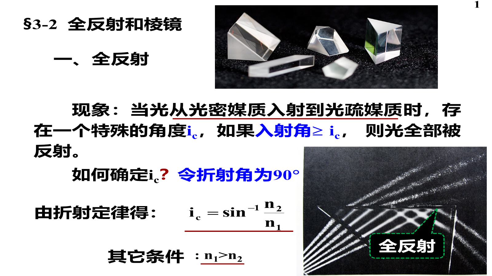
1.1 临界角处到底算不算全反射
在 \(i=i_c\) 时，几何光学给出折射光沿界面传播。课件把“入射角≥临界角”作为全反射的起点；做计算题时应说明临界状态下 \(r=90^\circ\)。真正讨论能量分配时，临界附近还涉及倏逝场，不能只靠一条几何光线描述。
1.2 全反射时，第二介质中仍有倏逝场
依据：教材书页122例3.2。 这一节要解决的问题是：没有射向第二介质远处的折射光，是否意味着第二介质中处处没有光的电磁场？ 几何光线只能说明传播方向；要判断界面附近的场，必须把光看成波。倏逝场就是离开界面后迅速衰减的振荡电磁场。“倏逝”说的是随距离衰减，不是光在时间上突然消失。
先读图：沿界面走，沿法线衰减

图为教学重绘，依据教材例3.2；上半部为第二介质，\(z\)垂直界面向上，\(x\)沿界面向右。入射角\(i\)从法线量。下图横轴是进入第二介质的深度\(z\)，纵轴是电场振幅与界面振幅之比；它不是光线轨迹。教材原图的坐标字母与本图不同，这里始终用\(z\)表示穿透方向。
从波长到波数：为什么题目给波长，计算却用波数？
对沿某方向传播的正弦波，电场可写成\(E=E_0\cos(ks-\omega t+\phi_0)\)。\(s\)是沿传播方向的距离，\(t\)是时间，\(E_0\)是振幅，余弦中的量叫 相位 ，表示振动进行到周期中的哪一步。走过一个波长\(\lambda\)，相位增加\(2\pi\)，所以
\(k\)叫 角波数 ，简称波数，是单位距离上的相位变化量，单位为\(\mathrm{rad/m}\)（弧度视为无量纲时写\(\mathrm{m^{-1}}\)）；不要与另一些教材中的光谱波数\(1/\lambda\)混淆。角频率\(\omega=2\pi\nu\)表示单位时间的相位变化，\(\nu\)是频率。介质界面两边频率相同，介质中波长为\(\lambda=\lambda_0/n\)，因此真空波数\(k_0=2\pi/\lambda_0\)、介质波数\(k=nk_0\)。 波长并没有变成一个额外未知量；改用波数，是为了把波的方向分解成沿界面与垂直界面的两部分。
普通传播平面波在本图内的相位写成\(k_xx+k_zz-\omega t\)，其中\(k_x,k_z\)分别是沿\(x,z\)方向每单位距离的相位变化量。入射波的波矢长为\(n_1k_0\)，投影到界面得\(k_x=n_1k_0\sin i\)；这里出现正弦，是因为\(i\)从竖直法线量，而不是从界面量。
三步推导：界面匹配 → 法向分量 → 衰减
- 沿界面的相位必须匹配。 静止、平整界面上的边界条件要在每个位置\(x\)、每个时刻\(t\)同时成立，因此入射、反射和第二介质中的波必须有相同的\(k_x\)和\(\omega\)。第二介质中仍有\(k_x=n_1k_0\sin i\)。
- 用第二介质的波动关系求法向分量。 均匀、无吸收、各向同性介质的平面波满足\(k_x^2+k_z^2=(n_2k_0)^2\)，所以
若\(i<i_c\)，右端为正，\(k_z\)为实数，表示正常传播的折射波。若\(n_1>n_2\)且\(i>i_c\)，则\(n_1\sin i>n_2\)，右端为负：已经不能用一个实数折射角描述法向传播。
- 负的平方对应空间衰减。 记正数\(\kappa=k_0\sqrt{n_1^2\sin^2i-n_2^2}\)，\(\kappa\)叫衰减系数，单位是长度的倒数。为避免入射角\(i\)与虚数单位混淆，本节用\(\mathrm j^2=-1\)。取\(k_z=\mathrm j\kappa\)，在复指数表达中有\(e^{\mathrm j k_zz}=e^{-\kappa z}\)。另一符号会使场随\(z\)无限增大，不符合第二介质半无限且远处没有光源的条件。用实数直接写物理电场更清楚：
\(E_s\)和\(\phi_s\)分别是所讨论电场分量在界面的振幅与初相位；此处关注空间变化，不要求先求出它们。余弦表示沿界面变化、随时间振荡；\(e^{-\kappa z}\)表示越深入第二介质，振幅越小。理想半无限、无吸收介质中，没有向远处输送能量的时间平均法向能流，但界面外的场并不为零。
带着题目计算：振幅降到多少，才算“穿透深度”？
例题（自编数值，方法对应教材例3.2） ：玻璃\(n_1=1.5\)向空气\(n_2=1\)入射，\(i=45^\circ\)，真空波长\(\lambda_0=600\,\mathrm{nm}\)。求第二介质中电场振幅降到界面振幅\(1/e\)时的深度。
先分析条件和目标。 折射率与入射角决定能否全反射及衰减的几何因子；波长决定长度尺度；“振幅变成\(1/e\)”要求解\(e^{-\kappa d_E}=e^{-1}\)，因此\(d_E=1/\kappa\)，不是先去求一个不存在的实数折射角。
| 步骤 | 代入与结果 | 这一步解决什么 |
|---|---|---|
| 判断情形 | \(i_c=\arcsin(1/1.5)=41.81^\circ<45^\circ\) | 可以使用倏逝衰减式 |
| 波长换成波数 | \(k_0=2\pi/(600\,\mathrm{nm})=0.010472\,\mathrm{nm^{-1}}\) | 保留纳米作为长度单位，不另做米制转换 |
| 求衰减因子 | \(n_1^2\sin^2i-n_2^2=2.25\times0.5-1=0.125\) | 检查根号为正 |
| 求衰减系数 | \(\kappa=0.010472\sqrt{0.125}=0.003702\,\mathrm{nm^{-1}}\) | 每深入单位距离，振幅衰减的快慢 |
| 回答长度 | \(d_E=1/\kappa=270.1\,\mathrm{nm}\) | 振幅剩\(e^{-1}\approx0.368\)的位置 |
检查：\(\kappa\)为长度的倒数，倒数才是深度；波长增大时，其他条件不变，\(d_E\)也增大。若题目问的是 振幅平方 降至\(1/e\)，因为\(|E|^2/|E_s|^2=e^{-2\kappa z}\)，相应长度为\(1/(2\kappa)=135.0\,\mathrm{nm}\)。倏逝场不具有普通法向传播波的强度关系，读到“强度穿透深度”时先核对题目定义。
将另一高折射率介质放到这一尺度内，场可与它耦合并传输能量，原来的半无限模型随之改变。严格\(i>i_c\)才有\(\kappa>0\)；当\(i\to i_c^+\)，此理想模型的衰减长度趋大，不能在临界角把它说成某个有限值。
2. 全反射棱镜为什么能替代平面镜
玻璃的折射率若约为 1.5，从玻璃射向空气的临界角约为
光从等腰直角棱镜的直角面垂直入射，到斜面时入射角为 45°，大于临界角，所以在斜面发生全反射。根据入射方式不同，它可以让光偏转 90°，也可以让光路折回 180°。
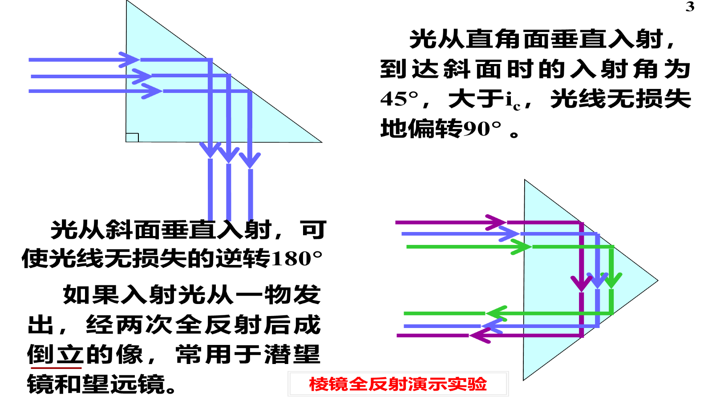
和镀银反射镜相比，全反射面不依赖金属膜，反射损耗小，也不容易因镀层老化而变差。但它的前提是内部入射角始终超过临界角。
3. 光纤并不是“光进去就一定出不来”
阶跃型光纤由高折射率芯层和较低折射率包层组成，满足 \(n_1\gt n_2\)。能够在芯层—包层界面满足全反射条件的光线，会在芯层中反复传播。
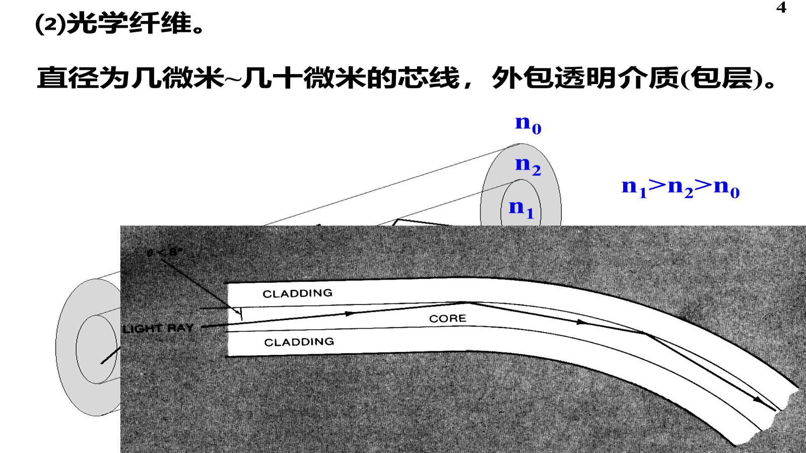
入射角太大的外界光线进入芯层后，未必能在芯层—包层界面达到临界角。因此光纤有一个允许入射的锥角。对阶跃型光纤的子午光线，若外界折射率为 \(n_0\)，最大入射半角 \(\alpha_{\max}\) 满足
右边称为数值孔径 NA。它越大，光纤越容易接收入射光；但模式数、色散和成像质量也会随之变化。光纤可以弯曲，不表示可以任意急弯：弯曲过强会使局部入射角低于临界角，光就会泄漏到包层。
3.1 接收角与数值孔径的来源

图为依据PPT第4—6页的教学重绘。先顺着光线经过的两个位置读：端面法线是水平轴，侧壁法线是竖直方向，所以同一条芯内光线对两种法线的角互余。题目求“从外面能接收多大的角”，但限制来自芯层侧壁；解题要先在侧壁列全反射条件，再通过端面折射把它换回外部角\(\alpha\)。
依据：3-2 PPT第4—6页；教材书页122—124。取直的阶跃型光纤、与轴垂直的端面及经过轴的子午光线。设芯内光线与轴夹角为\(\theta\)，侧壁入射角为\(i=90^\circ-\theta\)，端面外入射角为\(\alpha\)。端面折射给\(n_0\sin\alpha=n_1\sin\theta\)，侧壁约束给\(\sin i\ge n_2/n_1\)，所以
根号这一步不是新增定律：\(\sin i=\cos\theta\ge n_2/n_1\)，两边平方后用\(\sin^2\theta=1-\cos^2\theta\)，得\(\sin\theta\le\sqrt{1-(n_2/n_1)^2}\)；再用端面式\(n_0\sin\alpha=n_1\sin\theta\)消去\(\theta\)。NA即“数值孔径”的缩写，是无量纲量。
数值孔径NA量化可接收光锥的大小，不是芯层折射率本身。若NA\(/n_0\le1\)，\(\alpha_{\max}=\arcsin(\mathrm{NA}/n_0)\)；若计算值超过1，外部几何接收半角至多\(90^\circ\)。例：\(n_1=1.50,n_2=1.48,n_0=1\)，NA\(\approx0.244\)，\(\alpha_{\max}\approx14.1^\circ\)。
条件\(n_1>n_2\)负责芯层约束；PPT示例的\(n_2>n_0\)不是所有光纤的必要条件。弯曲、端面倾斜、斜光线或波导模分析不能无条件套这条子午光线推导。教材还区分阶跃型与渐变型：前者芯内\(n\)近似恒定、在芯包界面突变；后者芯内\(n\)随半径变化，光路连续弯曲。内窥镜传像还要求纤维束保持端点的空间对应，单根纤维导光本身不保证传出完整图像。
4. 分层介质变成连续介质：光路会弯
把折射率逐层变化的介质想成许多很薄的平行层，每经过一层都按折射定律轻微改变方向；当层厚趋于零，折线路径就变成平滑曲线。光线总是向折射率较大的一侧弯曲。
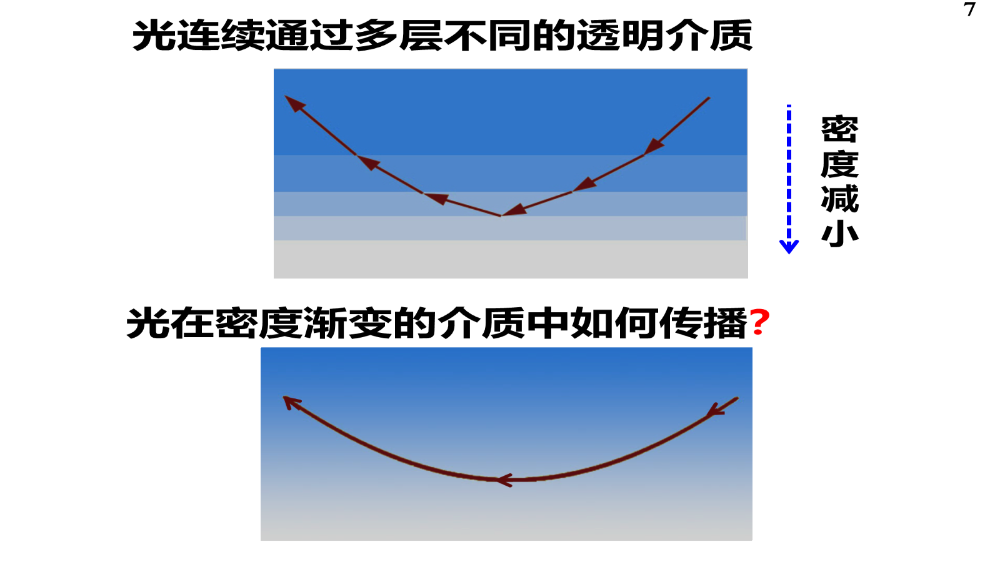
海市蜃楼并不是空中真的出现了另一件物体，而是大气温度导致折射率随高度变化，光线弯曲后进入眼睛。观察者仍按“光沿直线传播”的经验反向追踪，于是看到移位或倒置的虚像。
4.1 分层不变量、弯曲方向与上下蜃景
依据：3-2 PPT第7—10页；教材书页123—124。 先把连续弯曲拆成已经会用的平面折射：相邻薄层之间都满足斯涅耳定律。 取水平\(x\)轴、竖直\(z\)轴，折射率只随高度变化，即\(n=n(z)\)；光线与竖直法线的夹角为\(\theta\)。

图为依据上述材料的教学重绘，折射率变化与弯曲幅度为突出关系而放大。第一幅各层交界处的虚线是法线；下两幅的实线为真实光路，虚线为眼睛按入眼切线反向延长的视线，虚像的位置必须沿这条虚线判断。
从两个界面推到任意高度
第一、二层之间有\(n_1\sin\theta_1=n_2\sin\theta_2\)，第二、三层之间有\(n_2\sin\theta_2=n_3\sin\theta_3\)。 同一层中两处法线平行，光线与法线的角相同 ，所以可以把等式首尾连接：
层厚趋于零，便得到\(n(z)\sin\theta(z)=C\)。常量\(C\)由这条光线的初始条件确定；不同光线不一定具有相同的\(C\)。已知初始折射率与角度，先算\(C=n(z_0)\sin\theta_0\)，再在目标高度求\(\sin\theta=C/n(z)\)。
如何看出转向？ 光线进入\(n\)较小的区域时，\(C/n\)增大，锐角支上的\(\theta\)增大，光线趋向水平。若到达\(n=C\)，则\(\theta=90^\circ\)，光路与层面相切；再往\(n<C\)处延伸会要求\(\sin\theta>1\)，不可能有实光路。通常在光滑且梯度非零的情况下，光线在此转回\(n\)较大的区域；它不是撞到了一面镜子。若折射率只渐近趋于\(C\)等特殊情形，是否在有限位置转回还要检查具体分布。
带练 ：某光线在\(n_a=1.50\)处与竖直夹\(60^\circ\)，求到\(n_b=1.40\)处的角度，并判断能否到达\(n=1.20\)处。先有\(C=1.50\sin60^\circ=1.2990\)；目标角\(\theta_b=\arcsin(1.2990/1.40)=68.1^\circ\)，比原来更靠近水平。若分布沿前进方向连续下降，则到\(n=1.2990\)已达到转向条件，不会继续进入\(n=1.20<C\)的区域。这是便于计算的模型数值，不是实际大气折射率。
更一般的光线方程：每个符号在图中代表什么？
当\(n\)不只随高度变化，使用位置向量\(\mathbf r(\ell)\)表示光路；\(\ell\)是沿曲线量出的弧长，\(\mathbf t=\mathrm d\mathbf r/\mathrm d\ell\)是指向前进方向、长度为1的切向量。梯度\(\nabla n\)指向\(n\)增长最快的方向，大小表示单位距离的增长率。对\(n=n(z)\)，它就是竖直方向的\((\mathrm dn/\mathrm dz)\mathbf e_z\)。
费马原理给出的光线方程是
把左边用乘积求导拆开，并用\(\mathrm dn/\mathrm d\ell=\nabla n\cdot\mathbf t\)（梯度沿前进方向的分量），得到
右边正是梯度中 垂直于光线 的部分；左边是方向随路程的变化。因此光线向横向\(n\)增大的那一侧弯。均匀介质\(\nabla n=0\)时不弯；若梯度恰沿光线，横向分量也为零，方向仍可不变。对分层介质，原方程的\(x\)分量为\(\mathrm d(n t_x)/\mathrm d\ell=0\)，而\(t_x=\sin\theta\)，又回到\(n\sin\theta=C\)，两种写法相互核对。
费马原理怎样给出这条方程？
固定两端点，给光路一个任意小位移\(\delta\mathbf r\)，端点处位移为零。光程\(L=\int n\,\mathrm d\ell\)的变化由折射率变化及路程变化两部分组成：
第二项分部积分，端点项因\(\delta\mathbf r=0\)消失，得到\(\delta L=\int[\nabla n-\mathrm d(n\mathbf t)/\mathrm d\ell]\cdot\delta\mathbf r\,\mathrm d\ell\)。由于任意内部小位移都应使一阶变化为零，方括号中的系数必须为零，便得上式。这里\(\delta\)表示路径的微小变化，和棱镜偏向角不是同一个量。
把“弯向哪里”转成“像在哪里”
| 情形 | 先判折射率与弯曲 | 再沿入眼切线反向延长 |
|---|---|---|
| 热路面、沙漠的下蜃景 | 近地空气热、密度小、\(n\)小，光路向上弯 | 远景似在下方；常见的“路面积水”景象可以来自天空光，不是地面真有水 |
| 冷海面上方的上蜃景 | 近海面较冷、\(n\)较大，光路向下弯 | 远景似被抬高，可看到几何直线视野以外的物体 |
做题顺序：先画\(n\)随高度的趋势 → 标角度从法线还是水平量 → 求\(C\)与可达范围 → 画入眼切线判视位置。若角\(\alpha\)改从水平量，因为\(\theta=90^\circ-\alpha\)，不变量应为\(n\cos\alpha=C\)。蜃景的正倒、重像取决于整束光的完整路径，单凭一条光线“向上弯”不能确定所有像的倒正。
5. 一般棱镜题：把两个折射面接起来
本节先研究同一种外界介质中的普通玻璃棱镜：棱镜折射率为\(n\)，外界为\(n_0\)，相对折射率\(m=n/n_0>1\)，均无量纲。光线在主截面内，从一个侧面进入、另一个侧面直接出射。主截面是垂直于棱镜棱边的截面，下面画出的三角形就在这个平面内。

图依照3-2 PPT第12—13页的几何关系教学重绘，采用\(A=60^\circ,n/n_0=1.5,i=45^\circ\)的光路。蓝实线依次经过入射点\(P\)和出射点\(Q\)；棕虚线是两面的法线。下方小图只比较方向，虚线与入射光平行，不是另一段实际光路。
从左向右带读：\(i\)是入射光与第一面法线的夹角，\(r_1\)是折射进玻璃后与同一法线的夹角；到达第二面时，要换用第二面的法线，内部入射角叫\(r_2\)，外部出射角叫\(e\)。这四个角都从各自法线量，不能从棱镜表面量。 顶角\(A\)才是两个侧面的夹角；偏向角\(\delta\)比较的是入射和出射两个传播方向。
课件符号与正文对照：\(i_1\leftrightarrow i\)，\(i_2\leftrightarrow r_1\)，\(i_2'\leftrightarrow r_2\)，\(i_1'\leftrightarrow e\)，\(\theta\leftrightarrow\delta\)。
5.1 为什么是这两条几何关系
两条法线分别垂直于两个侧面，所以图中\(P,Q\)处指向玻璃内部的法线夹角为\(180^\circ-A\)。它们与内部光线构成的三角形给出
第一面把传播方向转过\(i-r_1\)，第二面沿同一偏折方向再转过\(e-r_2\)，因此
这两式适用于图示通常的两面透射分支；若题图包含内部反射或从其他面出射，应按实际光路重新标角，不能把所有棱镜都塞进同一式子。
5.2 从题目条件到可计算量
给\(A,m,i\)，照以下顺序走。\(\arcsin\)表示由正弦值反求角度，通常取\(0^\circ\)到\(90^\circ\)的分支。
- 第一面从光疏进入光密：\(n_0\sin i=n\sin r_1\)，所以\(r_1=\arcsin(\sin i/m)\)。
- 用几何把第一面接到第二面：\(r_2=A-r_1\)。
- 第二面从光密进入光疏：先检查\(m\sin r_2\)。小于1才有非掠射的传播折射光；等于1为\(e=90^\circ\)的临界边界；大于1则全反射，停止这条两面透射计算。
- 能出射时才算\(e=\arcsin(m\sin r_2)\)，最后\(\delta=i+e-A\)。
角度计算可以全程使用角度制，但计算器模式必须一致；后面求导和把角乘距离时使用弧度。
带练：空气中\(A=60^\circ,n=1.50,i=30^\circ\)，求偏向角。 题目已给入射角，也没有说明光路对称，故先采用逐面法。
临界角\(r_c=\arcsin(1/1.50)=41.81^\circ\)。因为\(r_2<r_c\)，第二面可以出射：
检查：内部两角和为\(60^\circ\)；第一面\(r_1<i\)，第二面\(e>r_2\)，符合折射方向；\(i\ne e\)，所以这不是最小偏向状态。最后一步保留未舍入的中间值。
6. 最小偏向角：在可透射光路中找特殊状态
固定顶角、材料和波长，转动棱镜会改变\(i\)。先前算出的是某一个\(i\)对应的\(\delta\)；现在问的是所有可直接透射的入射角中，哪个让偏向最小。这是不同的问题。

出处：3-2 PPT第14页。横轴为入射角（degree为度），纵轴为偏向角；曲线最低点表示最小偏向。不能出射的入射角没有这条透射曲线上的点。
普通\(m>1\)棱镜的非掠射最小偏向状态满足
由\(\delta=i+e-A\)得\(i=(A+\delta_{\min})/2\)，代入第一面的折射定律：

出处：3-2 PPT第16页。两侧外角相等、内部两角各为顶角一半；图中的\(\theta_0\)就是正文\(\delta_{\min}\)。它把一般光路中的四个角缩减为一个独立角，所以测出\(A\)和\(\delta_{\min}\)即可求折射率。
选公式的界线： 题目给了某个普通入射角，不能自行令\(i=e\)；只有题干给出“最小偏向”或等价的对称条件时，才使用上述简化。下面的证明解释为何是最小值，计算入口仍是先识别这一条件。
6.1 教材3.4带练：最小偏向与最小入射角是两个极值

出处：《光学教程》书页160—161的习题。3.4、3.5未在已收到的两次指定作业清单中，作为配套练习使用。
3.4题意： 玻璃棱镜顶角\(60^\circ\)，某波长的\(n=1.6\)，求(1)最小偏向角，(2)此时入射角，(3)能从另一面透过的最小入射角。按题目通常的空气条件取\(n_0=1\)。
前两问考对称光路。 由\(r_1=r_2=A/2=30^\circ\)，先求入射角，再求最小偏向：
第三问考出射边界。 降低\(i\)会降低\(r_1\)，却增大\(r_2=A-r_1\)，因此第二面可能全反射。刚到临界边界时\(e=90^\circ\)，先从第二面倒推：
教材所求最小入射角按临界边界取\(35.57^\circ\)；实际要有离开第二面、进入外界的非掠射透射光，应取\(i>i_{\mathrm{lim}}\)。小于此值，第二面全反射。\(53.13^\circ\)回答“何时偏得最少”，\(35.57^\circ\)回答“多小就无法从第二面透出”，不能互换。
3.5考光路几何与恒偏向。 它含内部反射，不属于上面的普通两面透射题。先逐面标出法线，按30°—60°—90°和45°—45°—90°两部分的关系传递角度，再结合折射定律证明题设条件下的出射方向；不能直接套最小偏向公式。
PPT第32页的曲线作业怎样落地？ 固定\(A,n/n_0\)，依次取一系列\(i\)；每个\(i\)执行5.2的四步，不能透射的点留空，能透射的点画成\((i,\delta)\)。最后标出临界边界和对称最低点。这道作业检验的核心是光路计算、定义域和极值条件；是否要求在本次笔试中写程序，目前没有通知。
6.2 为什么对称光路给最小偏向角
先确定谁固定、谁变化。 对照上方棱镜角度图，把顶角\(A\)与材料相对折射率\(m=n/n_0\)固定，缓慢改变入射角\(i\)；内部\(r_1\)随之变，\(r_2=A-r_1\)反向变，最后改变出射角\(e\)和偏向角\(\delta=i+e-A\)。求最小偏向就是求这条函数曲线的极小值，不是把光程拿来再求一次极小。
链式求导逐步为\(\mathrm dr_1/\mathrm di=\cos i/(m\cos r_1)\)、\(\mathrm dr_2/\mathrm di=-\mathrm dr_1/\mathrm di\)、\(\mathrm de/\mathrm dr_2=m\cos r_2/\cos e\)。把三步相乘，再对\(\delta=i+e-A\)求导，才得到下式。
依据：3-2 PPT第12—18、32页；教材书页125、附录3.2书页157—158。令相对折射率\(m=n/n_0>1\)，考虑主截面内从一个面进入、另一个面直接出射的光路。\(\sin i=m\sin r_1\)，\(\sin e=m\sin r_2\)，\(r_1+r_2=A\)。固定\(A,m\)对\(i\)求导：
在驻值处，两余弦乘积相等；结合两次折射关系得\((m^2-1)(\sin^2r_1-\sin^2r_2)=0\)。在通常\(0\le r_1,r_2<90^\circ\)分支，故\(r_1=r_2=A/2\)、\(i=e\)。还需判极小：写\(g(r)=\arcsin(m\sin r)\)，则\(\delta=g(r_1)+g(A-r_1)-A\)，而
（可直接出射的内部区间），所以对称驻值确为最小值。可逆性说明交换入射与出射得到另一条相同偏向光路，却不能单靠可逆性证明它是极小值。
出射边界先于求角度 ：临界角\(r_c=\arcsin(1/m)\)，第二面需\(r_2\le r_c\)。在\(r_1,r_2\ge0\)的通常构型中，若\(A>r_c\)，则
根号或反正弦的定义域必须成立；有非掠射的对称透射光路还要求\(A<2r_c\)。例：\(A=60^\circ,m=1.5\)，\(r_c=41.81^\circ\)，\(i_{\min}\approx27.92^\circ\)；最小偏向时\(i=e\approx48.59^\circ\)，\(\delta_{\min}\approx37.18^\circ\)。小于出射阈值的曲线段应留空，不能把第二面全反射仍画成一条透射曲线。
最小偏向测液体时，可用平行薄玻璃壁组成空心棱镜。每面玻璃壁两表面平行，串联折射可消去壁的折射率，保留空气到液体的角度关系；忽略薄壁造成的横向位移后，仍用液体与外界的相对折射率。玻璃壁不平行或厚度引起路径改变明显时，须逐界面追迹。
7. 薄棱镜近似
当棱镜顶角和所有入射、折射角都很小时，可用 \(\sin\theta\approx\theta\)。两次折射定律线性化后得到
棱镜放在空气中时 \(n_0\approx1\)，于是 \(\delta\approx(n-1)A\)。在一级近似中，偏向角与入射角无关；这不表示精确结果完全无关，只表示入射角的影响落在被略去的高阶项里。
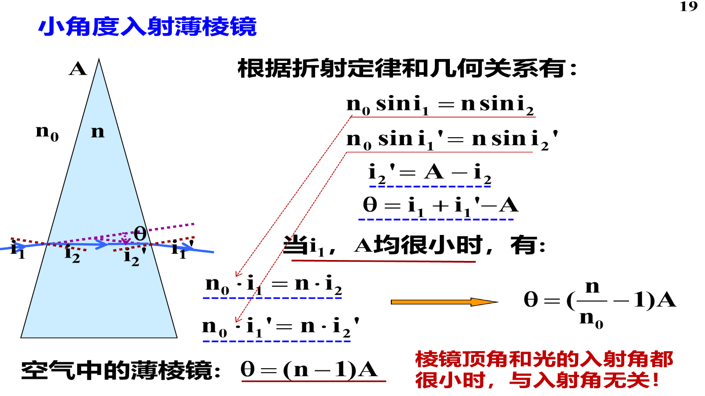
8. 棱镜为什么能把白光分开
折射率不是固定常数，而是波长的函数 \(n(\lambda)\)。在普通玻璃的可见光范围内通常有 \(\mathrm dn/\mathrm d\lambda\lt0\)，即波长越短，折射率越大。紫光的偏向通常大于红光，因此白光通过棱镜后展开成光谱。
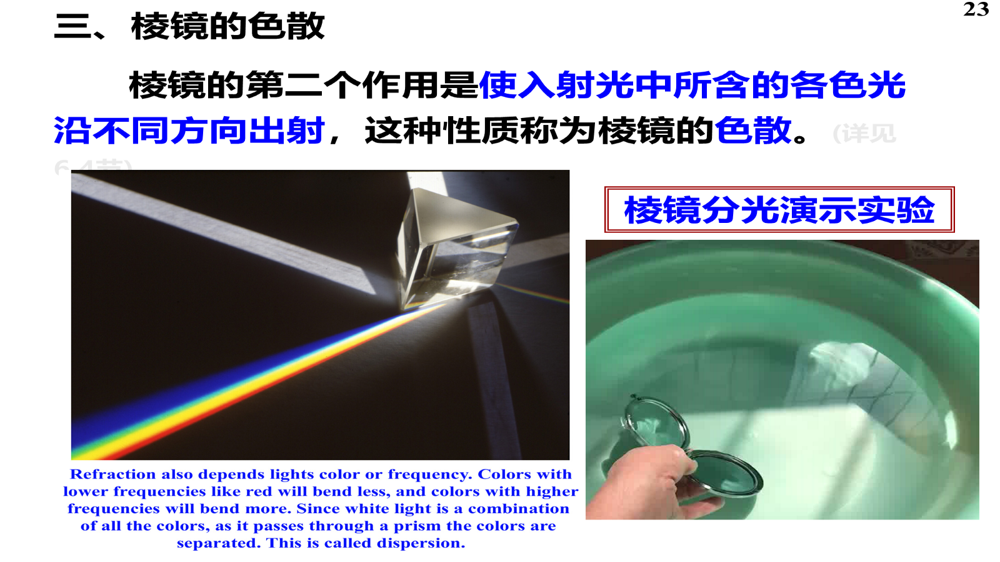
分光系统先用透镜 L₁ 把狭缝发出的光变成平行光，再由棱镜使不同波长获得不同偏向角，最后由透镜 L₂ 把各个方向的平行光会聚到焦平面上的不同位置。
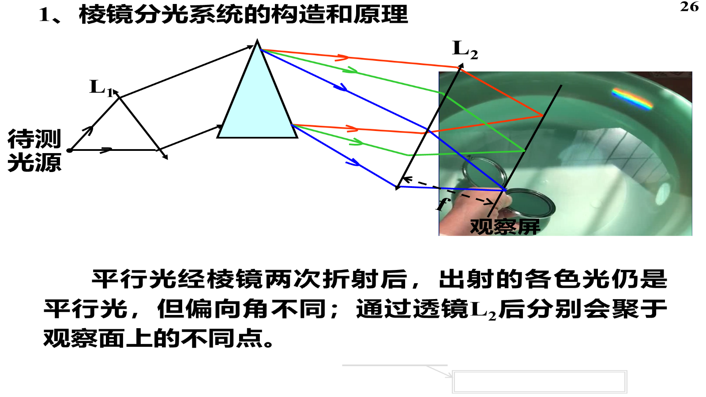
8.1 角色散
若用最小偏向角工作，定义角色散
它表示波长改变一个单位时，最小偏向角改变多少。在薄棱镜近似下，\(\delta\approx[n(\lambda)-1]A\)，所以
绝对值越大，不同波长分开的角度越大。正常色散区 \(\mathrm dn/\mathrm d\lambda\lt0\)，负号表示偏向角随波长增大而减小；比较分光能力时常看其绝对值。
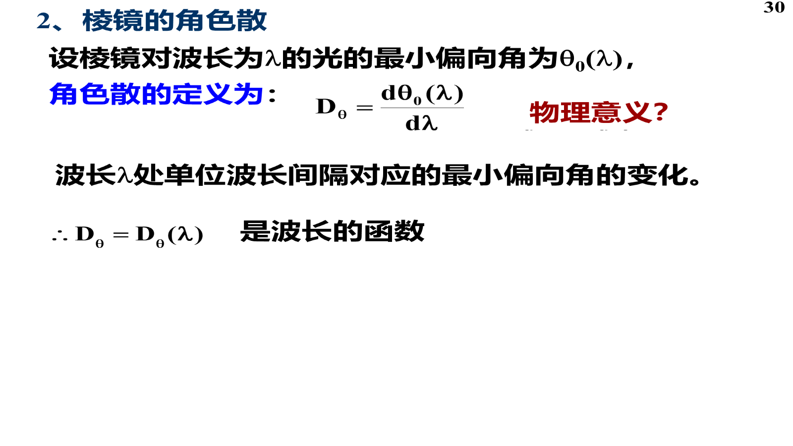
8.2 柯西公式、反常色散与精确角色散
依据：3-2 PPT第24—25、30—31页。\(\lambda\)取真空波长；介质色散\(\mathrm dn/\mathrm d\lambda\)描述材料性质，角色散\(\mathrm d\delta/\mathrm d\lambda\)还包括棱镜几何。透明波段常用经验性的柯西公式
\(a\)无量纲，\(b,c\)的单位分别与\(\lambda^2,\lambda^4\)相同，数值随选用的波长单位变化。PPT取正系数，得到正常色散\(\mathrm dn/\mathrm d\lambda<0\)；在某些吸收带附近可出现反常色散\(\mathrm dn/\mathrm d\lambda>0\)，上述正系数柯西式不再适用。因此“紫光折射率永远比红光大”不是无条件定律。
从题目数据选公式。 题目给\(a,b,c\)和波长时，先用柯西式求\(n\)及\(\mathrm dn/\mathrm d\lambda\)；题目直接给\(n\)和变化率时，不必再反求经验系数。接着看棱镜是否薄、是否处最小偏向，选择几何因子，最后把“材料每改变单位波长时折射率变多少”换成“出射方向变多少”。求导前统一波长单位，求导中的角用弧度。
PPT定义的是 各波长最小偏向角的变化率 。外界折射率\(n_0\)在所讨论波段视为常量，对\(\sin[(A+\delta_{\min})/2]=(n/n_0)\sin(A/2)\)求导，有
角用弧度；空气中\(n_0=1\)。\(A\)及所有相关角很小时，才退化为\(D_{\min}\approx(A/n_0)\,\mathrm dn/\mathrm d\lambda\)。同理，将两次小角折射\(i\approx mr_1,e\approx mr_2\)相加，得薄棱镜偏向\(\delta\approx(m-1)A\)。PPT的\(A=5^\circ,n=1.5\)给\(\delta\approx2.5^\circ\)；只知顶角小，却以很大的入射角照射，不能保证这一近似。
例：空气中\(A=60^\circ,n=1.5\)，精确几何因子为\(1/\sqrt{1-0.75^2}\approx1.512\)，若\(\mathrm dn/\mathrm d\lambda=-0.04\,\mu\mathrm m^{-1}\)，则\(D_{\min}\approx-0.0605\,\mathrm{rad}/\mu\mathrm m\)。负号说明波长增加时最小偏向角减小；比较分色能力通常比较\(|D|\)。
上例中几何因子无量纲，所以结果的单位来自\(\mathrm dn/\mathrm d\lambda\)，并约定角度为弧度。若两条邻近谱线相差\(\Delta\lambda=0.010\,\mu\mathrm m\)，可估\(\Delta\delta\approx D_{\min}\Delta\lambda=-6.05\times10^{-4}\,\mathrm{rad}\)；这是小波长间隔的线性估计，较宽波段应分别算各自角度。
不能混同两种求导条件 ：固定棱镜和入射方向时，\(i\)固定，精确追迹给
它在中心波长恰处最小偏向时，与上式的一阶结果相同；并不表示宽谱每个波长都同时处于最小偏向。外界也有色散时，应对\(m(\lambda)=n/n_0\)整体求导。角色散大也不等于一定分辨出相邻谱线，还要看狭缝像宽和仪器分辨能力。
8.3 角反射器：为什么能反向返回
依据：3-2 PPT第49—52页；教材书页126。
出处：3-2 PPT第49页。Corner prism意为角锥棱镜；图中三反射面两两垂直。
三块两两垂直的平面反射面组成角反射器。 当光线依次在三个面各反射一次 时，最终方向与原方向相反，通常沿平行但有横向位移的直线返回。
取三个面的法线分别沿\(x,y,z\)，方向向量为\(\mathbf v=(v_x,v_y,v_z)\)。平面反射只翻转法向分量、保留切向分量：
这条推理依赖三面正交和三次反射；两块垂直镜只改变两个分量，通常不足以在三维空间把任意方向反向。单块平面镜仅在法向入射时原路返回。角锥棱镜还要检查每面全反射或反射膜，以及入射位置是否使光线确实打到三个面；不是任意位置、任意方向都能进入有效光路。
应用是回归反射标志、测距和光路折返。PPT第52页另布置赵凯华教材第一章第3题：证明角反射器出射方向与入射相反并思考用途。方法入口是分解三个正交方向分量；检查三次反射及方向反向与原线重合的区别。
直角棱镜在主截面内经两个垂直面反射，可使传播方向转\(180^\circ\)；这一二维结论不能直接代替三面角反射器的三维结论。PPT第3页的光束上下次序也被反转，须区分光束转向与图像取向。
8.4 课件中的其他棱镜作用
依据：3-2 PPT第33—48页。下列机制按课件展开层级讲解；第44—45页的论文延伸明确标注“非考试内容”，不能据此把其他页也一并排除。
菲涅耳双棱镜：虚光源间距怎样从偏折角得到（第37—38页）

图为依据PPT第37页重绘的主截面示意，角度放大以方便辨认。两块小顶角薄棱镜底边相合；上半部把光向下偏，下半部把光向上偏。先看实线箭头，再把出射线反向延长，得到两个虚光源\(S_1,S_2\)。它们是同一光源\(S\)的两个虚像，不是另外放了两盏灯。
设源到薄棱镜距离为\(l\)，每半的顶角为\(A\)，外界为空气。薄棱镜给小偏折角\(\delta\approx(n-1)A\)；把出射方向向源平面回推距离\(l\)，每个虚源相对原源横移约\(l\tan\delta\approx l\delta\)。两侧位移相反，所以虚源间距约为\(2l(n-1)A\)。角要用弧度；题目给角度制时先乘\(\pi/180\)，再代入。近轴、薄棱镜及忽略厚度是这个位移估计的条件。
两束来自同一源的光在重叠区可干涉，这是分波前；不是任意两个独立灯泡经棱镜后就相干。PPT的超短脉冲装置还让两束光斜着交会，使不同横向位置对应不同的相对到达延迟，再用非线性介质及光谱记录重建脉冲信息。该装置的作用是脉冲测量，不能只按普通成像透镜解释。
布儒斯特角棱镜：先理解偏振，再看两个界面的角（第39—40页）
入射面 是入射光线与界面法线共同确定的平面，在下面的光路剖面图中就是纸面。电场在这个平面内振动叫\(p\)偏振；电场垂直于这个平面振动叫\(s\)偏振。偏振说的是电场振动方向，不是光线另向一个方向传播。

图为依据PPT第40页的教学重绘。第一幅为单界面，所有入射、反射、折射角都从法线量；红色虚线只标示可能的反射方向，在布儒斯特角且纯\(p\)偏振时，该反射分量振幅为零。第二幅为对称棱镜，虚线法线垂直于各自表面；内部两角\(r_B\)相加等于顶角\(A\)。
在无吸收、非磁、各向同性、折射率不同的两介质界面，\(p\)偏振的反射电场振幅系数可写成
\(r_p\)是反射电场与入射电场振幅之比（正负随电场基矢约定，零点不变），不要把下标\(p\)的系数\(r_p\)与折射角\(r\)混淆。这是电磁场边界条件给出的菲涅耳关系；此处使用它来理解“为什么能没有\(p\)反射”。要求\(r_p=0\)，就是令分子\(n\cos i_B=n_0\cos r_B\)。再联立折射定律\(n_0\sin i_B=n\sin r_B\)，消去折射率得到\(\sin i_B\cos i_B=\sin r_B\cos r_B\)。在不同折射率的非掠射分支，取\(i_B+r_B=90^\circ\)，于是
图上反射线与折射线垂直，是这个角度关系的几何表现。它只使\(p\)反射为零；\(s\)偏振仍有反射，非偏振光也仍有反射。两侧折射率完全相同则原本没有这个折射率界面的反射，不能把它当成有唯一特殊角的普通布儒斯特问题。
为什么棱镜顶角要选\(A=180^\circ-2i_B\)？ 第一面在\(i_B\)入射，内部折射角为\(r_B\)；若中心波长走对称光路，第二面的内部入射角也等于\(r_B\)。由上一节棱镜几何\(r_1+r_2=A\)，立刻得到\(A=2r_B\)。第二面从\(n\)到\(n_0\)的布儒斯特角恰为\(r_B\)，因此两个面都可降低\(p\)反射损耗，同时中心光路满足最小偏向。
带练：空气中\(n=1.50\)，怎样设计顶角？ 先由折射率求\(i_B=\arctan1.5=56.31^\circ\)，再求内部角\(r_B=33.69^\circ\)，最后取\(A=67.38^\circ\)。检查两内部角之和确为\(A\)，外部入射与出射角相等。若题目只给顶角，反过来先求\(r_B=A/2\)，再求\(i_B=90^\circ-r_B\)和\(n/n_0=\tan i_B\)。
真实材料的\(n\)随波长变，同一固定顶角通常只对选定中心波长精确满足上述设计。几何上的偏向最小也不是“色散有普遍最大值”的定理；分色程度仍应按角色散公式与材料数据计算。
色散补偿：先区分“不同颜色走向不同”与“到达时刻不同”（第41—43页）
一个短光脉冲由一段频率范围内的光叠加而成。各频率分量的相对相位决定它们何时相长叠加，因而决定脉冲在时间上的形状。 把颜色在空间重新合到同一路径，只解决了方向问题；要把脉冲压短，还要消除不合适的相对到达延迟。

图为机制示意：上图以两个频率分量的延迟举例，数值自编；下图是啁啾脉冲放大（CPA）的三个阶段，框宽表示持续时间的相对变化，不是光路长度。
记频率分量通过系统后增加的相位为\(\phi(\omega)\)，称谱相位；\(\omega=2\pi\nu\)是角频率，单位\(\mathrm{rad/s}\)。群延迟\(\tau\)表示一小段邻近频率组成的包络通过系统后的时间延迟。为什么它等于相位的一阶导数？取相近的两频率，出射场分别含有\(\cos[\phi(\omega)-\omega t]\)和\(\cos[\phi(\omega+\Delta\omega)-(\omega+\Delta\omega)t]\)。用和差化积，慢变包络的相位含有\((\Delta\phi-\Delta\omega t)/2\)；包络的对应极大满足\(t=\Delta\phi/\Delta\omega\)。令频率间隔趋于零，得到
\(G\)叫 群延迟色散 ，常缩写GDD，单位\(\mathrm{s^2}\)或\(\mathrm{fs^2}\)；\(1\,\mathrm{fs}=10^{-15}\,\mathrm s\)。\(G>0\)表示频率更高的邻近分量群延迟更大。\(\tau\)是“延后多久”，\(G\)是“延后多少会随频率改变”。常数谱相位只改变整体相位，线性谱相位只使整个脉冲平移；二次及更高次谱相位一般会改变脉冲形状。
在中心频率\(\omega_0\)附近展开，\(\phi\approx\phi_0+\tau_0(\omega-\omega_0)+\tfrac12G(\omega-\omega_0)^2\)，故\(\tau\approx\tau_0+G(\omega-\omega_0)\)。 数值入口 ：两分量相差\(\Delta\omega=0.02\,\mathrm{rad/fs}\)，若\(G=100\,\mathrm{fs^2}\)，延迟差约为\(\Delta\tau=G\Delta\omega=2\,\mathrm{fs}\)。若只考虑二阶项，补偿器需提供\(G=-100\,\mathrm{fs^2}\)，让总\(G\)为零；这不是让总传播时间为零。
材料与路径共同决定谱相位。例如均匀材料长度\(L\)固定时，\(\phi=n(\omega)\omega L/c\)，\(c\)是真空光速。棱镜对先让不同颜色走不同方向，使它们经历不同的材料路程与空气路程；改变棱镜间距、插入量，就能调节几何部分的谱相位，补偿已有的频率延迟差。实际符号和补偿量必须由整个光路决定，不能认定任意棱镜摆法都自动压缩脉冲。
“正常色散\(\mathrm dn/\mathrm d\lambda<0\)”描述折射率随波长的一阶变化；“正GDD”描述系统相位随角频率的二阶变化，两者不能只比较正负号。 CPA（啁啾脉冲放大） 中，“啁啾”指脉冲内瞬时频率随时间变化：先展宽脉冲以降低峰值功率，再放大，最后补偿相位将脉冲压缩。仅令二阶项抵消也不保证任意宽谱脉冲完全恢复，更高阶项还可能残留。
锥透镜与贝塞尔光束：先看锥面叠加，再解释函数（第46、48页）

图为过轴截面的教学示意，旋转一周才是三维锥面光；绿色区域表示有限口径光束的重叠范围。锥形折射面使不同半径、不同方位的准直入射光偏向轴线。各方位的波在轴附近相干叠加，形成明亮中心和同心环，不是普通透镜只在单个焦平面聚焦的光路。
以\(z\)为轴向，\(\rho\)为到轴的距离；每束波与轴夹角为\(\gamma\)，介质波数\(k=2\pi/\lambda\)分解为\(k_z=k\cos\gamma\)和\(k_\perp=k\sin\gamma\)。所有方位具有相同的轴向分量\(k_z\)；横向分量方向不同，合成后的轴对称振幅写成\(J_0(k_\perp\rho)\)。\(J_0\)叫 零阶第一类贝塞尔函数 ，不是电流或新的待求物理量；它描述振幅由中心向外振荡、出现零点的形状，\(J_0(0)=1\)。
理想单色场可写为\(E\propto J_0(k_\perp\rho)\cos(k_zz-\omega t)\)，时间平均强度正比于\(J_0^2(k_\perp\rho)\)。该横向分布不含\(z\)，因此称理想无衍射光束。第一个零点在\(k_\perp\rho\approx2.405\)：如题目给\(\lambda\)和锥角\(\gamma\)，先算\(k_\perp=(2\pi/\lambda)\sin\gamma\)，再求中心亮斑半径\(\rho_0\approx2.405/k_\perp\)；锥角越大，中心斑越窄。
为什么各方位相加会得到这个函数？
让方位角\(\psi\)从0变化到\(2\pi\)，在距轴\(\rho\)处，各方位波的额外横向相位为\(k_\perp\rho\cos\psi\)。把等权重的各方位贡献平均，就是\(J_0(u)=\frac1{2\pi}\int_0^{2\pi}\cos(u\cos\psi)\,\mathrm d\psi\)，其中\(u=k_\perp\rho\)。此式直接给出\(J_0(0)=1\)；离轴后各方位相位不再相同，便出现相长、相消形成的圆环。
理想模型的无限横向范围需要无限能量，真实有限口径只在有限距离内近似保持轮廓。局部遮挡后，未遮挡的锥面光可在后方重新叠加出中心部分，称自恢复；被挡住的能量并未凭空回来，遮挡过大也不能恢复原轮廓。
其余器件图示（第33—36、39、46—47页） ：五角棱镜用固定几何关系作约\(90^\circ\)转向；道威棱镜用于图像翻转与旋转；楔形棱镜偏转光束，旋转后扫出圆锥；变形棱镜对借两个方向放大率不同改变光斑长短轴；高折射率耦合棱镜借倏逝场和切向波数匹配把光耦入薄膜导模；偏振棱镜利用各向异性或偏振选择性分束；阿贝、佩林—布洛卡棱镜组合折射和反射来分光、转向。判断题先说明它控制方向、空间形状、偏振还是频谱，再逐面用相应规律；不能用一条\(\delta=(n-1)A\)包办所有结构。
参考判断
存在倏逝场，振幅沿法线指数衰减；理想半无限无吸收条件下，没有向空气远处输送能量的法向传播折射波。
参考判断
固定入射角时，折射率变化使各色内部路径不同；通常只有中心波长处于对称光路。最小偏向角的导数与固定入射角的导数只在该中心状态一阶相同。
参考判断
一般不能；如只翻转x、y分量，z分量保持，只有z分量为零的特定二维构型才得到完全反向。
9. 这一课做题时的顺序
全反射题
先确认传播方向和两侧折射率；再算临界角；最后比较实际入射角与临界角。不要只看到“大角度”三个字就判全反射。
一般棱镜题
第一面折射 → 用 \(r_1+r_2=A\) 转到第二面 → 检查第二面能否出射 → 第二面折射 → 用 \(\delta=i+e-A\) 求偏向角。
最小偏向题
先写 \(i=e\)、\(r_1=r_2=A/2\)，再使用一次折射定律；不要把一般状态误当成对称状态。
色散题
先判断 \(\mathrm dn/\mathrm d\lambda\) 的符号，再判断哪种颜色折射率更大；最后比较偏向角或求 \(\mathrm d\delta/\mathrm d\lambda\)。
10. 第 02 课自测
- 为什么光从空气射入玻璃不可能发生全反射？
答案
全反射要求光从高折射率介质射向低折射率介质；空气到玻璃不满足 \(n_1\gt n_2\)。 - 玻璃折射率为 1.5，玻璃—空气界面的临界角约为多少？
答案
\(\arcsin(1/1.5)\approx41.8^\circ\)。 - 直角棱镜中光以 45° 入射到斜面，为什么通常会全反射？
答案
普通玻璃到空气的临界角约 42°，45° 大于临界角。 - 光纤弯得过急为什么会漏光？
答案
弯曲改变了光在芯层—包层界面的局部入射角，某些光线会降到临界角以下。 - 写出棱镜内部角与顶角的关系，以及偏向角公式。
答案
\(r_1+r_2=A\)；\(\delta=i+e-A\)。 - 最小偏向时光路有什么对称关系？
答案
\(i=e\)，\(r_1=r_2=A/2\)。 - 最小偏向角法为什么可以测折射率？
答案
\(A\) 和 \(\delta_{\min}\) 可测，对称条件把两个表面的未知角合并，代入折射定律即可解出 \(n/n_0\)。 - 薄棱镜公式 \(\delta\approx(n-1)A\) 的适用条件是什么？
答案
棱镜在空气中，顶角及相关入射、折射角都足够小，只保留一级小量。 - 正常色散中红光和紫光谁偏折更大？
答案
紫光。正常色散时短波长折射率较大。 - 一般棱镜计算中，为什么在求第二面出射角前要检查全反射？
答案
若第二面的内部入射角超过临界角，根本没有传播到外界的折射光，出射角没有实数解。
第 03 课：球面折射成像
这一课研究的不是“背一个新公式”，而是一个折射球面怎样把入射光束重新组织成另一束光。先把一条光线写清楚，再用近轴条件让同一物点发出的许多光线得到共同像点，球面成像公式就出来了。
1. 先把装置和符号钉住
球面顶点记为 \(O\)，球心为 \(C\)，曲率半径为 \(r=OC\)。左侧介质折射率为 \(n\)，右侧为 \(n'\)；光从左向右传播。物点 \(P\)、像点 \(P'\) 到顶点的有向距离分别是 \(s\)、\(s'\)。
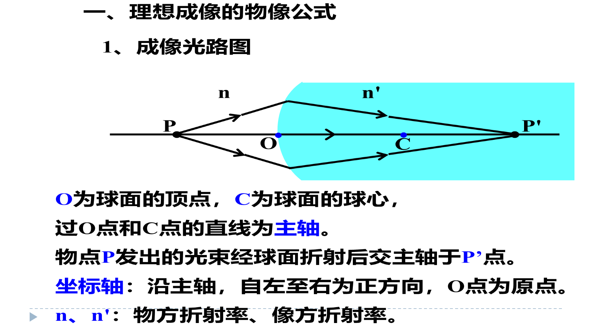
| 量 | 从哪里量 | 正负怎样定 | 最常见的误写 |
|---|---|---|---|
| s | 当前折射面顶点 O 到物点 P | P 在 O 右边为正，左边为负 | 把题目给的正长度直接代入 |
| \(s'\) | \(O\) 到像点 \(P'\) | \(P'\) 在 \(O\) 右边为正，左边为负 | 先假定实像一定取正 |
| r | O 到球心 C | C 在 O 右边为正，左边为负 | 把半径永远写成正数 |
2. 为什么必须加“近轴”条件
从轴上物点 \(P\) 发出一条光线，在球面上高度为 \(h\) 的 \(A\) 点折射。法线就是 \(AC\)。几何关系把物距、像距、半径与三个角联系起来，再和折射定律 \(n\sin i=n'\sin i'\) 联立。
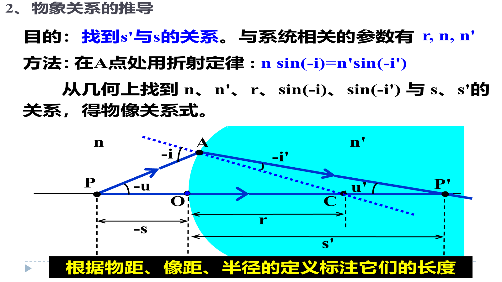
若保留精确的正弦和正切，所得像点位置会随光线高度 h 改变：从同一物点出发、打在球面不同位置的光线，并不严格交在同一点。这就是球差出现的根源。所谓理想成像，只能在限定范围内成立。
当光线靠近光轴，且各角都足够小时，可以用 \(\sin\theta\approx\tan\theta\approx\theta\)。于是每个角都能写成“高度除以轴向距离”，并且共同的 \(h\) 被约去，像点位置不再依赖选了哪一条近轴光线。
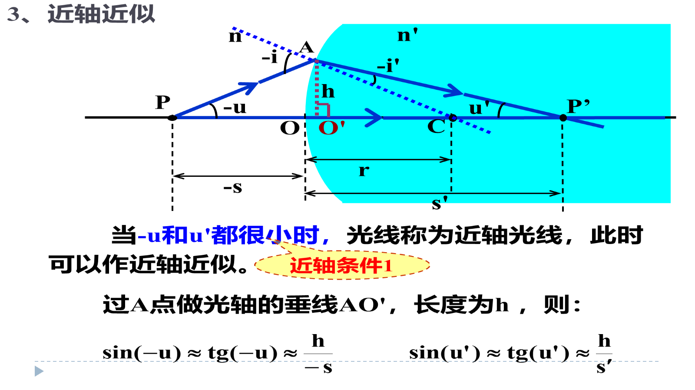
2.1 精确关系怎样退化成近轴公式

先标\(P\to A\to P'\)，其中\(AC\)是法线。图中的\(l,l'\)为斜线长度，\(s,s'\)从顶点\(O\)沿轴量；所以近轴替换\(l\approx-s\)有几何依据，并非人为给长度加负号。检查“是否近轴”就是检查这些斜线长度能否用轴向距离近似。
依据：3-4 PPT第4—8页；教材§3.3.2—3.3.5，书页127—131。以左侧实物、右凸折射面、右侧实像的构型为例，令入射点为\(A\)、顶点\(O\)、球心\(C\)，\(l=PA>0,l'=AP'>0\)；\(s,s',r\)仍为带符号的轴向坐标。两三角形的正弦定理与\(n\sin i=n'\sin i'\)联合给
这一步的几何消元可展开来看：令\(\varphi\)为半径\(CA\)与向左主轴的锐夹角，图示构型\(P\)在\(O\)左侧、\(P'\)在\(C\)右侧。两三角形给\(\sin i=(r-s)\sin\varphi/l\)、\(\sin i'=(s'-r)\sin\varphi/l'\)。代入\(n\sin i=n'\sin i'\)，约去非轴向光线共有的\(\sin\varphi\)，得\(n(r-s)/l=n'(s'-r)/l'\)；展开并把含\(r\)的项移到一边，就是上面的精确式。轴向光线用连续极限理解。
从\(A\)沿球面移动时，\(l,l'\)随入射高度改变，一般求出的\(s'\)也随之改变，出射束失去单心性。近轴时\(l\approx-s,l'\approx s'\)，上式变为\(n'/s'-n/s=(n'-n)/r\)，入射高度消失。
球面反射的对应精确关系（左实物、左实像、凹面镜构型）是
这里\(l,l'>0\)而\(s,s',r<0\)。近轴时\(l\approx-s,l'\approx-s'\)，才得到\(1/s+1/s'=2/r\)。所以“球面光束一般不单心”与“近轴球面镜可成理想像”并不矛盾，二者近似层次不同。精确式中的几何路长\(l\)和代数坐标\(s\)不可随意互换。例：轴向平行光经凹球面镜反射，若入射点半径与轴夹角为\(\varphi\)，光线轴交点距球心为\(R/(2\cos\varphi)\)；仅\(\varphi\to0\)才得到顶点前\(R/2\)焦点，离轴高度增加会产生球差。
3. 球面折射公式：每一项在说什么
把小角关系代入折射定律并整理，得到单个球面的近轴成像公式：
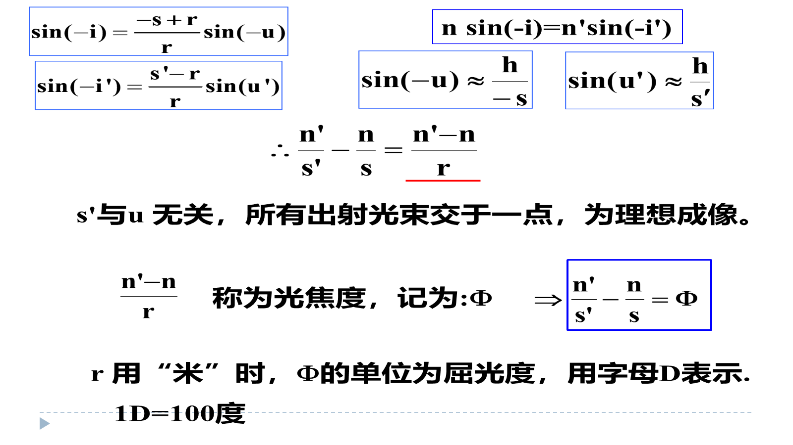
左边的 \(n/s\) 与 \(n'/s'\) 可看成物方、像方的近轴会聚程度；右边只由两侧介质和球面形状决定。因而这条式子可以读成：
光焦度
既可能为正，也可能为负。以向右为正：若 \(n'\gt n\) 且球心在右侧，\(\Phi\gt0\)，球面对近轴光束有会聚作用；若改变折射率次序或曲率方向，作用可能变成发散。
同种介质
\(n'=n\) 时 \(\Phi=0\)，公式给出 \(s'=s\)。没有折射率突变，球面边界不改变光束。
平面极限
\(r\to\infty\) 时 \(\Phi\to0\)，得到 \(n'/s'=n/s\)。平面折射是球面折射的极限，不是另一套理论。
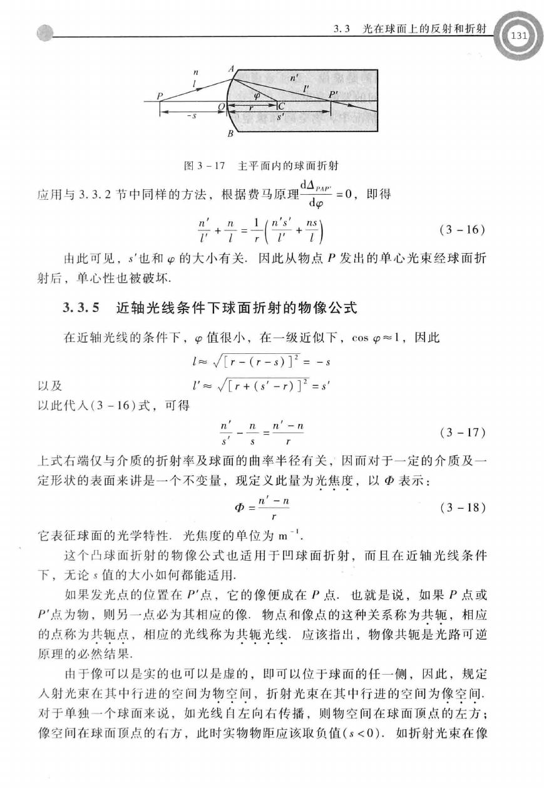
4. 焦点与焦距不是额外定义出来的公式
让物点移到无穷远，\(1/s\to0\)，平行近轴光经折射后会聚或看似发散自像方焦点 \(F'\)。像方焦距为
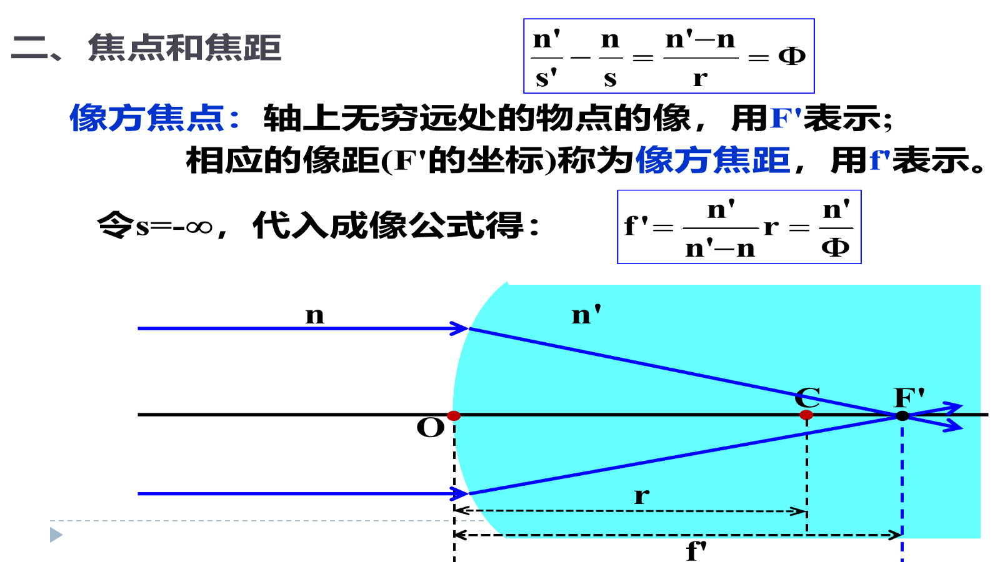
反过来，若物点放在物方焦点 \(F\)，折射后的近轴光平行，像在无穷远。令 \(1/s'\to0\)，得到
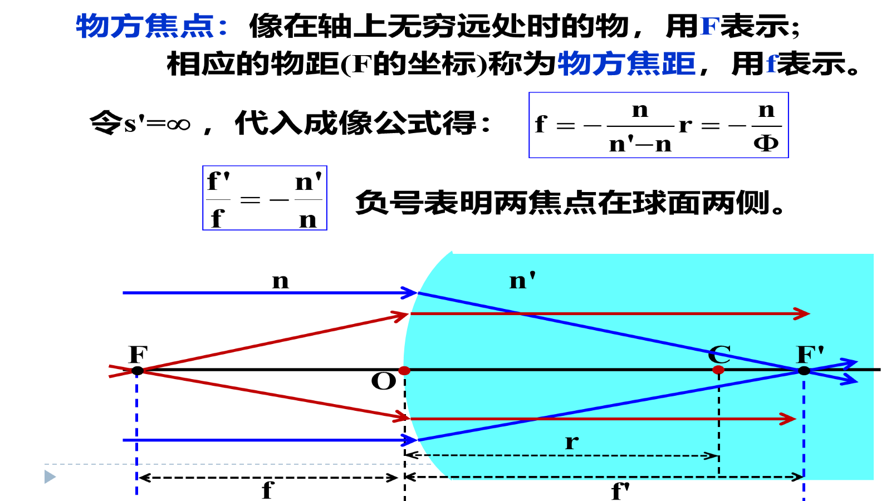
因此单折射球面的两焦距一般不等长：
这和空气中的薄透镜不同。两侧介质折射率不同时，只记“左右各一个等长焦距”会出错。
4.1 高斯公式与牛顿公式
把光焦度分别写成 \(n'/f'\) 或 \(-n/f\)，球面折射公式可改写为高斯形式：
高斯公式从顶点 \(O\) 量距离。若改从焦点量，定义 \(x=s-f\)、\(x'=s'-f'\)，便得到牛顿形式：
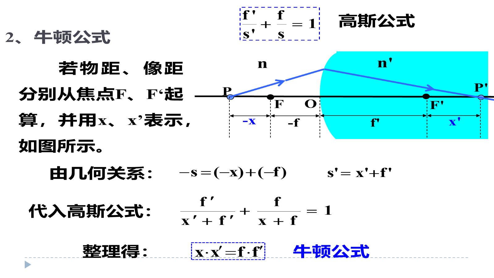
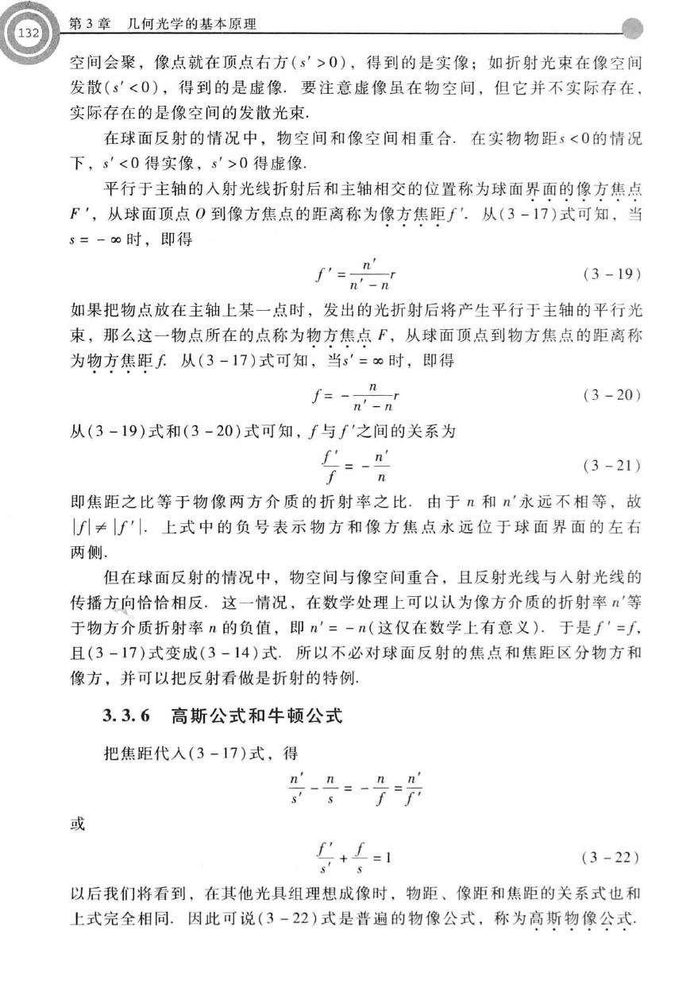
4.1 高斯、牛顿公式与放大率的连锁推理
本节只做两件事：把物像公式的量距原点从顶点换到焦点，再把像高与物高的比写成可计算的形式。对照上方“高斯与牛顿公式”图，先写\(x=s-f\)、\(x'=s'-f'\)，而不要凭图把\(x\)误当作正的线段长。\(\beta=y'/y\)是带符号的横向放大率；负值表示倒立，不是“像高小于零”这个长度概念。
依据：3-4 PPT第11—12、16页；教材书页132—133、138。球面折射式除以\(\Phi\)，用\(f'=n'/\Phi,f=-n/\Phi\)，立即得\(f'/s'+f/s=1\)。令\(s=x+f,s'=x'+f'\)，交叉相乘：
同项消去便是\(xx'=ff'\)。两者描述同一对共轭点，只是量距原点不同。计算中有零分母时须用无穷远共轭的极限解释，不能机械约去。
经过球心的光线不偏折，相似三角形给\(\beta=(r-s')/(r-s)\)；结合物像公式，化为\(\beta=ns'/(n's)\)。再利用\(f/f'=-n/n'\)与牛顿式，得
这里使用近轴、小物条件。若改为空气薄透镜，\(f=-f'\)，于是\(\beta=s'/s\)；若为球面镜，\(f=f'\)，于是\(\beta=-s'/s\)。同一个一般式解释两种负号差别。第06—08课中，\(s,s'\)需改从各自主点量，不能继续从外表面顶点量。
4.2 已布置习题 3.10：把“像在第二面顶点”翻译成条件
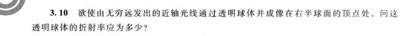
只看入手提示
先看一个容易忽略的特殊性：目标像点恰好是第二个表面的顶点。平行光经过第一面后，若已经在距第一面一个直径的位置会聚，它到达第二面时光束高度正好缩为零；第二面不再构成一次普通的有限孔径成像。因此先对第一面令物在无穷远，求其像方焦距，再令它等于球的直径 \(2R\)。不要把 \(s_2'=0\) 硬代入含 \(1/s_2'\) 的公式。
5. 横向放大率：像的位置还不够
轴上公式只能给出像点位置。对垂直于光轴的小物 y，近轴条件下横向放大率为
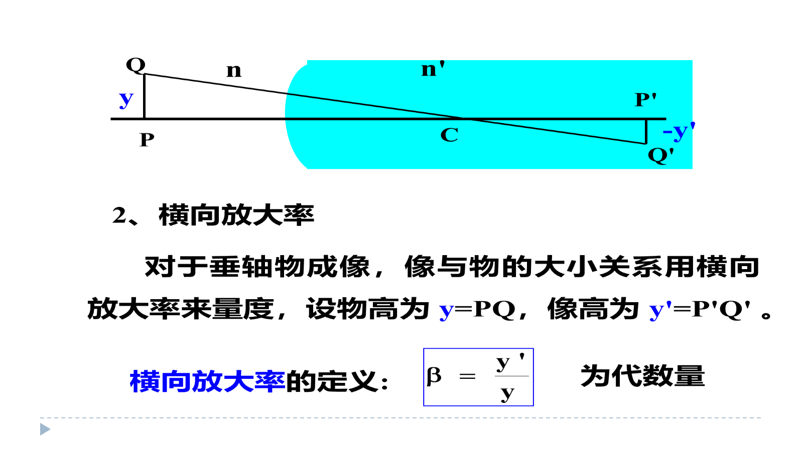
\(|\beta|\) 表示大小比例；\(\beta\gt0\) 表示正立，\(\beta\lt0\) 表示倒立。这里的正负仍来自统一的坐标和高度约定，而不是另背一套“实像倒立、虚像正立”的口诀。
若关心光束倾角变化，可定义近轴角放大率
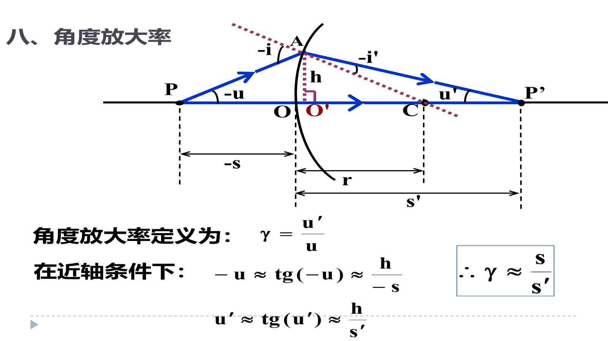
5.1 亥姆霍兹—拉格朗日定理：尺寸与光束角度的约束
教材§3.6.3（书页144，PDF第162页）把这条关系单独列为定理。在近轴物、近轴光线的一阶理想共轴成像中，物像高与对应光线的有向倾角满足
其中\(n,n'\)是系统外侧物像介质的折射率；\(y,y'\)是小物\(PQ\)及像\(P'Q'\)相对轴上共轭点\(P,P'\)的有向高度。\(u,u'\)取自连接轴上\(P,P'\)的同一条对应孔径光线，是它在物像两侧与主轴的有向夹角，不能任取一条从离轴\(Q\)出发的光线替代。本节先按普通折射系统讨论；有反向传播时必须保持统一的角度与折射率记账约定。
它就是前面两个放大率关系的物理约束：
因此横向放大与光束角度变化不能任意指定；两侧介质相同时，\(\beta\gamma=1\)，并不表示\(\beta=\gamma\)。例如\(n=1,n'=1.5,\beta=-2\)，则\(\gamma=-1/3\)；若错用同介质公式，就会算成\(-1/2\)。

适用边界：不能把本式直接改为\(ny\sin u=n'y'\sin u'\)就宣称任意大孔径系统都成立；这里用的是近轴一阶定理。这里的光束角放大率，也不能不经定义换算就当作第四章仪器的视角放大率。
考试入口：问“为什么像放大与光锥角度不能同时任意增大”，或给\(n,n',\beta\)求\(\gamma\)，先用本定理；第07课节点的\(\gamma=1\)也由此得到\(\beta=n/n'\)，所以节点不一定具有横向等大性质。
快速检查：空气中的同一共轭物像，若\(\beta=-4\)，是否可能同时有\(\gamma=-4\)？
参考答案
不可能。两侧同介质要求\(\beta\gamma=1\)，所以\(\gamma=-1/4\)。原判断的乘积为16，违反一阶成像约束。
6. 连续折射：前一面的像就是后一面的物
厚元件、玻璃球和多面系统没有新的总口诀，可靠做法是逐面成像。设第一、第二面顶点间距为 \(d\)，第一面算得像距 \(s_1'\)。把原点移到第二面后，第二面的物距是
这条式子只是坐标平移。关键不是结果正负本身，而是第二面看到的入射光究竟正在发散，还是正准备会聚：若中间像位于第二面之后，入射到第二面的光正在向它会聚，它就是第二面的虚物。
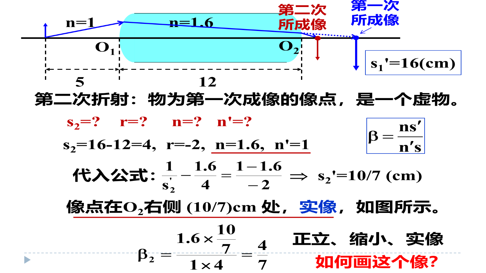
每一面求得横向放大率 \(\beta_1,\beta_2\) 后，总放大率是乘积：
6.1 课件例题：中间实像成为第二面的虚物
读题先画两个顶点。 以第一面顶点为0，第二面顶点在右方12 cm；第一次像点先用第一面的公式求，第二次物距再减去12 cm换原点。若第一次会聚点落在第二面右侧，第二面收到的是还没会聚的光束，故它面对虚物。下面数字中的16 cm是“第一次像到第一顶点”，4 cm才是“该点到第二顶点”。这个换原点步骤决定第二次代入的正负。

依据：3-4 PPT第18—21页。玻璃棒\(n=1.6\)，两顶点间距\(12\,\mathrm{cm}\)，两端球面半径大小均为\(2\,\mathrm{cm}\)，物在首面前\(5\,\mathrm{cm}\)，外界为空气。全程取向右为正。
第一面\(s_1=-5,r_1=2\)：\(1.6/s_1'-1/(-5)=0.6/2\)，得\(s_1'=16\,\mathrm{cm}\)，\(\beta_1=16/[1.6(-5)]=-2\)。这表示若没有第二面，光会在首面右方16 cm会聚。
实际第二面在右方12 cm，光还没会聚就先到达它；所以\(s_2=16-12=4\,\mathrm{cm}>0\)为虚物。第二面\(r_2=-2,n=1.6,n'=1\)：
最终像在第二面右方\(10/7\) cm，总放大率\(\beta=(-2)(4/7)=-8/7\)，故为倒立、略放大的实像。“第二次正立缩小”是相对中间物而言，不是相对最初物体。PPT第21页把判实像处写成\(s_2>0\)；这里应看最终像距\(s_2'>0\)，\(s_2>0\)只判定第二面的虚物。教材例3.4使用20 cm间距，结果不同，不能把两组数据混用。
6.1 已布置习题 3.12、3.13、3.14
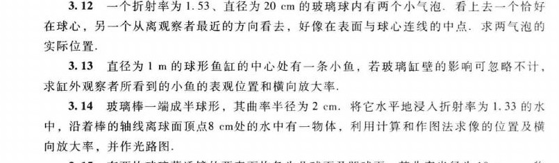
习题 3.12*：只看入手提示
观察者只通过离自己最近的球面看两个气泡。把每个气泡分别当作物点，用同一个表面、同一个顶点和同一观察方向计算表观像。题目给的是两个表观像重合，不是两个实际位置重合；把两个 \(s'\) 相等，分别反求两个实际物距。
习题 3.13：只看入手提示
先利用“鱼在球心”判断入射到球面的光线与法线是什么关系，再用球面折射公式核对表观位置。横向放大率不能只凭直觉写 1，应把求得的 \(s,s',n,n'\) 代入 \(\beta\) 公式检查。
习题 3.14：只看入手提示
先画出水、玻璃棒和半球球心，光从水进入玻璃，所以物方折射率是 1.33，像方是玻璃折射率。按光行方向建立坐标后再判 r 的正负。计算法与作图法应得到同一像区；作图优先用平行光、过物方焦点的光和过球心的光。
7. 平面折射：令 \(r\to\infty\)
平面可以看作曲率半径无穷大的球面。令 \(r\to\infty\)，球面折射公式变成
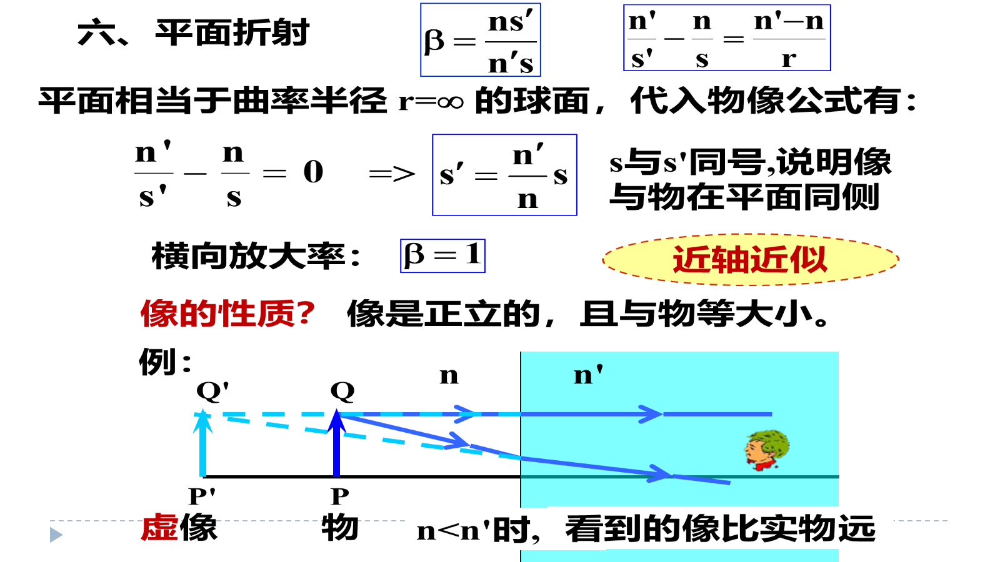
因为 \(n,n'\) 都为正，\(s\) 与 \(s'\) 同号。真实物体在界面物方时，单平面折射得到的仍是同侧虚像。物在水中、观察者在空气中时，光从水射向空气，\(|s'|=(n_{\text{空气}}/n_{\text{水}})|s|\)，所以看起来变浅。
7.1 玻璃平板为何使物体发生表观平移
平板有两个平行界面。第一面产生中间虚像，第二面再以它为物；逐面使用平面折射关系，外界介质相同时，最终横向大小不变，但轴向位置发生平移。近轴条件下，厚度为 \(d\)、平板折射率为 \(n\)、外界折射率为 \(n_0\) 时，向观察者一侧的位移量为
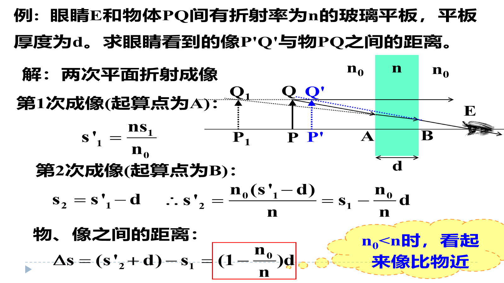
7.2 已布置习题 3.3
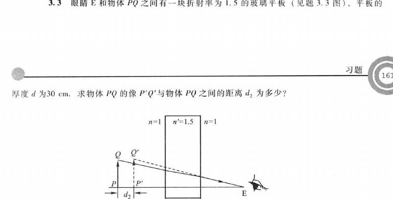
只看入手提示
光从物体到眼睛，依次通过空气→玻璃、玻璃→空气两个平面。任选一个界面作第一步都要和实际光行方向一致。先求第一面的中间像，再把它相对第二面重新量物距；最后比较物点与最终虚像的坐标。可以用上面的平板位移式复核，但第一次最好逐面算。
7.4 平面折射为何通常不能严格成点像
依据：教材§3.2.2、附录3.1书页119—121、155—157；3-4 PPT第22—30页。平面反射严格保持单心性， 平面折射通常不保持 ；视深公式仅在近法线观察的近轴范围使用。

教学重绘依据教材§3.2.2。先找真实物点\(P\)、入射点\(A\)、物点正上方的\(O\)；把出射光反向延长，与\(OP\)交于\(Q\)。两个直角三角形共享横边\(OA\)，于是\(OA=d\tan i=d_{\rm app}\tan r\)。这里\(Q\)只是这一条光线的轴交点，要检验“成点像”，还必须换另一条光线看是否交在同处。
设水下轴上点距平面法向深度为\(d\)，物方折射率\(n\)、出射方\(n'\)，某条光线入射、折射角为\(i,r\)。入射点到轴的横距为\(d\tan i\)，出射线反向延长到轴的表观深度为
一般随\(i\)变化，故不同光线没有同一虚像点。\(i,r\to0\)才得到\(d_{\rm app}\approx(n'/n)d\)与\(\beta=1\)。例：\(n=4/3,n'=1\)，近法线深度为\(0.75d\)；\(i=30^\circ\)时\(r\approx41.81^\circ\)，该光线的轴交深度约\(0.645d\)。不能把\(0.75d\)用于任意斜视角。教材的斜细光束结果还可具体表示：临时取界面为\(X\)轴、从界面指向物方为\(Y\)正向，物点\(P=(0,d)\)，令\(\eta=n'/n\)、\(i\)为中心光线入射角。子午面内两条邻近折射线的反向延长交点为
子午与弧矢是什么意思？ 中心光线和界面法线张成的平面叫子午面；以中心光线为轴，在与子午面垂直的方向再取一小束邻光，得到弧矢方向。斜细光束在这两个方向一般不能同时收缩到一点，形成两条焦线。上式\((X_t,Y_t)\)表示子午截面内相邻反向延长线交点的位置；\(Y_s\)对应另一组的轴交位置。它们不应直接当作所有光线共有的“水下物体像深”。
斜视焦线坐标如何从邻近两条光线得到？
把中心入射角暂记为变量\(i\)。入射点横坐标为\(a(i)=d\tan i\)，其折射线及反向延长线满足\(X+Y\tan r(i)=a(i)\)。两条角度只差很小的邻光交于同一点，故固定交点\(X,Y\)，对\(i\)求导：\(Y\sec^2r\,\mathrm dr/\mathrm di=d\sec^2i\)。折射定律给\(\mathrm dr/\mathrm di=\cos i/(\eta\cos r)\)，所以\(Y_t=d\eta\cos^3r/\cos^3i\)。用\(\sin r=\sin i/\eta\)改写余弦比，即得上面的\(Y_t\)；再代回\(X_t=d\tan i-Y_t\tan r\)便得\(X_t\)。这一步解释了为什么要使用邻近两条线，而不能只延长一条线就认定完整点像。
式中根号需在可传播折射的范围内。反向延长线与法线轴的交点高度则是\(Y_s=d\eta\cos r/\cos i\)。\(i\to0\)时\(X_t\to0,Y_t,Y_s\to\eta d\)；斜视时一般不重合。教材进一步指出，斜入射的细光束有子午、弧矢两条互相垂直的焦线，通常不汇成一个点，属于几何像散，区别于孔径很小造成的衍射。
平行平板两侧介质相同为\(n_0\)时， 单根光线出射方向与入射方向平行 ：两面折射关系相乘即可消去平板\(n\)。设板内角\(r\)、入射角\(i\)、厚度\(d\)，该光线的横向偏移为
沿界面法线衡量的表观像移则为\(\Delta=d[1-\tan r/\tan i]\)，近法线时才成为\(d(1-n_0/n)\)。二者方向和定义不同，不可混用；出射平行不保证原先会聚的整束光仍严格单心。
7.5 斯涅耳窗口：180°外景压缩在约97°光锥内
依据：3-4 PPT第27—29页。取平静水平水面，观察者在水下。空气中方向角\(i_a\)从天顶\(0^\circ\)变化到地平线\(90^\circ\)，水内角\(i_w\)满足\(n_a\sin i_a=n_w\sin i_w\)。因此
取\(n_w=4/3,n_a=1\)，半角\(\theta_c=48.59^\circ\)，顶角\(2\theta_c=97.18^\circ\)；若取\(n_w=1.33\)则顶角约\(97.5^\circ\)。它表示整个外部上半空间映入这一内部光锥，不是水下只看到了外部上半空间中的97°。深度为\(h\)的观察者，其窗口在水面上的圆盘半径为\(h\tan\theta_c\)；如\(h=1\) m，半径约1.13 m。
窗口外的反向观察光路超过水到空气的临界角，于是主要看到水下环境的全反射像，而不是必然一片黑。波浪会改变局部法线，使窗口边缘变形；不能把平面近轴视深式延伸到窗口边缘。
参考判断
不能。β=1属于近法线、小物的近轴结果。斜视时平面折射通常破坏单心性，出现不同的轴交点与两条焦线。
8. 作图法：三条特殊光线
近轴理想条件下，球面折射可以用三条特殊光线定位像点：
- 平行于光轴入射的光，折射后通过像方焦点 \(F'\)；
- 通过物方焦点 F 的入射光，折射后平行于光轴；
- 通过球心 C 的光沿法线入射，方向不变。
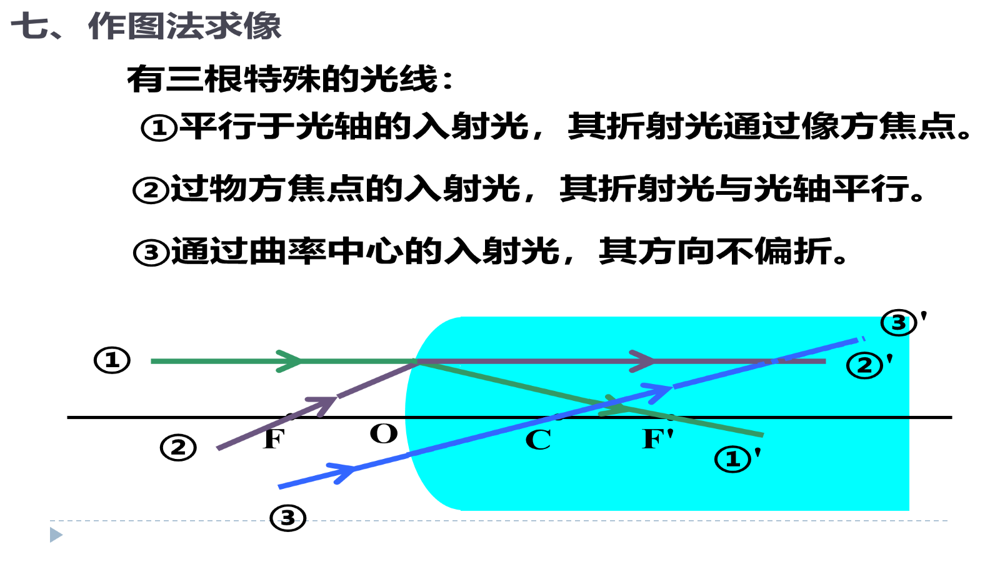
若算出的像是虚像，图上应把折射后的发散光反向延长；不要为了让线相交而改变真实光线方向。作图只能给出几何位置和正倒、放缩趋势，数值仍由公式确定。
9. 这类题的固定做法
- 画箭头：先确定光从哪种介质射向哪种介质。
- 圈当前面：只看正在计算的那个顶点，并令它为原点。
- 列数据：写出 \(n,n',s,r\)，所有距离先带符号。
- 求像距：用 \(n'/s'-n/s=(n'-n)/r\)；必要时再求 \(\beta\)。
- 解释结果：把 \(s'\) 放回图中，结合出射光判断实像或虚像。
- 有下一面就平移原点：通常 \(s_2=s_1'-d\)，然后从第 2 步重新来。
10. 第 03 课自测
- 球面折射公式成立为什么要限定近轴光线？
答案
精确关系中像点随光线高度和角度改变；近轴小角近似把关系线性化并消去共同的光线高度，使一阶像点与所选近轴光线无关。 - 写出单球面折射公式，并说明 \(r\) 的符号由什么决定。
答案
\(n'/s'-n/s=(n'-n)/r\)。球心位于顶点右侧时 \(r\gt0\)，左侧时 \(r\lt0\)。 - \(n'=n\) 时公式应给出什么？物理意义是什么？
答案
得到 \(s'=s\)；没有折射率突变，边界不改变光束会聚状态。 - 为什么单折射球面的 \(f\) 与 \(f'\) 通常不等长？
答案
\(f=-nr/(n'-n)\)，\(f'=n'r/(n'-n)\)，且 \(f'/f=-n'/n\)；两侧介质折射率不同。 - 高斯公式和牛顿公式分别从哪里量距离？
答案
高斯公式用从顶点量的 \(s,s'\)；牛顿公式用从焦点量的 \(x=s-f\)、\(x'=s'-f'\)。 - 第一面像距为 \(16\,\mathrm{cm}\)，第二面顶点在第一面右侧 \(12\,\mathrm{cm}\)，第二面的物距是多少？它一定是实物吗？
答案
\(s_2=16-12=+4\,\mathrm{cm}\)。正号只表示中间像在第二面右侧；入射光正向该点会聚，所以它是虚物。 - 物在水中、人在空气中近轴观察，为什么看起来变浅？
答案
光从水中 \(n\) 射向空气 \(n'\)，有 \(s'=(n'/n)s\)。因 \(n'\lt n\)，所以虚像到界面的距离绝对值较小。 - 平面折射为什么有 \(\beta=1\)，却仍会使物体看起来位置改变？
答案
\(\beta=1\) 只表示横向尺寸不变；轴向像距仍按 \(s'=(n'/n)s\) 改变。 - 两面系统总横向放大率怎样求？
答案
逐面计算 \(\beta_1,\beta_2\)，总放大率 \(\beta_{\text{总}}=\beta_1\beta_2\)；更多表面继续相乘。 - 球面折射作图可优先选哪三条特殊光线？
答案
平行轴线后过 \(F'\)；过 \(F\) 后平行轴线；过球心 \(C\) 沿法线不偏折。
第 04 课：球面反射成像
反射并不是另起一套公式。老师课件最重要的处理是：把反射看成球面折射在 \(n'=-n\) 时的形式。这样，上一课的符号、焦点、放大率和作图法都能直接迁移；真正要重新适应的，是反射光回到了入射一侧。
1. 先看光束发生了什么
轴上物点 \(P\) 发出的近轴光射到球面镜。每一点的法线都经过球心 \(C\)，反射角等于入射角。若反射光真实会聚，交点是实像；若反射光发散，其反向延长线的交点是虚像。
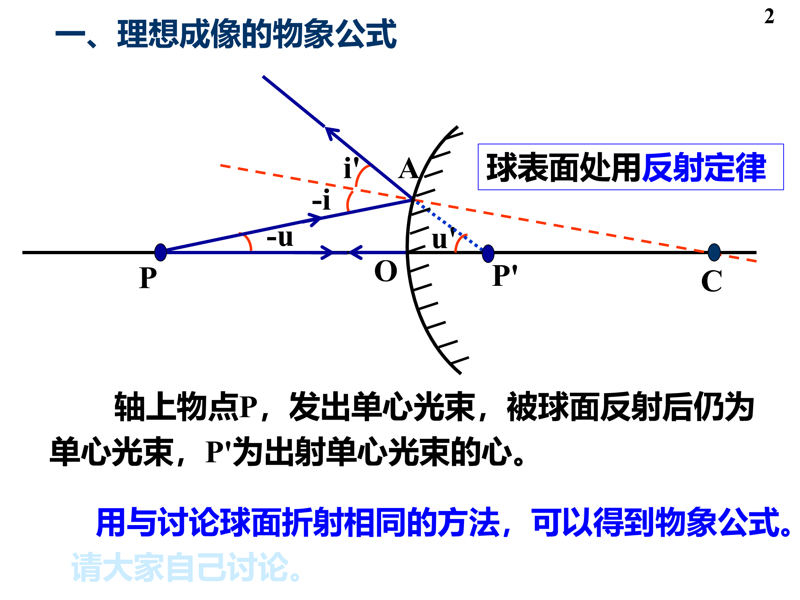
2. 为什么令 \(n'=-n\) 就能从折射得到反射
折射定律写成 \(n\sin i=n'\sin i'\)。在同一套角度正负约定下，反射定律要求 \(i'=-i\)。形式上令 \(n'=-n\)，便有
把 \(n'=-n\) 代入上一课的球面折射公式
约去 \(-n\) 后得到球面反射物像公式：
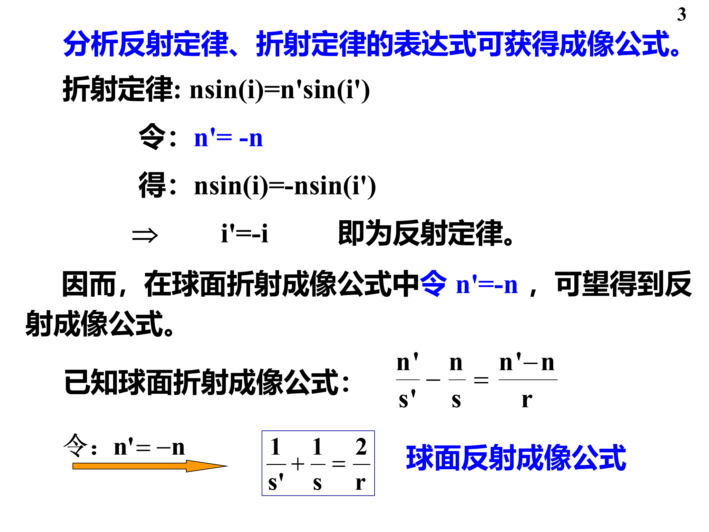
2.1 从公式本身读出凹、凸面镜
在本讲义的“向右为正”坐标中，镜面朝向左侧入射光：
| 镜面 | 球心位置 | 半径与焦距 | 对平行近轴光的作用 |
|---|---|---|---|
| 凹面镜 | 球心在镜前左侧 | \(r<0,\ f'=r/2<0\) | 反射光在镜前真实会聚 |
| 凸面镜 | 球心在镜后右侧 | \(r>0,\ f'=r/2>0\) | 反射光发散，反向延长线交于镜后 |
这与高中常见的“凹面镜焦距取正”并不冲突，只是符号约定不同。高中有些教材把实物距、实像距当正长度；本课件使用的是统一坐标。做题时最危险的是把两套符号混在同一行。
3. 焦点与焦距
令物点在无穷远，即 \(1/s\to0\)，球面反射公式给出
因此像方焦距为 \(f'=r/2\)。由光路可逆性，从同一点发出的光反射后成为平行光，所以物方焦点与像方焦点在物理空间重合：
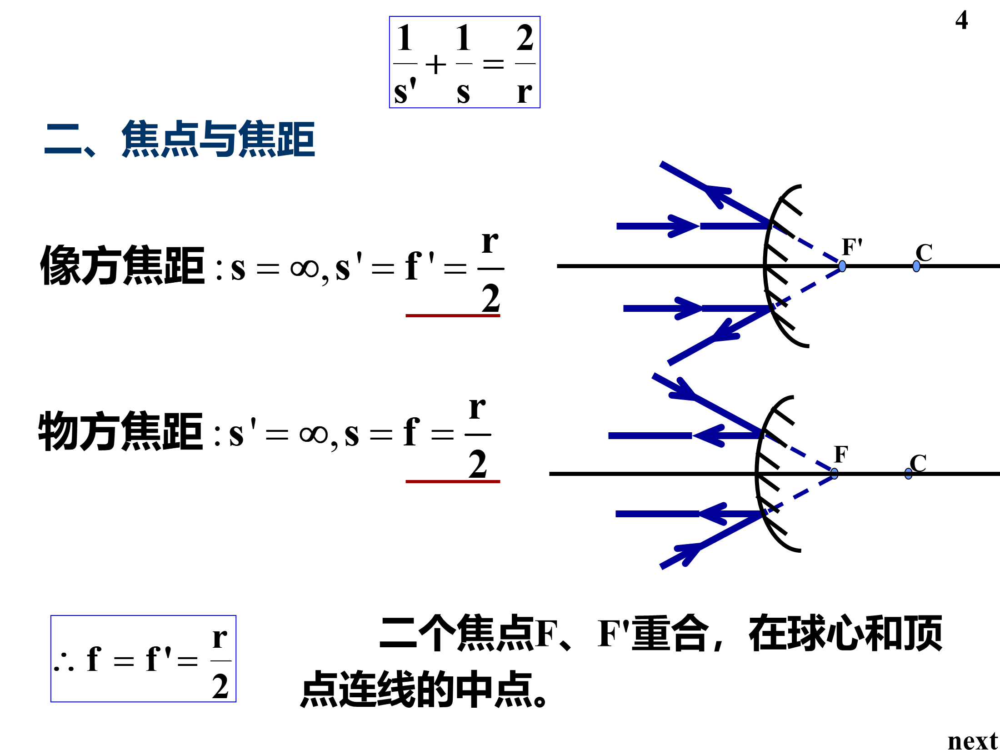
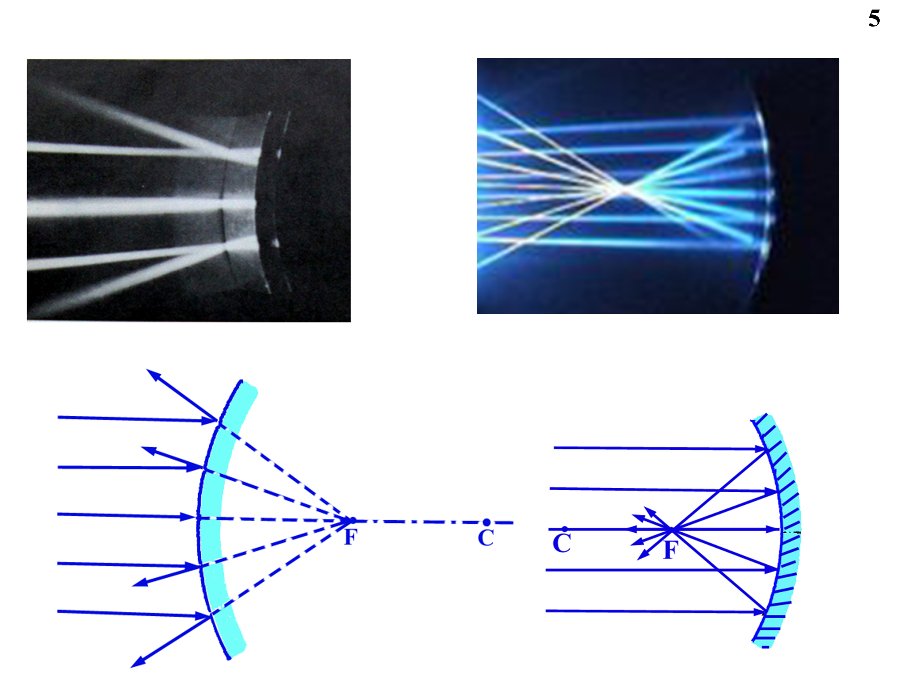
4. 高斯公式、牛顿公式与横向放大率
利用 \(f=f'=r/2\)，物像公式可写成高斯形式：
若从焦点量距离，定义 \(x=s-f\)、\(x'=s'-f'\)，则牛顿公式为
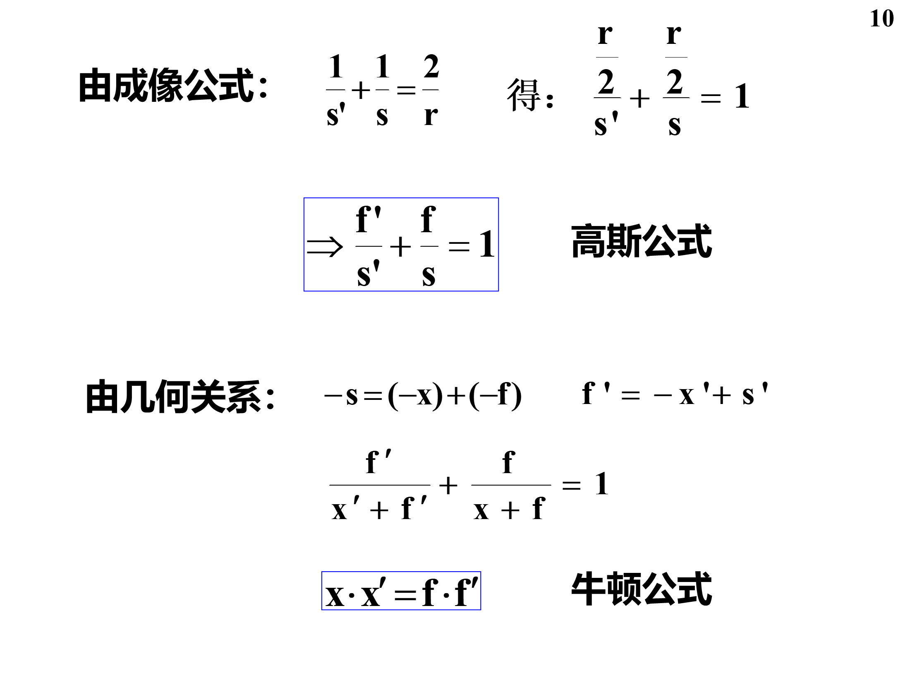
上一课球面折射的横向放大率是 \(\beta=ns'/(n's)\)。代入 \(n'=-n\)，得到球面镜的横向放大率：
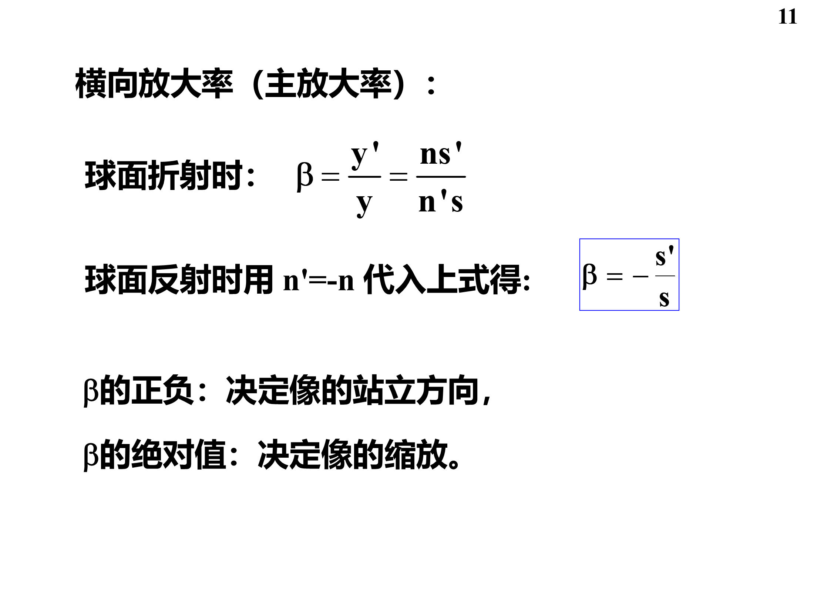
公式之间可以互相检查。若算得 \(s\) 与 \(s'\) 同号，则 \(\beta<0\)，像倒立；若二者异号，则 \(\beta>0\)，像正立。
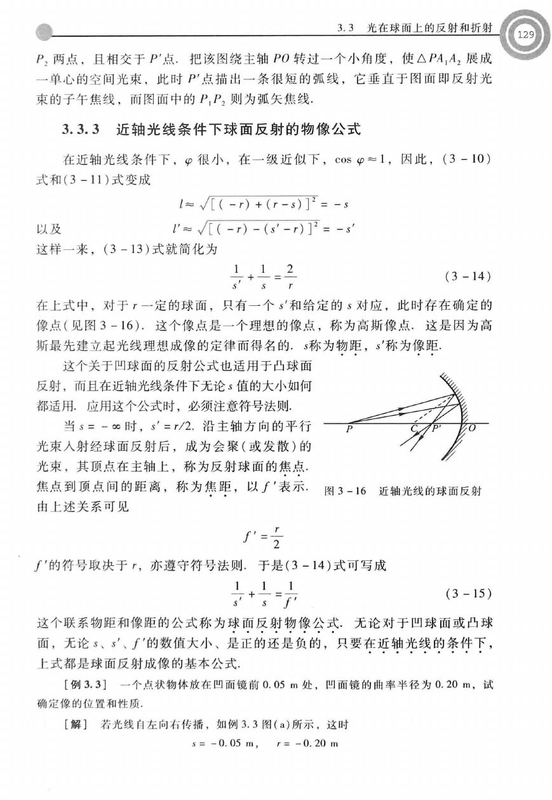
5. 凹面镜五种位置，不靠图表死背
对镜前实物，凹面镜有 \(s<0\)、\(f'<0\)。把物点从远处逐渐移向镜面，直接观察
的符号和绝对值即可得到全部情形：
| 物的位置 | 像的位置与性质 | 放大率 |
|---|---|---|
| \(|s|>|r|\)，球心外 | 镜前 \(F\) 与 \(C\) 之间的实像，倒立 | \(|\beta|<1\) |
| \(|s|=|r|\)，位于球心 | 像也在球心，实像，倒立 | \(|\beta|=1\) |
| \(|f'|<|s|<|r|\) | 镜前球心外的实像，倒立 | \(|\beta|>1\) |
| \(|s|=|f'|\) | 反射光平行，像在无穷远 | 不取有限值 |
| \(|s|<|f'|\)，焦点内 | 镜后虚像，正立 | \(|\beta|>1\) |
凸面镜对镜前实物有 \(s<0\)、\(f'>0\)。代入公式必得 \(s'>0\) 且 \(0<\beta<1\)，所以总是形成镜后的正立、缩小虚像。这是公式的结果，不必另背。
5.1 作图时仍用三条特殊光线
- 平行于主轴的入射光，反射后通过焦点 \(F\)，或其反向延长线通过虚焦点；
- 通过焦点 \(F\) 的入射光，反射后平行于主轴；
- 通过球心 \(C\) 的光沿法线入射，沿原路返回。
任选两条定像，第三条检查。虚像作图必须延长反射光，不能把延长线误画成真实传播方向。
6. 近轴公式为何不能直接管大口径聚光
球面镜严格说会破坏单心光束：离轴高度不同的光线不在同一点会聚，近轴公式只保留最低阶结果。镜面口径相对曲率半径越大，球差越明显。太阳炉等装置若追求高能量密度，除了收集面积，还要考虑太阳的有限角直径、反射率、球差和焦斑大小。
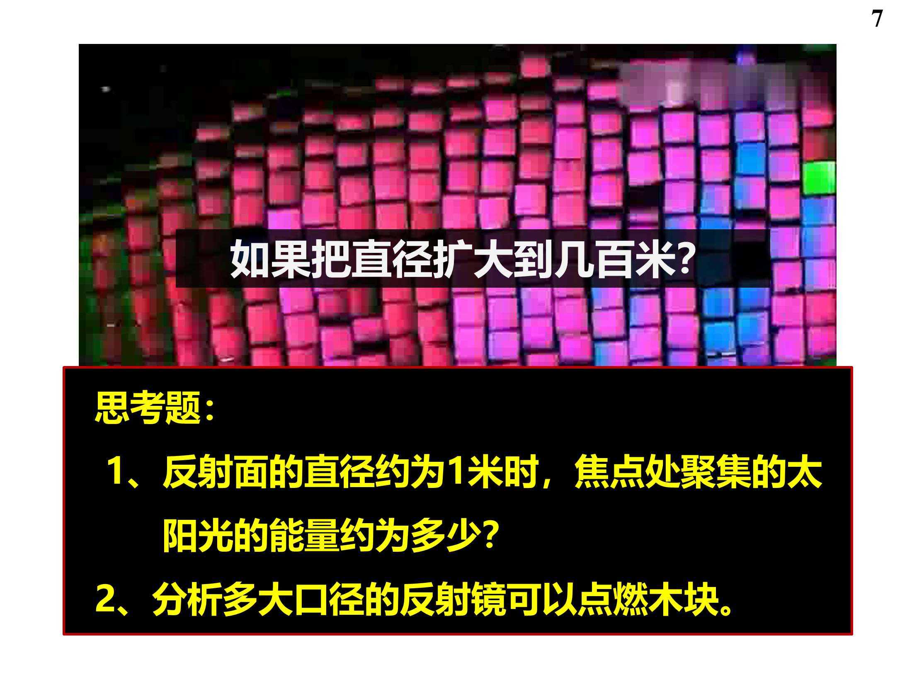
6.1 衍射分辨本领：大口径为何能分开更近的两点
为什么几何成像后还会有“分不开”？ 真实光是波，通过有限孔径后会衍射；一个点源的像也会铺成有宽度的亮斑。两点方向很近时，两斑重叠。瑞利判据约定怎样的重叠程度算刚好分开，因此本题输入应是波长与口径，输出是最小方向角差。
计算前把波长与口径化为同一长度单位：\(550\,\mathrm{nm}=5.50\times10^{-7}\,\mathrm m\)。计算后的弧度换角秒用\(1\,\mathrm{rad}=(180/\pi)\times3600\)角秒。下面的1.22来自圆孔衍射亮斑第一暗环的位置，不能直接移用到任意形状孔径。
依据：3-5 PPT第9页。均匀照明的理想圆形孔径，在单色光、远场或焦平面的衍射条件下，点像有中央亮斑和圆环。瑞利判据取一个点的中央极大落在另一个点的第一暗环，得到最小角间隔
\(\lambda\)为传播介质中的波长，\(D\)为有效圆孔直径；两点须满足通常的非相干点源成像条件。例：\(\lambda=550\) nm、\(D=0.10\) m，\(\theta_R\approx6.71\times10^{-6}\) rad，约1.38角秒。此判据讨论分辨两个方向，不是几何焦距或收光功率。射电干涉阵列的最高角分辨尺度约由\(\lambda/B\)决定，\(B\)为最大有效基线；稀疏阵列不能直接当成同直径的填满圆孔套1.22，也不拥有同等收光面积。
6.2 虹与霓：反射次数、偏向极值与色序
依据：3-5 PPT第22—33页，尤其第32页。
出处：3-5 PPT第32页。图中文字：Primary Rainbow、Primary为主虹；Secondary Rainbow、Secondary为副虹（霓）；Raindrops为雨滴；Measured from anti-solar point意为角度从反太阳点方向量起。42°和51°是角半径的近似值。
近似球形水滴受太阳平行光照射，入射、出射各折射一次，内部反射\(p\)次。主虹\(p=1\)，副虹（霓）\(p=2\)；内部反射通常是部分反射，不是全反射。以光线在空气中的入射角\(i\)、滴内折射角\(r\)表示，\(\sin i=n\sin r\)，\(n\)为水相对空气折射率。沿光路累计的偏向为
每次折射贡献\(i-r\)，每次内部反射贡献\(\pi-2r\)，相加即得。由于水滴截面各入射位置都有光，方向分布在\(D_p\)驻值附近集中：
这里固定的是入射光方向，变化的是水滴上的入射位置；与费马原理固定端点、改变候选路径的变分不是同一个极值问题。几何光线在驻值附近聚集解释亮带位置，实际亮度不能靠无限大的几何密度计算，还受波动与滴大小限制。
数值为什么按这个顺序算？ 题目要找亮虹角半径，先用反射次数\(p\)选主虹或副虹，再由驻值条件求\(i\)；用\(r=\arcsin(\sin i/n)\)求滴内角，代入\(D_p\)，最后把累计偏向换成观察者从反太阳方向量的角半径。导数中每个角都按弧度处理；显示最后数值时可换成度。
取\(n=4/3\)，主虹\(i\approx59.39^\circ,r\approx40.20^\circ\)，\(D_1\approx137.97^\circ\)，相对反太阳点的角半径为\(\rho_1=180^\circ-D_1\approx42.03^\circ\)。副虹\(i\approx71.83^\circ,r\approx45.45^\circ\)，累计\(D_2\approx230.98^\circ\)，角半径\(\rho_2=D_2-180^\circ\approx50.98^\circ\)。PPT标出的42°、51°均从 反太阳方向 量，不是从地平线或太阳本身量。
正常色散下紫光\(n\)较大：主虹角半径变小，故外红内紫；副虹角半径变大，故内红外紫。副虹经历额外一次部分反射，通常较弱。主虹以内与副虹以外的对应光线较丰富，二者之间相对暗的区域称亚历山大暗带。
相同角半径的水滴围绕反太阳轴构成圆锥，眼睛看到其截面为圆；地面遮挡常只留下圆弧，高处可见近完整圆环。不同观察者、同一观察者所见不同颜色通常对应不同水滴，不能把彩虹当作固定在某个空间位置的物体。PPT中的细密副条纹还涉及干涉，不能用“多反射一次”解释全部条纹。
参考判断
从反太阳方向量角半径；通常是部分反射。若把42°当成入射角或把虹霓解释为全反射，会得到错误光路。
7. 平面镜是 \(r\to\infty\) 的极限
令球面曲率半径趋于无穷：
再代入放大率公式：
因此平面镜像与物关于镜面对称，大小相等、正立。对镜前实物 \(s<0\)，有 \(s'>0\)，像在镜后，是虚像。
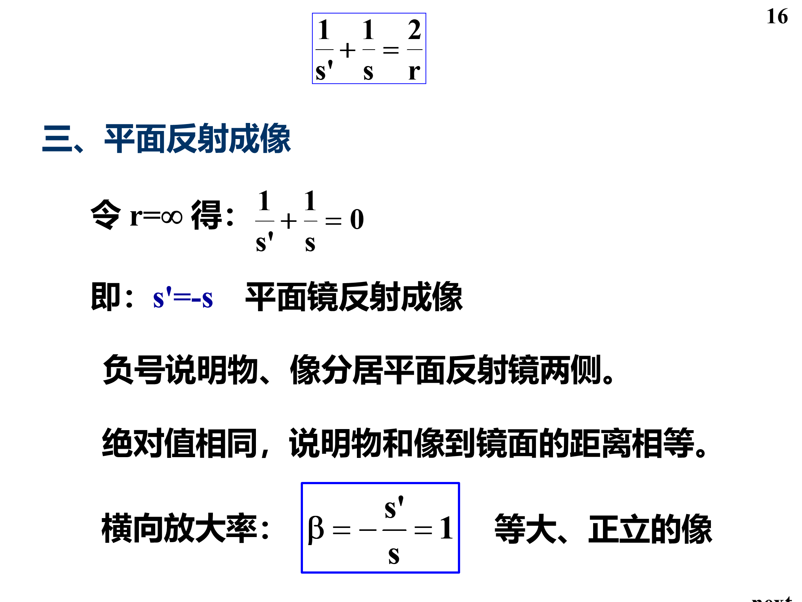
7.1 镜像法：把折线路径拉直
平面镜反射题可以把物点关于镜面对称到镜后得到像点 \(P'\)。从观察点向 \(P'\) 画直线，它与镜面的交点就是反射点。这样，原来的“物点 → 镜面 → 观察点”折线路径，被化成一条直线。
镜像法不仅用于画像，也适合求最短光程、反射点位置和可见范围。要注意：镜后的像点只是构造点，真实光仍停留在镜前。
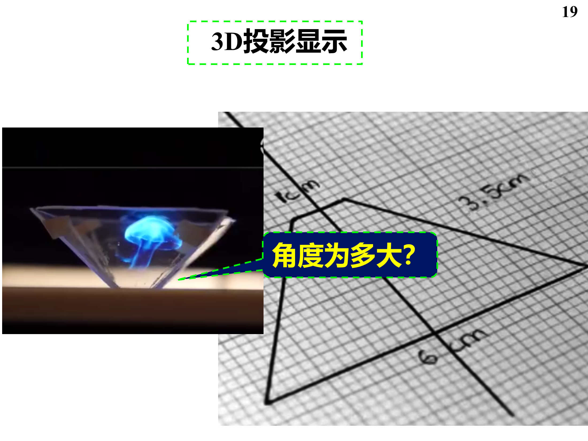
课件第12—15页的双曲面镜装置则利用连续两次反射：物在一面镜的焦区附近，使光束反射后近似平行；另一面镜再把它会聚到开口附近，形成可从外部观察的实像。像的大小、倒正由两次成像共同决定。它与第18—20页倾斜玻璃板形成的虚像不同；“悬浮显示”不保证同一种成像机制，也不能仅凭商品名称就认定采用了记录、重建光波的全息术。
8. 已布置习题 3.6、3.7
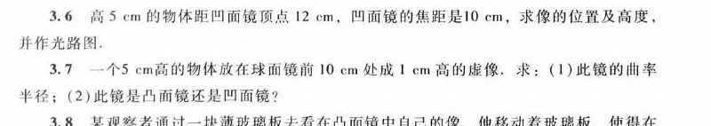
习题 3.6：只看入手提示
光从物体射向凹面镜，先按统一坐标写 \(s\) 与 \(f'\) 的符号，再由高斯公式求 \(s'\)，最后用 \(\beta=-s'/s\) 求像高。作图时用平行光、过焦点光、过球心光中的两条；计算和作图必须给出相同像区及正倒关系。
习题 3.7：先检查信息是否充分
题目只给物高和像高，先得到 \(|\beta|=1/5\)，但没有说明像正立还是倒立。分别令 \(\beta=+1/5\) 与 \(\beta=-1/5\)，由 \(\beta=-s'/s\) 得两种可能的 \(s'\)，再反求 \(r\)。检查是否出现一组凸面镜解和一组凹面镜解；若是，就应明确说明缺少哪项观测才能唯一确定。
8.1 已布置习题 3.8
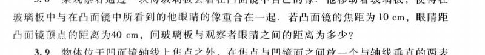
只看入手提示
先以凸面镜顶点为原点，求眼睛经凸面镜形成的虚像坐标。玻璃板的反射像则由平面镜对称关系得到：像到玻璃板的距离等于眼睛到玻璃板的距离。把两幅像写在同一条坐标轴上，再令坐标相等。不要把“玻璃板在眼睛与凸面镜之间”只当文字条件，它决定可接受的根。
8.2 已布置习题 3.9*
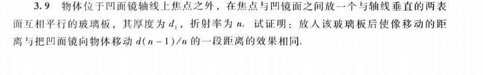
只看证明路线
这是双程问题。把“未放玻璃板”和“放入玻璃板”画成两套轴向坐标：入射光穿过玻璃板一次，反射光返回时还要再穿过一次。每次平面折射都用上一课的 \(s'=(n'/n)s\) 或平板表观位移关系，但第二程要重新按光行方向判断。最后把玻璃板前后位置相减，再与球面镜物像公式的物距变化比较。只套一次单程位移会漏掉回程。
9. 球面镜题的固定流程
- 画入射箭头：明确光先向镜面走，反射后反向。
- 以镜面顶点为原点：按位置写 \(s\)、\(r\)、\(f'=r/2\) 的符号。
- 列球面反射公式：\(1/s'+1/s=2/r=1/f'\)。
- 求放大率：\(\beta=-s'/s\)，同时判断正倒和放缩。
- 回图解释：反射光是否真的经过像点？由此确认实像或虚像。
- 若有玻璃板或第二镜面：按实际传播顺序分段，换原点、重判符号。
10. 第 04 课自测
- 形式上为什么可令 \(n'=-n\) 从折射公式得到反射公式？
答案
它使折射定律变为 \(\sin i=-\sin i'\)，在近轴及统一角度约定下给出 \(i'=-i\)，用代数方式表示出射光反向传播；并非真实负折射率介质。 - 写出本讲义符号下的球面反射公式。
答案
\(1/s'+1/s=2/r=1/f'\)，其中 \(f'=r/2\)。 - 光从左向右入射、镜面朝左时，凹面镜的 \(r\) 为什么为负？
答案
凹面镜球心位于顶点左侧，而坐标向右为正，所以球心坐标即 \(r<0\)。 - 凹面镜形成的实像位于镜前左侧，为什么 \(s'<0\) 却仍是实像？
答案
负号只表示坐标在原点左侧；反射光确实在那里会聚，所以是实像。 - 球面镜的两个焦点为何重合？
答案
光在同一介质中反射并沿反方向传播；由光路可逆性，平行光的会聚点与能产生平行反射光的物点是同一物理点。 - 凸面镜对镜前实物为何总成正立缩小虚像？
答案
对实物有 \(s<0\)，凸面镜有 \(f'>0\)；公式给出 \(s'>0\)，而 \(\beta=-s'/s\) 满足 \(0<\beta<1\)。 - 平面镜公式怎样由球面镜公式得到？
答案
令 \(r\to\infty\)，得到 \(1/s'+1/s=0\)，即 \(s'=-s\)，再有 \(\beta=1\)。 - 镜像法为什么能把反射折线路径变成直线？
答案
把物点关于平面镜对称到镜后后，入射段与反射段的等角关系正好等价于观察点到镜像点的一条直线。 - 只知道物高、像高和物距，为什么可能不能唯一判断球面镜种类？
答案
若没有正倒或实虚信息，只知道 \(|\beta|\)，\(\beta\) 可正可负，对应的 \(s'\) 与 \(r\) 可能给出凸、凹两组解。 - 镜前玻璃板题为什么要特别警惕“双程”？
答案
光到镜面前穿过玻璃板一次，反射后返回又穿过一次；两程传播方向相反，必须分别判断，不能只套一次平板位移。
第 05 课：薄透镜
薄透镜不是一个新的成像元件，而是两个折射球面靠得足够近时的近似。先逐面写两次球面折射，再利用“两个顶点几乎重合”消去中间像，就能得到薄透镜公式。这样焦距、放大率、作图和正负透镜的规律都能从前面的体系里推出。
1. “薄”说的是轴向厚度可以忽略
透镜由两个折射面围成；常见表面是球面，也可以有一面为平面。若两顶点间厚度 \(d\) 远小于曲率半径以及题目中的物像距离，可把两个顶点近似看成同一个光心平面，这才是薄透镜。
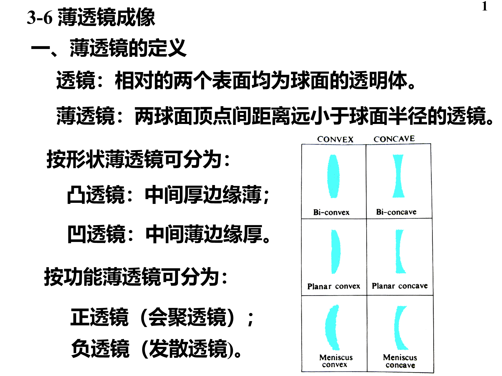
按形状
凸透镜中间厚、边缘薄；凹透镜中间薄、边缘厚。这只描述几何外形。
按功能
正透镜有 \(\Phi\gt0\)，使近轴光束更会聚；负透镜有 \(\Phi\lt0\)，使近轴光束更发散。
在空气中，普通玻璃的折射率大于空气，因此凸透镜通常是正透镜、凹透镜通常是负透镜。但若把透镜浸入折射率更高的液体，功能可能反转。所以考试中若给了外界介质，不能只看外形判会聚或发散。
2. 两次球面折射怎样合成一个公式
物点 \(P\) 经第一面成中间像 \(P_1\)，这个中间像再作为第二面的物，最终成像于 \(P'\)。无论中间像是否真的落在玻璃内部，都按逐面成像处理。
设透镜材料折射率为 \(n\)，左、右外界介质分别为 \(n_1,n_2\)，两面曲率半径为 \(r_1,r_2\)。第一面和第二面分别满足
若透镜足够薄，第二面顶点与第一面顶点近似重合，于是 \(s_2\approx s_1'\)，两式中关于中间像的项相消：
这条式子可以继续读成“出射会聚度 − 入射会聚度 = 透镜总光焦度”。若厚度不可忽略，\(s_2=s_1'-d\) 不能近似成 \(s_1'\)，就要回到逐面成像或使用主平面。
3. 焦点、焦距与光焦度
令物在无穷远得到像方焦距；令像在无穷远得到物方焦距：
所以一般情况下
物方、像方介质不同，两焦距不必等长；但 \(f\) 与 \(f'\) 异号，表示两个焦点在透镜两侧。
由 \(\Phi\) 的符号定义功能：
3.1 空气中的制镜者公式
空气中 \(n_1=n_2=1\)，一般公式化为
这就是薄透镜物像公式与制镜者公式。对光从左向右通过的双凸玻璃透镜，通常 \(r_1\gt0\)、\(r_2\lt0\)，所以 \(1/f'\gt0\)。双凹透镜的曲率符号相反，通常 \(1/f'\lt0\)。
若透镜浸在同一种外界介质 \(n_0\) 中，则应使用相对折射率：
4. 高斯公式、牛顿公式与横向放大率
一般介质中的高斯公式和牛顿公式仍是
横向放大率为
空气中进一步简化为
5. 正透镜成像：用 \(s'\) 和 \(\beta\) 统一判断
空气中的正透镜有 \(f'\gt0\)、\(f=-f'\)。对镜前实物 \(s<0\)，令正长度物距 \(u=-s\)，则熟悉的形式是
| 物距 | 像的位置和性质 | 放大率 |
|---|---|---|
| \(u\gt2f'\) | 像在 \(f'\) 与 \(2f'\) 之间，实像、倒立 | \(|\beta|\lt1\) |
| \(u=2f'\) | 像在 \(2f'\)，实像、倒立、等大 | \(\beta=-1\) |
| \(f'\lt u\lt2f'\) | 像在 \(2f'\) 外，实像、倒立 | \(|\beta|\gt1\) |
| \(u=f'\) | 出射光平行，像在无穷远 | 无有限值 |
| \(0\lt u\lt f'\) | 物侧虚像、正立、放大 | \(\beta\gt1\) |
5.1 “虚物”不等于不存在
若入射到透镜的光本来就在向透镜右侧某点会聚，该点就是透镜的虚物，故 \(s\gt0\)。正透镜会进一步增强会聚，通常形成透镜右侧的实像，而且
像与虚物同为正高度方向，且课件所示常见情形为正立、缩小实像。
6. 负透镜：实物与虚物必须分开讨论
空气中的负透镜有 \(f'\lt0\)。对实物 \(s\lt0\)，
所以单个薄负透镜对实物只能形成物侧虚像；又因 \(\beta=s'/s\) 满足 \(0\lt\beta\lt1\)，像正立、缩小。
但若物是虚物，即 \(s\gt0\)，负透镜并非绝不可能成实像。令 \(F=|f'|\)，则
当 \(0\lt s\lt F\) 时右边为正，得到 \(s'\gt0\) 的实像；当 \(s=F\) 时出射光平行；当 \(s\gt F\) 时仍为虚像。口诀“负透镜只能成虚像”只对实物入射成立。
7. 作图法：三条特殊光线和两个焦平面
外界介质相同的薄透镜有三条常用特殊光线：
- 平行于光轴入射，出射光通过像方焦点 \(F'\)；负透镜则由反向延长线通过 \(F'\)。
- 通过物方焦点 \(F\) 入射，出射光平行于光轴。
- 通过光心 \(O\) 的近轴光线方向不变。
焦点只管与主轴平行的光；焦平面则管理任意方向的平行光束。与主轴成某一小角度的平行光，会聚在像方焦平面上的某一点；物方焦平面上一点发出的光，经透镜后成为某一方向的平行光。
7.1 任意一条光线怎样作折射后的方向
对一条任意入射光线 \(AB\)，先过光心 \(O\) 作一条与 \(AB\) 平行的辅助线。辅助线与像方焦平面的交点 \(Q\)，就是这一方向的平行光束共同对应的焦面点；原光线在透镜上的入射点与 \(Q\) 相连，就是出射方向。
6.1 光心性质的条件与两种焦面作图
依据：3-6 PPT第13—16页；教材书页137、140—141。在薄透镜近轴模型中，两顶点重合为轴上参考点\(O\)。两侧介质相同时，过\(O\)的光线出射方向不变，此时\(O\)为光心。它不是任意厚透镜的几何中心；两侧介质不同时，轴上参考点仍可用来量距离，但不具有一般的“不偏折”性质。
斜率为什么能代表方向？ 设\(z\)沿主轴向右、\(y\)向上，光线前进一小段\(\Delta z\)时高度改变\(\Delta y\)，比值\(q=\Delta y/\Delta z\)就是斜率；直线写作\(y=h+qz\)。近轴下它近似等于从向右轴逆时针量的角（弧度），因此与本讲义顺时针有向角\(u\)的符号相反。\(q'\)是出射斜率，\(h\)是透镜处光线高度，\(\Phi\)为透镜光焦度，\(n_1,n_2\)分别为两侧折射率。方向问题用\(q\)比只代物像距离更直接。
用普通几何斜率\(q=\mathrm dy/\mathrm dz\)（区别于本讲义顺时针为正的有向角\(u\)）及透镜面高度\(h\)写一阶折射关系：
过\(O\)时\(h=0\)，故\(q'=(n_1/n_2)q\)；只有\(n_1=n_2\)或轴向\(q=0\)才保持方向。例：\(n_1=1,n_2=1.5\)，入射斜率0.03，出射0.02，并非不偏折。这与第07课节点保持方向、主点保持单位横向放大率的区别相一致。
在两侧同介质的薄透镜中，\(q'=q-h/f'\)。同一方向平行入射时，传播到像方焦面\(z=f'\)的高度为\(y_F=h+f'q'=f'q\)，与入射高度无关，说明整束同向光对应同一焦面点。焦面点可以是虚的，负透镜需用出射线反向延长定位。
因此任意入射线可用两种方法：
- 像方焦面法 ：过\(O\)作平行于给定入射线的辅助线，与像方焦面交于\(C'\)；连接实际入射点\(B\)与\(C'\)确定出射线。
- 物方焦面法 ：把给定入射线延长至物方焦面，得\(C\)；连接\(C,O\)，过实际入射点\(B\)作与\(CO\)平行的出射线。因为\(C\)是物方焦面点，它发出的所有近轴光出射后同向。
交点在虚延长线上时仍按实际传播方向加箭头。透镜两侧介质不同、主点分离时，不能继续用这套单一光心画法，应改用第08课的主面等高与节点法。
6.2 课件例题：移动物体反求焦距
读题先把语言变成有符号的量：“倒立、一半高”给\(\beta_1=-1/2\)，“等大实像”在此实物会聚情形给\(\beta_2=-1\)；“向透镜移近10 cm”给负物距增加10 cm。两个状态共用同一个\(f'\)。先由放大率消去每一状态的像距，就能只用物距与焦距解联立关系。
依据：3-6 PPT第21页。空气薄凸透镜对实物先成倒立、像高为物高一半的实像，物体向透镜移近10 cm后成等大实像。第一状态\(\beta_1=-1/2\)，故\(s_1'=-s_1/2\)；代入\(1/s_1'-1/s_1=1/f'\)得\(s_1=-3f'\)。第二状态\(\beta_2=-1\)给\(s_2=-2f'\)。又\(s_2=s_1+10\) cm，所以\(f'=10\) cm，物距依次为\(-30,-20\) cm，像距为\(15,20\) cm。检查移近后像移远且放大，符号与图景相符。
6.3 课件例题：平凸透镜镀银后不是原透镜焦距的一半
本题给了两种装置的焦距，要求两个未知量\(n,R\)；需要各建立一个关系。未镀银时使用两次透射，镀银后改为“平面折射进入 → 曲面反射折返 → 平面折射出去”。先在纸上按这三次实际相遇顺序画箭头，特别标出最后一次出射的正向已向左，再列式。
依据：3-6 PPT第22—23页。平行光从平面一侧入射薄平凸玻璃透镜，未镀银时在后方48 cm聚焦；凸面镀反射膜后，在前方8 cm聚焦，求\(n,R\)。\(R>0\)表示半径大小，入射向右时\(r_1=\infty,r_2=-R\)。
未镀银用制镜者公式：\(f'=R/(n-1)=48\) cm。镀银后有三次作用：平面入射折射仍为平行光；凸曲面从玻璃内部看是凹面镜，反射后在其前方\(R/2\)会聚；返程再经玻璃到空气的平面折射。
返程改用向左为正，薄透镜忽略两顶点间厚度。原会聚点在返程出射侧，是平面折射的虚物\(s=R/2>0\)，所以\(s'=(1/n)s=R/(2n)=8\) cm。联立\(R/(n-1)=48\)、\(R/(2n)=8\)，得\(n=1.5,R=24\) cm。全程若固定原坐标，则最后像点坐标为\(-8\) cm，两种坐标结果一致。
关键是按“折射—反射—折射”处理；不能把镀银后的装置仍当成同一块透射薄透镜，或忽略返程平面折射。厚度不可忽略时，返回平面前还必须平移距离原点。
参考判断
h=0仅使光焦度项消失，仍有n₂q′=n₁q；两侧折射率不同且q≠0时，q′不等于q。厚透镜还需区分主点与节点。
8. 已布置习题 3.15
只看入手提示
对每块透镜先画两球心，确定 \(r_1,r_2\) 的符号。空气中用 \((n-1)(1/r_1-1/r_2)\)；水中必须改用 \((n/n_0-1)(1/r_1-1/r_2)\)。先求焦距，再代入物像公式。作图与计算都要说明像的实虚、正倒和放缩；水中折射率反差变小，光焦度的绝对值也会变小。
8.1 已布置习题 3.17、3.18
习题 3.17：只看入手提示
这是“空气做成的双凹透镜”放在水中。透镜材料折射率小于外界，\(n/n_0-1\lt0\)；双凹形状对应的曲率组合也为负，两者相乘后光焦度反而为正。先用这一符号判断功能，再算焦距。
习题 3.18：只看入手提示
斜平行光在像方焦平面成像，负镜用反向延长找虚像。第二问给的是几何左焦平面：正镜出射平行；负镜左侧为像方焦面，\(s=-10\) cm时成\(s'=-5\) cm虚像，不能同判平行。
8.2 已布置习题 3.19
只看作图入口
外界介质相同，过光心的光线方向不变，所以先连接 \(S\) 与 \(S'\)，它与主轴的交点就是光心 \(O\)；过 \(O\) 作垂直主轴的透镜平面。再从 \(S\) 作一条平行主轴的光线到透镜，连接其入射点与 \(S'\)，该出射线与主轴的交点给出 \(F'\)。反向使用光路可逆性求 \(F\)。虚线和实线必须按真实传播方向区分。
8.3 已布置习题 3.25
只看作图入口
先过光心 \(O\) 作与已知入射线 \(AB\) 平行的辅助线，它与已知出射线 \(BC\) 的交点确定像方焦平面上的一个点；过该点作垂直主轴的像方焦平面。再过 \(O\) 作与待求入射线 \(DE\) 平行的辅助线，它与该焦平面的交点就是 \(DE\) 这组方向对应的焦面点。把此点与 \(E\) 相连，即得出射方向。
9. 思考题 1：正透镜实物成实像时，物像最小间距
用正长度 \(u=-s\gt f'\)、\(v=s'\gt0\)，空气中薄正透镜满足
物像间距 \(L=u+v\)。由 \((u+v)^2\ge4uv\)，
等号要求 \(u=v=2f'\)，即物和像分别位于两侧的二倍焦距处。令 \(q=u/f'\gt1\)，曲线可写成
9.1 思考题 2：薄负透镜的实物能成实像吗
对单个薄负透镜、同种外界介质和实物入射，\(s<0\)、\(f'<0\)，所以
像必在物侧，是虚像。因此在题目限定下不能成实像。但如果入射光已经会聚，即透镜面对的是虚物 \(s\gt0\)，负透镜可以在 \(0\lt s\lt|f'|\) 时形成实像。考试答题时应把限定条件一起写出。
10. 薄透镜题的固定流程
- 先判是否真能当薄透镜：厚度是否可忽略；否则逐面成像。
- 标光行方向和两面球心：确定 \(n_1,n,n_2,r_1,r_2\)。
- 先求光焦度或焦距：外界不是空气时使用相对折射率。
- 写带符号的物距：发散入射为实物，正在会聚的入射为虚物。
- 求 \(s'\) 和 \(\beta\)：分别解释像的位置、实虚、正倒和放缩。
- 用特殊光线或焦平面复核：数值与图示至少要在像区和方向上相符。
11. 第 05 课自测
- 薄透镜近似在合并两面公式时用了哪一步？
答案
忽略两顶点间厚度，令第二面的物距 \(s_2\approx s_1'\)，从而使中间像项在两式相加时消去。 - 写出一般介质中的薄透镜公式。
答案
\(n_2/s'-n_1/s=(n-n_1)/r_1+(n_2-n)/r_2=\Phi\)。 - 为何“凸透镜一定会聚”不是普遍命题？
答案
功能由折射率差和曲率共同决定；当透镜材料折射率低于外界介质时，光焦度符号可能反转。 - 空气薄透镜的物像公式和放大率是什么？
答案
\(1/s'-1/s=1/f'\)，\(\beta=s'/s\)。 - 为什么球面镜与空气薄透镜的放大率只差一个负号？
答案
反射可形式化为 \(n'=-n\)，出射光反向传播；折射透镜两侧同为空气，故分别得到 \(-s'/s\) 与 \(s'/s\)。 - 正透镜实物位于焦内时成什么像？
答案
物侧正立、放大的虚像。 - 负透镜对实物为什么不能成实像？
答案
\(s<0,f'<0\) 使 \(1/s'=1/f'+1/s\lt0\)，所以 \(s'<0\)，像在物侧且为虚像。 - 负透镜在什么条件下可以成实像？
答案
入射光正在会聚，形成虚物 \(s\gt0\)，且 \(0\lt s\lt|f'|\) 时可得 \(s'\gt0\) 的实像。 - 斜平行光为什么不在轴上焦点会聚？
答案
焦点只对应轴向平行光；不同方向的平行光分别会聚于像方焦平面上的不同点。 - 薄正透镜实物成实像时，物像最小间距和对应位置是什么？
答案
\(L_{\min}=4f'\)，等号在 \(u=v=2f'\) 时取得。
第 06 课：共轴球面组成像——把厚透镜压缩成一个“等效薄透镜”
上一课把两个几乎重合的折射面合成薄透镜；这一课取消“厚度可以忽略”的条件。真正的新问题不是公式更长，而是：物距和像距不再从透镜表面量，而要从系统自己的主平面量。
1. 为什么需要“理想光具组”
共轴球面组由多个球心位于同一直线上的折射面或反射面组成。照相机镜头看似是一只镜头，内部往往包含许多透镜和空气间隔。逐面计算当然可以完成成像，但每增加一个面，就多一个中间像和一次坐标换算。
【课件】理想光具组保持近轴光束的单心性，并保持物与像的几何相似；物点、像点以及物方与像方的线、面互相共轭。这里的“理想”不是说元件没有厚度，而是说只研究一阶近轴成像，暂时忽略像差。
| 方法 | 保留什么 | 什么时候用 |
|---|---|---|
| 逐次成像法 | 每个界面的物距、像距和中间像 | 已知每个面的参数，或题目要求内部像、内部光路 |
| 理想光具组法 | 主点、焦点、焦距等基点 | 只关心系统外部物像关系，或题目已给主平面 |
2. 厚透镜：最小但完整的复合系统
设空气中的厚透镜折射率为 \(n\)，两球面顶点为 \(O_1,O_2\)，轴上厚度为 \(\delta\)，曲率半径为 \(r_1,r_2\)。物点为 \(P\)，最终像点为 \(P'\)。先暂时把从 \(O_1\) 量起的物距记作 \(\bar s\)，从 \(O_2\) 量起的最终像距记作 \(\bar s'\)。
第一面为空气到玻璃的球面折射：
第二面为玻璃到空气的球面折射：
其中 \(f_1'\) 是第一球面的像方焦距，\(f_2\) 是第二球面的物方焦距：
这一步最值得记住的不是结果，而是中间像的角色转换：
3. 消去中间像：厚透镜的等效焦距
联立两面公式并消去 \(s_1'\)，可以把整个厚透镜写成一个外部物像公式：
三个系统参数为
直接用曲率半径和厚度表示，空气中厚透镜的制镜者公式为
和薄透镜比较：当 \(\delta\to0\) 时，厚度项消失，公式退化为 \(1/f'=(n-1)(1/r_1-1/r_2)\)。因此薄透镜不是另一套理论，而是厚透镜在厚度趋近于零时的极限。
3.1 等效焦距与主点位移为何同时出现
对照本课上方厚透镜图，第一顶点\(O_1\)、第二顶点\(O_2\)相隔\(\delta\)。\(\bar s\)、\(\bar s'\)分别从这两个顶点量，\(s_1'\)是第一次像到\(O_1\)的坐标；因此它成为第二面的物时，物距为\(s_1'-\delta\)。下面引入\(A,B\)只是把两个面的光焦度写短， 不是棱镜顶角或图中的点名 。\(p=O_1H\)、\(p'=O_2H'\)是带符号的主点位移；\(\bar s-p\)才是从\(H\)量的物距。
若题目给两面曲率、折射率与厚度，先求\(A,B\)，再求系统\(\Phi,p,p'\)；若题目只求一个物点的像，也可保留中间像逐面算。消元的目的，是让任意物点都能复用同一组系统参数，而不是增添一套新的物理规律。
依据：3-7 PPT第6—8页；教材附录3.4书页158—160。记\(A=(n-1)/r_1\)、\(B=(1-n)/r_2\)为两面的光焦度，厚度为\(\delta\)。第一面给\(n/s_1'=A+1/\bar s\)；第二面给\(1/\bar s'=B+n/(s_1'-\delta)\)。代入并整理：
这不是简单的两面光焦度相加，原因正是中间传播使第二面光束高度和会聚程度发生变化。定义
原式便能化为\(1/(\bar s'-p')-1/(\bar s-p)=\Phi\)。代入\(A,B\)即恢复本课的厚透镜制镜者式与\(p,p'\)式。\(\delta\to0\)时，传播项消失，\(p,p'\to0\)，才回到薄透镜两面光焦度相加。单位检查：\(A,B,\Phi\)为长度的倒数，\(p,p',f'\)为长度。
若\(\Phi=0\)，系统为无焦系统，有限焦距和上述有限主点参数的写法退化；不能把除以零得到的量继续当作普通主面距离。逐面追迹仍可使用。两薄透镜在空气中相隔\(d\)的公式\(1/f'=1/f_1'+1/f_2'-d/(f_1'f_2')\)同样含传播项；只有间隔\(d=0\)才可直接相加光焦度。
4. 主点和主平面：新的距离原点
定义
于是厚透镜的物像公式恢复为熟悉的形式：
新的两个原点分别叫物方主点 \(H\) 和像方主点 \(H'\)；过它们并垂直于主轴的平面叫物方主平面和像方主平面。
| 量 | 从哪里量 | 坐标意义 |
|---|---|---|
| \(\bar s\) | 从前表面顶点 \(O_1\) 量到物点 | 物点相对 \(O_1\) 的坐标 |
| \(p\) | 从 \(O_1\) 量到 \(H\) | \(H\) 相对 \(O_1\) 的坐标 |
| \(s=\bar s-p\) | 从 \(H\) 量到物点 | 代入等效高斯公式的物距 |
| \(\bar s'\) | 从后表面顶点 \(O_2\) 量到像点 | 像点相对 \(O_2\) 的坐标 |
| \(p'\) | 从 \(O_2\) 量到 \(H'\) | \(H'\) 相对 \(O_2\) 的坐标 |
| \(s'=\bar s'-p'\) | 从 \(H'\) 量到像点 | 代入等效高斯公式的像距 |
5. 为什么主平面是一对单位放大率共轭面
厚透镜的总横向放大率是两次球面折射放大率的乘积：
若物逐渐靠近物方主平面，\(s\to0\)，由物像公式有 \(s'\to0\)，同时
所以 \(H\) 所在的物方主平面与 \(H'\) 所在的像方主平面互相共轭，横向放大率为 1。作图时，一条光线在物方主平面上的高度，可以按相同高度转移到像方主平面，再按系统外部的出射方向继续画。
6. 焦点、焦面和等效焦距
像方焦点 \(F'\) 是轴向平行光通过系统后所成的像；物方焦点 \(F\) 是出射光平行于主轴时所对应的物点。过 \(F,F'\) 且垂直于主轴的平面分别是物方焦平面和像方焦平面。
当物在无穷远时，\(s=-\infty\)，故 \(s'=f'\)；当像在无穷远时，\(s'=+\infty\)，故 \(s=f\)。若系统两侧折射率相同，
定义牛顿坐标 \(x\) 为物点相对物方焦点的有向距离，\(x'\) 为像点相对像方焦点的有向距离，则理想系统仍满足
空气两侧 \(f=-f'\) 时，横向放大率可写成
7. 课件例题：先求系统，再求具体物像
双凸厚透镜满足 \(r_1=4\,\mathrm{cm}\)、\(r_2=-6\,\mathrm{cm}\)、\(\delta=2.0\,\mathrm{cm}\)、\(n=1.5\)。先求两个单球面的焦距：
代入等效参数：
物在左顶点前8 cm，用未舍入参数：\(f'=36/7\) cm、\(p=4/7\) cm、\(p'=-6/7\) cm。先把物距起点改到主点：
该像距从\(H'\)量；换回后顶点：
逐面检查：第一面\(1.5/s_1'+1/8=0.5/4\)，内部恰为平行光；第二面直接给\(1/s_2'=(1-1.5)/(-6)=1/12\)。所以像在后顶点右12 cm，倒立放大实像，\(\beta=-3/2\)。
8. 用主平面作图
当系统两侧介质相同、主点和焦点已知时，可把薄透镜的三条特殊光线改写为：
- 入射光平行主轴：在物方主平面取交点，等高移到像方主平面，出射线通过 \(F'\)。
- 入射线指向 \(F\)：等高移过主平面后，出射光平行主轴。
- 普通光线：先利用前两条确定像点，或利用焦平面确定出射方向。
薄透镜只是 \(H,H'\) 重合的特殊情况。厚透镜作图时不能把入射点和出射点画在同一竖线上，而应分别落在两个主平面上，并保持高度相同。
9. 教材习题放在知识链中的位置
9.1 对位练习 3.26：已知主平面，作另一对共轭点
只看作图入口
先由已知共轭点 \(S_1,S_1'\) 恢复系统对光线的映射。选一条从 \(S_1\) 出发的入射线，让它在物方主平面上取一点；把这一高度等高转移到像方主平面，再连接 \(S_1'\)，得到对应出射方向。随后从 \(S_2\) 发出与刚才入射线平行的辅助线；同方向入射光共享同一个像方焦面点，由此确定通过系统后的方向。两条出射线的交点就是 \(S_2'\)。重点是用主平面承担“等高转移”，而不是猜透镜内部光路。
9.2 已布置习题 3.28：两次成像与实验反演
只看方法入口，不展开作业答案
物与屏固定，相距 \(l\)。透镜有两个位置能在屏上形成清晰实像，对应物距、像距交换。若两透镜位置相距 \(d\)，可写成 \(u+v=l\)、\(|v-u|=d\)，再与 \(1/u+1/v=1/f'\) 联立。大小比来自两次放大率互为倒数；实验可行条件来自 \(l\ge4f'\)。做题时先画出“物—透镜位置 1—透镜位置 2—屏”的同一坐标轴，避免把 \(d\) 错当物距或像距。
它为什么放在这里：3.28 虽使用薄透镜公式，却训练“把不可直接测的焦距换成可测位置差”的系统观念。这正是从单元件公式走向光学系统和实验反演的桥梁。
10. 题型识别与固定流程
| 题目给法 | 首选方法 | 首要检查 |
|---|---|---|
| 给每个面的 \(r,n,\delta\) | 逐面成像，或先求 \(f',p,p'\) | 中间像到下一面的有向距离 |
| 给 \(H,H',F,F'\) | 直接用理想光具组作图或高斯公式 | \(s,s'\) 是否从主点量起 |
| 给表面到物、像的距离 | 先换成主点坐标，再列公式 | 结果最后是否换回题目指定参考面 |
| 问内部光路或中间像 | 逐面成像 | 不能用等效系统伪造内部路径 |
| 透镜与屏有两个清晰位置 | 用 \(u+v\)、\(|u-v|\) 和薄透镜公式 | 是否满足 \(l\ge4f'\) |
- 判系统：薄透镜、厚透镜，还是多个分离元件？
- 判资料：题目给的是表面参数，还是已经给了基点？
- 定参考点：在图上明确 \(O_1,O_2,H,H'\)，所有距离都写清起点。
- 选算法：要内部信息就逐面算；只要外部物像就用等效系统。
- 做坐标换算：表面距离先换成主点距离，求完后按题意换回。
- 解释结果：写出像相对哪个点、位于哪侧、实虚、正倒和放缩。
11. 易错点
| 错误 | 为什么错 | 修正 |
|---|---|---|
| 厚透镜仍从表面顶点量 \(s,s'\) | 等效高斯公式的原点已经改为 \(H,H'\) | 先写 \(s=\bar s-p\)、\(s'=\bar s'-p'\) |
| 把 \(p,p'\) 当正长度 | 它们是有向坐标 | 根据主点相对表面顶点的位置保留符号 |
| 把主平面当实体界面 | 主平面是等效几何结构 | 外部作图可等高转移，内部光路仍需逐面折射 |
| 看到公式同形就认为厚度没影响 | 厚度已经进入 \(f',p,p'\) | 公式形式相同不等于系统参数相同 |
| 直接报告 \(s'\) 为距后表面的像距 | \(s'\) 从 \(H'\) 起算 | 若题目以 \(O_2\) 为准，报告 \(\bar s'=s'+p'\) |
12. 第 06 课自测
- 理想光具组为什么能代替复杂共轴系统？
答案
在近轴一阶范围内，只要系统保持单心性和几何相似，外部物像关系可由少数基点、基面决定，无需知道每一段内部光路。 - 逐次成像法与基点法各自最适合什么问题？
答案
逐次成像适合求内部像和已知各面的系统；基点法适合只求系统外部的物像、焦距和放大率。 - 厚透镜第二面的物距为什么是 \(s_1'-\delta\)？
答案
第一面中间像的位置以 \(O_1\) 为原点，而第二面以 \(O_2\) 为原点；两原点相距 \(\delta\)，所以要做平移。 - 空气中厚透镜的高斯公式是什么？其中距离从哪里量？
答案
\(1/s'-1/s=1/f'\)。\(s\) 从物方主点 \(H\) 量，\(s'\) 从像方主点 \(H'\) 量。 - 主平面的单位放大率共轭是什么意思？
答案
物方主平面上的点与像方主平面上同高度的点互相共轭，横向放大率为 1；它提供外部作图的等高转移规则。 - 主平面是否一定在玻璃内部？
答案
不一定。它是等效系统的几何基面，可位于元件内部，也可落在系统外。 - 为什么薄透镜只有一个近似重合的主平面？
答案
当厚度 \(\delta\to0\) 时，\(p,p'\to0\)，两主点与透镜位置近似重合。 - 厚透镜例题从\(H'\)量的\(s'=90/7\) cm，如何换成后顶点像距？
答案
\(\bar s'=s'+p'=90/7-6/7=12\) cm，参考点从\(H'\)改为\(O_2\)；课件原数值有误。 - 什么时候不能只用等效厚透镜作图？
答案
题目要求内部真实光路、中间像或某一表面上的信息时，必须逐面分析。 - 两次清晰成像实验为什么要求物屏距离不小于 \(4f'\)？
答案
固定物屏距离就是固定 \(u+v\)。正透镜成实像时 \(u+v\ge4f'\)，小于该值便不存在实数的共轭位置。
第 07 课：理想光具组的基点与镜像法
关联脉络：课程脉络。前置：第 03 课球面折射、第 04 课反射与镜像、第 06 课厚透镜与主平面。
本课解决两个问题：复杂系统除焦点、主点外为什么还需要节点；有折射又有反射时，怎样用镜像展开把返回光路转成已经会算的系统。学完应能推导节点位置、区别横向与角放大率，并用逐次成像、镜像展开和复合光具组三种方法核对同一课件例题。
来源依据与本课知识点
| 内容 | 来源 | 位置与用途 |
|---|---|---|
| 主点、节点、节点位置 | 《3-7 共轴球面组成像》完整 PPT | 第 19–22 页；正式定义、推导及光路图 |
| 镀银玻璃半球例题 | 同上 | 第 23–27 页；完整题设与镜像法 |
| 节点、复合系统和三种解法 | 姚启钧《光学教程》第五版 | 书页 148–153，对应本项目 PDF 第 166–171 页；补齐课件省略的步骤 |
| 比较方法、极限检查、独立练习 | 讲义补充 | 基于上述公式组织，不作为教师新增要求 |
核心知识点：主点与主平面、节点与角放大率、复合光具组、镜像展开法。这些概念共同服务于“用系统外部性质压缩多界面光路”。前置/辅助知识：球面折射公式、近轴条件、平面镜对称、坐标换算。
1. 从“光线方向保持”这个问题进入
照相机镜头有厚度。你希望把某条斜光线穿过镜头前后的方向联系起来，不能随便把一条线画穿透镜几何中心，再称它“方向不变”。第 06 课的主平面告诉我们怎样转移高度；现在要寻找能转移方向的另一对参考点。
这里沿用左入射、光轴向右为正的有向坐标。以下节点和一般成像公式先讨论没有返回段的理想共轴折射系统，两侧介质折射率为 \(n,n'>0\)；镀银半球的实际反射另按传播顺序处理。所有公式限于近轴一阶、小物体范围。
2. 三对基点分别控制什么

从左读图：入射线延长到物方主面，交于 \(M\)；对应出射线延长到像方主面，交于同高度的 \(M'\)。中间虚线是等效作图的高度对应，不能据此认定真实光线在元件内水平传播。主点是轴上横向放大率 \(+1\) 的一对共轭点；主面是过主点垂直主轴的平面。
| 基点 | 中文学术含义 | 控制的关系 | 距离的起点 |
|---|---|---|---|
| \(H,H'\) | 物方、像方主点 | 主面共轭，横向放大率 \(\beta=+1\) | 高斯公式中的 \(s,s'\) 从此量起 |
| \(F,F'\) | 物方、像方焦点 | 物在 \(F\) 时出射平行；轴向平行入射时像在 \(F'\) | 牛顿公式中的 \(x,x'\) 从此量起 |
| \(K,K'\) | 物方、像方节点 | 节点共轭，角放大率 \(\gamma=+1\) | 连接节点的入、出射光线方向相同 |

“通过节点”包括光线本身或其延长线通过该点。它不要求节点是玻璃中的实体位置，也不要求两段光线处于同一直线上。节点分开时，入、出射线方向相同而有横向位移；只有 \(K,K'\) 重合时，这条特殊线才可画成连续的一条直线。
3. 从放大率推导节点位置
3.1 先分清大小比例与方向比例
横向放大率和角放大率分别定义为
对于轴上共轭物像点，取在两主面上同高的近轴光线。主面等高使角度与距离给出
第二式可由各折射面的放大率与角放大率关系逐面相乘得到：中间介质的折射率因子依次约去，只留下最外侧的 \(n/n'\)。因此 \(\gamma=1\) 只说明方向保持；节点处的横向放大率是 \(n/n'\)，未必为 \(1\)。两侧介质不同，主点和节点就不应混为一谈。
一般系统的高斯公式、焦距比和牛顿公式为
第 08 课会由三条特殊光线的几何关系逐步推出这些一般式。先把高斯式两边乘 \(ss'\)，得 \(ss'=f's+fs'\)；用 \(x=s-f,x'=s'-f'\) 展开，即得 \(xx'=ff'\)。
由一般放大率式再得
这些式子里的减号来自有向距离，不能因想套熟悉的正长度公式而删去。
3.2 令方向比例等于一

节点满足 \(\gamma=1\)，所以
课件中“在焦点右侧”的表述对应它画出的 \(f'>0,f<0\) 会聚情形。普遍写法应保留有向距离：\(f'\) 若为负，\(K\) 就在 \(F\) 左侧；\(f\) 若为正，\(K'\) 就在 \(F'\) 右侧。
换成主点坐标后
这里两个位移相等，不是说两个节点的全局坐标相等。若要在同一坐标轴定位，还需分别加上 \(H,H'\) 的全局坐标。

当 \(n=n'\) 时，\(f=-f'\)，两个位移都为零，故 \(K=H,K'=H'\)。空气薄透镜进一步有两个主点近似重合于光心，才得到高中熟悉的“过光心不偏折”。空气厚透镜虽然各节点与对应主点重合，两个主点通常仍不重合，不能画成一条贯穿中心的直线。
数值检查（讲义补充）：若 \(f=-5\,\mathrm{cm},f'=6\,\mathrm{cm}\)，则 \(n'/n=6/5\)，\(K\) 在 \(H\) 右侧 \(1\,\mathrm{cm}\)，\(K'\) 在 \(H'\) 右侧 \(1\,\mathrm{cm}\)。节点处 \(\gamma=1\)，但 \(\beta=5/6\)；两种“放大率为一”不能互换。
4. 教材的进一步深度：两个光具组如何复合
两个空气中的理想共轴光具组组成系统时，系统 I 的像是系统 II 的物。设
\(d\) 是第一组像方主点到第二组物方主点的有向间隔，通常不是两外表面间距。空气中 \(f_i=-f_i'\)；\(f_1',f_2'\) 可以正也可以负。

为推导等效焦距，让光轴方向平行光进入系统 I。出射线在 \(H_1'\) 高度为 \(h\)，将会在第一组像焦点聚焦，所以其普通几何斜率为 \(m_1=-h/f_1'\)。到 \(H_2\) 的高度变为
系统 II 再使斜率改变 \(-h_2/f_2'\)，故
此处 \(m=dy/dz\) 只是直线几何斜率；老师的角度约定是顺时针为正，二者符号相反。整个推导只在同一斜率约定内进行。通过选取一对等高主面定义总系统的焦距，得到
若记 \(\Delta=\overline{F_1'F_2}=d-f_1'-f_2'\)，还可写
这两个 \(p,p'\) 的起点是子系统的主点，而第 06 课厚透镜公式的起点是表面顶点，不能只因名字相同就混用。主点位移也可以直接由同高条件推出：
- 对刚才的平行入射线，总像方主面上的高度仍为 h。从 \(H_2'\) 移到总主面 \(H'\)，有 \(h=h_2+p'm_2\)。代入 \(h_2=h(1-d/f_1')\)、\(m_2=-h/f'\)，即得 \(p'=-df'/f_1'\)。
- 再选一条最终出射平行的光线，在 \(H_2'\) 高度为 h。逆向追踪第二组前的斜率为 \(m_1=h/f_2'\)，在 \(H_1'\) 的高度为 \(h_1=h-dh/f_2'\)；第一组前的斜率为 \(m_0=m_1+h_1/f_1'=h/f'\)。总物方主面高度也须为 h，故 \(h=h_1+pm_0\)，得 \(p=df'/f_2'\)。
这解释了为什么总系统焦距求出后，仍要移动物像距离的起点：总主面一般不等于子系统主面。
三个检查：\(d=0\) 时焦度相加且 \(p=p'=0\)；若 \(d=f_1'+f_2'\)，总焦度为零，系统为无焦系统，不能硬套有限焦距及有限主点公式；若中间介质不是空气，本节推导的传输与焦度因子要重写，不能照抄。
独立例子：\(f_1'=10\,\mathrm{cm},f_2'=20\,\mathrm{cm},d=5\,\mathrm{cm}\)，得 \(f'=8\,\mathrm{cm}\)，\(p=+2\,\mathrm{cm},p'=-4\,\mathrm{cm}\)。第一组物方主点左侧 \(18\,\mathrm{cm}\) 的物，变为总系统 \(s=-20\,\mathrm{cm}\)，得 \(s'=40/3\,\mathrm{cm}\)；换回第二组像方主点则为 \(s'+p'=28/3\,\mathrm{cm}\)。逐次算得 \(s_1'=22.5\,\mathrm{cm},s_2=17.5\,\mathrm{cm},s_2'=28/3\,\mathrm{cm}\)，两法一致。
5. 贯穿例题：镀银玻璃半球为什么能把像送回物面
课件题设：半径 \(R\) 的玻璃半球，\(n=1.5\)，平面镀银。物体 \(PQ\) 在凸球面顶点前 \(2R\)，求最终像的位置和性质。这是课件例题，不是登记为指定作业的题目，下面完整展开。
取凸面顶点 \(O\) 的全局坐标 \(z=0\)，球心及镀银平面在 \(z=R\)，物点在 \(z=-2R\)。实际传播次序为
5.1 方法一：按实际光行方向逐次成像
第一次为空气到玻璃，\(s_1=-2R,r_1=R,n_1=1,n_1'=3/2\)：
第一面出射成平行光。平面镜把平行光反向送回，仍为平行光。对于返回球面，明确沿用全局向右为正的坐标，\(s_2=+\infty\)，玻璃到空气的折射率为 \(3/2\to1\)，球心仍在原顶点右侧，故 \(r_2=+R\)。于是
返回光真实会聚于 \(z=-2R\)，所以最终像在物平面，是实像。实像的像距为负，与第 01 课“正负不等于实虚”完全一致。
轴上无穷远中间像使逐段放大率出现一段趋于无穷、另一段趋于零，不能直接把 \(\infty\times0\) 当作答案。可先把初始物距改为一般有限 \(a\)，再取极限：
\(a_1\) 是第一面像的全局坐标，\(b\) 是它关于镀银平面 \(z=R\) 的镜像坐标，\(c\) 是最终像坐标。三段横向放大率为 \(2a_1/(3a)\)、\(1\)、\(3c/(2b)\)，乘积在有定义时化简成
取 \(a\to-2R\) 得 \(c\to-2R\)、\(\beta\to-1\)。因此像倒立、等大。

5.2 方法二：先展开成玻璃球，再折回实际空间
把右侧反射空间关于 \(z=R\) 镜像展开：原半球与其镜像组成半径为 \(R\) 的整球。实际同一球面上的两次折射，变成整球前、后表面的两次折射。展开图的后半球是计算辅助体，不是实际增加的一块玻璃。
对展开球体，\(r_1=R,r_2=-R,\delta=2R,n=3/2\)。代第 06 课厚透镜公式：
所以
两主点都在球心 \(z=R\)。物距从主点量为 \(s=-2R-R=-3R\)：

展开像的全局位置为 \(z_{\rm 展开}=R+s'=4R\)。镜像展开最后必须折回：
平面镜对横向高度不加额外的上下翻转，所以原玻璃半球最终仍有 \(\beta=-1\)。若只报告“球心右侧 \(3R\)”，那回答的是辅助整球，而不是题目中的反射装置。

5.3 方法三：用教材的复合光具组重算整球
教材把展开球拆成两个空气中的平凸半球子系统。对 \(n=3/2\)，两组各有 \(f_1'=f_2'=2R\)。前半球像方主面和后半球物方主面分别离公共平面 \(2R/3\)，故主点间隔
代复合焦度式：
相对两组最外侧主点，\(p=df'/f_2'=R\)、\(p'=-df'/f_1'=-R\)，总主点再次位于球心。随后 \(s=-3R,s'=3R\)，再镜像折回，得到相同的实际像。
教材三种方法的原始推导页


6. 考试题型识别与方法选择
| 题目触发信息 | 方法 | 必做检查 |
|---|---|---|
| 要节点位置、出射方向或给出不同 f、f′ | 用 \(\gamma=1\) 及节点有向距离 | 是否错误假定 \(K=H\) |
| 给两子系统焦距与间距 | 逐次成像，或复合焦度与主点换算 | 间距从哪两个主点量；焦度是否为零 |
| 球面折射后遇平面镀银，再返回 | 实际逐段算，或镜像展开 | 反向传播的坐标约定；展开像是否折回 |
| 问实际内部光路 | 实际界面逐段追踪 | 不能把主面等高虚线当作实际路径 |
把光路返回问题拉直的做法与第 04 课平面镜镜像法相同；新难点是拉直以后仍有折射面，还要算展开系统的主点和焦距。实际成像位置最终必须落回原装置所在空间。
7. 最小记忆包
| 中文学术名称 | 关系 | 一句话调用 |
|---|---|---|
| 节点与角放大率 | \(\gamma=1\)，\(\beta\gamma=n/n'\) | 方向不变不等于像等大 |
| 节点位置 | \(\overline{FK}=f',\overline{F'K'}=f\) | 先焦点坐标，再转主点坐标 |
| 节点与主点 | \(HK=H'K'=f+f'\) | 两侧相同介质时分别重合 |
| 空气中的复合焦度 | \(1/f'=1/f_1'+1/f_2'-d/(f_1'f_2')\) | d 从两组相邻主点量 |
| 镜像展开法 | \(z_{\rm 实际}=2z_{\rm 镜}-z_{\rm 展开}\) | 求完展开像后折回 |
8. 快速检查与独立练习
先独立作答，答案折叠。下列练习为讲义补充，不重复指定作业完整答案。
第 1 题
\(n=1,n'=1.5,f'=9\,\mathrm{cm}\)。求 \(f\)、两个节点相对对应主点的位置，以及节点处的 \(\beta\)。
写下推理、计算与不确定的地方，再展开答案检查。
第 2 题
两空气光具组 \(f_1'=12\,\mathrm{cm},f_2'=-6\,\mathrm{cm},d=3\,\mathrm{cm}\)。求总 \(f'\)、\(p,p'\)；若把 d 改为 \(6\,\mathrm{cm}\)，系统怎样变化？
写下推理、计算与不确定的地方，再展开答案检查。
第 3 题
某镜像展开问题中，镜面全局坐标为 \(z=4\,\mathrm{cm}\)，展开像在 \(z=14\,\mathrm{cm}\)。实际像位置是什么？仅凭位置能判断实虚吗？
写下推理、计算与不确定的地方，再展开答案检查。
第 4 题
课件半球例题第一次像在无穷远，为什么不能把两次横向放大率直接相乘为“无穷乘零”？如何检查最终正倒？
写下推理、计算与不确定的地方，再展开答案检查。
展开参考答案与检查过程
- \(f=-6\,\mathrm{cm}\)；\(HK=H'K'=3\,\mathrm{cm}\)，均在对应主点右侧；节点处 \(\beta=n/n'=2/3\)，不是 1。
- \(1/f'=1/12-1/6+3/72=-1/24\)，故 \(f'=-24\,\mathrm{cm}\)；\(p=df'/f_2'=12\,\mathrm{cm},p'=-df'/f_1'=6\,\mathrm{cm}\)。当 \(d=6\,\mathrm{cm}=f_1'+f_2'\) 时总焦度为零，变成无焦系统，有限主点公式不再可用。
- \(z=2\times4-14=-6\,\mathrm{cm}\)。还必须看实际出射光是否真实会聚；坐标位置不能单独判断实虚。
- 两式在该精确条件下分别失去普通有限像高意义，必须取相邻有限条件的总放大率极限，或用展开整球求 \(\beta=-1\) 后折回；均得倒立等大。
节点推导 / 复合主点 / 镜像折回
第 08 课：一般理想光具组的作图成像
关联脉络：课程脉络。前置：第 05 课特殊光线与焦平面、第 06 课主面、第 07 课节点。
本课的任务是：已知六个基点，即使不了解系统内部形状、两侧介质又不同，也能确定像的位置与性质。作图、一般高斯式、牛顿式和放大率必须相互验证；不能只得到一个像距数字。
来源依据与本课知识点
| 内容 | 来源 | 位置与用途 |
|---|---|---|
| 三条特殊光线、图上基点和例题 | 《3-9 一般理想光具组的作图成像法》PPT | 第 1–5 页；原始图形、已知量和公式条件 |
| 新课件作业记录 | 同上 | 第 6 页：第三章 3.26、3.29* |
| 一般高斯式、牛顿式与图解推导 | 《光学教程》第五版 | 书页 149–150，PDF 第 167–168 页 |
| 习题 3.29 原文 | 同上 | 书页 164，PDF 第 182 页；只保留题意与方法入口 |
| 补齐例题高斯法、放大率、独立练习 | 讲义补充 | 按教材一般关系推导，区分于课件略去的步骤 |
核心知识点：理想光具组作图、一般高斯与牛顿公式。辅助：节点与角放大率、主面共轭、实虚判断。几何作图与公式都是同一基点体系的表达，不是需要分开记忆的两套成像理论。
1. 把薄透镜的画法改成两个参考平面
你在第 05 课能用两条特殊线定像。现在把薄透镜的位置拆成 \(H,H'\) 两个主面：入射线延长到 \(H\)，对应出射线延长到 \(H'\)；两端等高，但中间没有要求真实光线水平前进。再把“过光心方向不变”改成“过 \(K\) 的入射线对应过 \(K'\) 的同方向出射线”。
这两处替换，就是从薄透镜作图迁移到一般系统作图的核心。外部实际光线画实线；延长线和等效连接画虚线，并为实际光线标箭头。
以下均取正折射率、近轴一阶共轴系统，入射从左向右。真实介质或传播方向改变时，先核对坐标约定，不凭图上左右猜实虚。
2. 三条特殊光线的操作步骤

平行主轴线：从物体上端 \(Q\) 作轴向平行入射线，与物方主面交于 \(M\)；在像方主面取同高度的 \(M'\)；出射线经过 \(F'\)。图中的绿色实线给出系统外部方向，\(M\to M'\) 的虚线只是主面等高关系。若像方焦点是虚焦点，用出射线的反向延长线通过 \(F'\)，不能给不存在的真实会聚画错箭头。

通过物方焦点的线：从 \(Q\) 指向 \(F\)，延长至物方主面，得到交点 \(N\)；在像方主面取同高 \(N'\)；从 \(N'\) 向前画平行主轴的出射线。对虚物或虚焦点，先把“通过”理解为直线及其延长线的共线关系，再补实际传播箭头。
节点线：作入射直线 \(QK\)；过 \(K'\) 作与 \(QK\) 平行的出射直线。不要要求它同时经过像方主面上与入射点同高的位置：等高规则要在正确的两主面上应用，不是把任意位置的两个线段任意连接。节点线既同方向，又符合整个系统的主面映射。
任选两条不重合、能有效定交点的出射线确定 \(Q'\)，第三条检验。出射线实交得实像；出射线发散而反向延长相交得虚像；出射线互相平行则像在无穷远。由 \(Q'\) 向主轴作垂线定位轴上像点 \(P'\)。
退化情况怎样处理
物点恰在焦平面时，两条出射线可能平行，不要强行画一个远处的有限交点。物点在主轴上时，三条轴上特殊线可能重合，应选有非零近轴高度的辅助线确定交点；物在 \(F\) 时直接用出射平行这一特征。若某条线恰与主面平行而没有普通有限交点，换另一条辅助线或用公式。
3. 从图形推出一般成像公式
3.1 先统一距离起点
| 量 | 有向定义 | 本课用途 |
|---|---|---|
| \(s\) | \(\overline{HP}\) | 从物方主点量的物距 |
| \(s'\) | \(\overline{H'P'}\) | 从像方主点量的像距 |
| \(f\) | \(\overline{HF}\) | 物方焦距 |
| \(f'\) | \(\overline{H'F'}\) | 像方焦距 |
| \(x=s-f\) | \(\overline{FP}\) | 从物方焦点量的物距 |
| \(x'=s'-f'\) | \(\overline{F'P'}\) | 从像方焦点量的像距 |
例如主点左侧的物有 \(s<0\)；会聚系统的物焦点在主点左侧有 \(f<0\)。这两个量分别确定，不能把课件图上“20 cm”和“5 cm”直接当作正代数量。
3.2 用一条焦点线、一条平行线建立相似三角形
从 \(Q\) 通过 \(F\) 的线在 \(H\) 主面的高度记为 \(h\)。点 \((s,y)\)、\((f,0)\) 和 \((0,h)\) 共线，所以
该线出射后平行主轴、主面等高，故像高 \(y'=h\)。另一条入射平行线在两个主面上的高度均为 \(y\)；其出射线经过 \(F'\)，在 \(s'\) 位置的高度为
两条线给出的像高相同，因而
把 \(x=s-f,x'=s'-f'\) 代回并展开，得到 \(ss'-sf'-fs'=0\)。在普通有限物像距情形除以 \(ss'\)，得
这就是一般高斯公式，牛顿式与它相同来源。公式中两焦距不必等长；像在主面等特殊情形，应回到极限或直接作图，不硬把零距离代进含倒数的式子。

3.3 空气简化式到底多用了哪个条件
各面近轴放大率关系相乘给出 \(\beta\gamma=n/n'\)；两主面等高又给 \(\gamma=s/s'\)，所以
将一般高斯式代入上述几何放大率关系，可得焦距比
也可以把 \(f=-n/\Phi,f'=n'/\Phi\) 作为系统光焦度 \(\Phi\) 的定义式。因此一般高斯式等价于
只有 \(n=n'\)，才有 \(f=-f'\)，高斯式才能化为
做题规则：题目给两种焦距时，先用一般式；不确定介质时，牛顿式 \(xx'=ff'\) 同样直接可用。\(f\ne-f'\) 已经足以否定两侧同介质的假设。只有明确满足条件才用第 05、06 课的简化式。
4. 完整展开课件例题：作图、两种公式与性质四重核对

已知 \(s=-20\,\mathrm{cm},f=-5\,\mathrm{cm},f'=+6\,\mathrm{cm}\)。物体上端位于主轴上方。要求最终像的位置和性质。
4.1 图形解法
从物体上端分别画平行线、物焦点线和节点线。先把各线与物方主面的相交关系确定，再在像方侧使用等高或同方向规则。三条实际出射线在 \(F'\) 右侧、主轴下方相交：说明是倒立实像。图形主要检验位置区域和正倒；精确距离由公式给出。
4.2 牛顿公式：从焦点量
因此像在 \(F'\) 右侧 \(2\,\mathrm{cm}\)。再转换起点：

4.3 一般高斯公式：补齐 PPT 略去的步骤
两个公式得到同一个像点；“距 \(F'\) 2 cm”和“距 \(H'\) 8 cm”是两个起点下的同一位置。如果题目要求距系统后表面，应再知道后表面到 \(H'\) 的距离，不能凭空把 8 cm 改称表面像距。
4.4 放大率、节点与实虚
所以像倒立，像高绝对值为物高的三分之一。若物高为 \(3\,\mathrm{cm}\)，像高为 \(-1\,\mathrm{cm}\)。图中的出射光真实会聚，像为实像。
由焦距比得 \(n'/n=6/5\)，再核对
节点相对各自主点的位移为 \(f+f'=+1\,\mathrm{cm}\)；这解释了图中两个节点分别在对应主点右側。此物像对的角放大率 \(\gamma=x/f'=-15/6=-5/2\)，并不是 1：只有以节点为共轭点的那个特殊物像对满足角放大率为一，不能把节点线的性质误套到所有物像点。
4.5 错式会造成什么结果

若误用 \(1/s'-1/s=1/6\)，会得 \(s'=60/7\,\mathrm{cm}\)；若再误用 \(\beta=s'/s\)，会得 \(\beta=-3/7\)。即使有人用了正确 \(s'=8\)，再套空气放大率，仍会错得 \(-2/5\)。两种错误都来自忘记 \(n'/n\)，不是计算粗心。
最终标准表述：像在像方主点 \(H'\) 右侧 8 cm，即像方焦点 \(F'\) 右侧 2 cm；为倒立、缩小的实像，横向放大率为 −1/3。
5. 任意入射光线与焦平面的构造
若给出的不是物点而是一条任意入射线，过 \(K\) 作与它平行的辅助入射直线。其对应出射线过 \(K'\) 且保持方向；该出射线与像方焦平面的交点 \(B'\)，确定这一入射方向对应的焦面点。实际入射线在 \(H\) 主面取交点 \(A\)，到 \(H'\) 同高位置 \(A'\) 后，出射直线通过 \(B'\)。
为什么能这样做？同一方向的近轴平行光束，相当于同一个无穷远物点，经过系统落在同一像方焦面点。节点辅助线负责确定这个点，主面等高负责确定实际光线的出射位置。第 05 课“过光心作平行辅助线”只是两侧相同且薄透镜主节点重合的特例。
虚焦面要用恰当的延长线；若要求内部实际路径，六个基点仍不足以恢复每个界面的折射过程，需要原系统结构。
6. 新作业 3.26、3.29* 的方法入口

3.26：现有第 06 课已保留原图。题目给两主面及一对已知共轭点，用已知物像点恢复入、出射线的对应关系；平行入射方向共享同一焦面点，再由新物点的两条线确定新像点。题目并没有直接给出完整六基点，不能擅自画两个未知焦点当作已知条件。

3.29*：题给厚透镜 \(f'=60\,\mathrm{mm}\)、两焦点间距 \(125\,\mathrm{mm}\)，分别讨论物在物方焦点左侧、右侧和虚物位于像方焦点右侧的情形。先在同一全局轴画 \(F,H,H',F'\)，明确采用教材本题通常的两侧空气条件，令 \(f=-f'\)；若另有介质条件，应先更换焦距关系。
方法步骤：
- 用 \(\overline{FF'}=\overline{HH'}+f'-f\) 恢复主点间隔，避免把 125 mm 当作厚度或直接当作主点间隔。
- 前两种物的位置直接给 \(x=\overline{FP}\) 的符号，用 \(xx'=ff'\) 求像相对 \(F'\) 的位置。
- 第三种给的是相对像方焦点的虚物位置，必须先换到同一全局坐标，再算 \(s=\overline{HP}\) 或 \(x=\overline{FP}\)；不能把这个给定距离直接写成物方牛顿坐标。
- 用特殊光线复核实虚，再由 \(\beta=-f/x\) 判断正倒和放缩。讲义保留原题与路线，完整指定作业解析在聊天中单独完成。
7. 题型识别与快速检查
| 给定信息 | 首选方法 | 最容易漏掉的检查 |
|---|---|---|
| 给六基点或完整基点图 | 两条特殊线定像，第三条检查 | 等高用主面，平行方向用节点 |
| 给 \(f,f'\) 与主点物距 | 一般高斯式 | 不擅自令 \(f=-f'\) |
| 给距焦点的距离 | 牛顿式 | x、x′是否从各自焦点量 |
| 问大小和正倒 | \(\beta=-f/x=-x'/f'\) | 不同介质不能用 \(s'/s\) |
| 给任意入射光线 | 节点辅助线与焦平面 | 实线、延长线和实际箭头分清 |
真实应用是镜头系统的外部成像、不同介质之间的成像和光线方向构造。前置的薄透镜直觉可以迁移，迁移边界是主面分离、节点分离及两侧折射率不等。
8. 最小记忆包
| 中文学术名称 | 公式或规则 | 调用时先检查 |
|---|---|---|
| 一般高斯公式 | \(f/s+f'/s'=1\) | 物像距从两主点量 |
| 牛顿公式 | \(xx'=ff'\) | 物像距从两焦点量 |
| 一般横向放大率 | \(\beta=-f/x=-x'/f'=ns'/(n's)\) | 同介质才等于 \(s'/s\) |
| 三条特殊线 | 平行到 F′；经 F后平行；经 K对应经 K′同方向 | 主面等高，节点不一定与主点重合 |
| 实虚判断 | 实际出射线交点 / 反向延长线交点 | 不能由坐标符号直接决定 |
9. 独立练习与参考解析
第 1 题
系统 \(f=-4\,\mathrm{cm},f'=6\,\mathrm{cm}\)，物在 \(H\) 左侧 \(12\,\mathrm{cm}\)。求 \(s',x',\beta\)，并求节点相对主点的位移。
写下推理、计算与不确定的地方，再展开答案检查。
第 2 题
同一系统的实物放在 \(F\) 右侧 \(1\,\mathrm{cm}\)。用牛顿式确定像的主点坐标与放大率，并说明像的性质。
写下推理、计算与不确定的地方，再展开答案检查。
第 3 题
对两侧介质不等的系统，有人把节点线直接画成穿过 \(H,H'\) 的同一条直线。指出这一画法遗漏的两项条件。
写下推理、计算与不确定的地方，再展开答案检查。
第 4 题
轴上物点在 \(F\)；用图和式说明成像结果。若物是焦平面上的离轴点，出射光为什么仍平行但不一定沿主轴？
写下推理、计算与不确定的地方，再展开答案检查。
展开独立练习解析
- \(4/12+6/s'=1\)，得 \(s'=9\,\mathrm{cm}\)；\(x=-12-(-4)=-8\,\mathrm{cm},x'=3\,\mathrm{cm}\)；\(\beta=-(-4)/(-8)=-1/2\)。节点位移 \(f+f'=2\,\mathrm{cm}\)，分别在对应主点右侧。对左入射、会聚成像，像为倒立实像。
- \(x=+1\,\mathrm{cm},s=f+x=-3\,\mathrm{cm}\)，仍是实物。\(x'=ff'/x=-24\,\mathrm{cm}\)，\(s'=f'+x'=-18\,\mathrm{cm}\)；\(\beta=-f/x=4\)。出射光发散，反向延长交于物侧，像为正立放大虚像。这说明“距焦点为正”不等于物是虚物。
- 两侧介质不同一般有 \(K\ne H,K'\ne H'\)；就算同介质、分别重合，厚系统的两个节点仍可能分离，入、出射线通常只平行而非一条连续直线。
- \(x=0\) 时有限 \(x'\) 不可能满足 \(xx'=ff'\)，应取 \(s'=\infty\) 的极限；轴上点出射沿轴平行。焦平面离轴点对应另一个无穷远方向，出射光彼此平行而倾斜，这与第 05 课焦平面性质相同。
图形构造 / 公式条件 / 3.26 / 3.29*
做题时就按这五步检查
- 先看光往哪边走：在图上补出入射光和出射光的箭头。
- 再看现在算哪一个面：把这个面的顶点或薄透镜中心当作原点。
- 给各段距离带上正负号：不要把图上的几何长度直接抄进公式。
- 选这个界面对应的公式：折射面、反射面和薄透镜不要混用。
- 算完回到图上解释：像在什么位置，是实像还是虚像，结果是否符合光线方向。
符号示例
界面顶点取 x=0，光从左向右；物点 x=−20 cm，球心 x=+8 cm，计算所得像点 x=+30 cm，则：
如果出射光真实在 \(+30\,\mathrm{cm}\) 处会聚，它就是实像。若反射光在 \(x=-15\,\mathrm{cm}\) 处真实会聚，则 \(s'=-15\,\mathrm{cm}\)，但仍是实像。
最低记忆表
| 光程与费马原理 | \(L=\int n\,\mathrm ds\)，固定端点，\(\delta L=0\)；驻值不等于总是最短。 |
|---|---|
| 亥姆霍兹—拉格朗日定理 | 近轴一阶成像：\(nyu=n'y'u'\)，即\(\beta\gamma=n/n'\)。 |
| 成像本质 | 入射光束经系统变为指向共轭像点的出射光束。 |
| 实物 / 虚物 | 看入射光是真发散，还是正要会聚。 |
| 实像 / 虚像 | 看出射光是真会聚，还是反向延长后相交。 |
| 物 / 像空间 | 分别由入射光、出射光所在空间定义。 |
| 近轴条件 | 靠轴、小角，可作一阶近似。 |
| 正负号 | 坐标决定，不能由实虚直接决定。 |
| 球面折射 | \(n'/s'-n/s=(n'-n)/r\)；光焦度 \(\Phi=(n'-n)/r\)。 |
| 焦距关系 | \(f'=n'/\Phi\)，\(f=-n/\Phi\)；高斯式 \(f'/s'+f/s=1\)。 |
| 横向放大率 | \(\beta=ns'/(n's)\)；多面系统的总放大率逐面相乘。 |
| 平面折射 | \(r\to\infty\)，所以 \(s'=(n'/n)s\)、\(\beta=1\)。 |
| 球面反射 | \(1/s'+1/s=2/r=1/f'\)，且 \(f'=r/2\)。 |
| 镜面放大率 | \(\beta=-s'/s\)；符号判正倒，绝对值判放缩。 |
| 平面镜 | \(r\to\infty\)，所以 \(s'=-s\)、\(\beta=1\)。 |
| 一般薄透镜 | \(n_2/s'-n_1/s=\Phi\)，且 \(f'=n_2/\Phi\)、\(f=-n_1/\Phi\)。 |
| 空气薄透镜 | \(1/s'-1/s=1/f'\)，\(\beta=s'/s\)。 |
| 制镜者公式 | \(1/f'=(n-1)(1/r_1-1/r_2)\)；浸液时改用相对折射率。 |
| 正透镜实像最小间距 | \(L_{\min}=4f'\)，在 \(u=v=2f'\) 时取得。 |
| 厚透镜主点换算 | \(s=\bar s-p\)，\(s'=\bar s'-p'\)；等效公式从 \(H,H'\) 起算。 |
| 同介质厚透镜高斯公式 | \(1/s'-1/s=1/f'\)，横向放大率 \(\beta=s'/s\)；两侧介质不同时使用下列一般光具组公式。 |
| 厚透镜制镜者公式 | \(1/f'=(n-1)[1/r_1-1/r_2+\delta(n-1)/(nr_1r_2)]\)。 |
| 主平面 | 一对横向放大率为 1 的共轭面；外部作图可等高转移，不能代替内部实际光路。 |
| 节点 | \(\gamma=1\)，\(\beta\gamma=n/n'\)；\(HK=H'K'=f+f'\)。 |
| 一般光具组 | \(f/s+f'/s'=1\)，\(xx'=ff'\)；\(\beta=-f/x=-x'/f'=ns'/(n's)\)。 |
| 空气复合系统 | \(1/f'=1/f_1'+1/f_2'-d/(f_1'f_2')\)；间隔从相邻主点量。 |
| 做题顺序 | 传播方向 → 原点 → 符号 → 方程 → 检查。 |
快速自测
先回答，再展开。这里使用新问题，不是布置作业答案。
- 入射光正向界面右侧 Q 点会聚，但在到达 Q 前经过透镜。Q 对该透镜是什么物？
查看答案
虚物。判断物的实虚只看入射光；它不是从 Q 发散，而是正朝 Q 会聚。 - 出射光发散，但反向延长线交于一点，该点是什么像？
查看答案
虚像。出射光没有在那里真实会聚。 - “像在元件左侧，所以一定是虚像。”为什么错？
查看答案
左右只表示坐标位置；反射系统的实像也可能在左侧。 - 物空间由物点位置定义，对还是错？
查看答案
错。物空间由入射光线所在空间定义。 - 近轴条件为什么能简化成像关系？
查看答案
它使三角关系线性化并允许忽略高阶项，从而让一阶像点位置不依赖具体光线高度。 - 写出做题时的五步检查。
查看答案
看传播方向、定当前原点、标距离正负、选公式、回到光路图检查。 - 某球面镜顶点取 \(x=0\)，入射光从左向右。物点在 \(x=-12\,\mathrm{cm}\)，反射光在 \(x=-18\,\mathrm{cm}\) 处真正会聚，球心在 \(x=-6\,\mathrm{cm}\)。写出 \(s,s',r\)，并判断像的实虚。
查看答案
\(s=-12\,\mathrm{cm}\)，\(s'=-18\,\mathrm{cm}\)，\(r=-6\,\mathrm{cm}\)；像是实像。三个量都为负只说明三个点都在原点左侧，不等于“虚”。 - 教材用光程展开推导近轴成像公式时，为什么要求含光线入射高度 h 的项不再影响像点位置？
查看答案
因为同一物点发出的不同近轴光线会在球面上取不同的 h。如果所得像点随 h 改变，这些光线就不能共同成像于一个点。令相应系数满足条件，才能得到确定的近轴像点。 - 把一对共轭点的传播方向完全反过来，原来的物点和像点会怎样？符号能否直接照抄？
查看答案
由光路可逆性，原物点和原像点交换角色；但入射方向已经改变，坐标和各量符号必须按新的当前系统重新判断，不能机械照抄。 - 一条光线与光轴平行，但离轴距离很大。能否只凭“平行”认定它满足近轴条件？
查看答案
不能。近轴近似不仅要求倾角小，还要求光线靠近光轴、入射高度相对曲率尺度足够小。
学习记录
内容保存在当前浏览器。点击顶部“导出学习记录”可另存为文本。
第 01 课最模糊的一点
第 02 课完成情况
第 02 课最模糊的一点
第 03 课完成情况
第 03 课最模糊的一点
第 04 课完成情况
第 04 课最模糊的一点
第 05 课完成情况
第 05 课最模糊的一点
第 06 课完成情况
第 06 课最模糊的一点
第 07 课完成情况
第 07 课最模糊的一点
第 08 课完成情况
第 08 课最模糊的一点
后续课程怎样调整
材料来源与边界
- 【教材】姚启钧《光学教程》第五版，第 3 章相关内容。
- 【课件】3-2至3-7、3-9教师PPT。
- 【作业反推】两次作业、星号题及两道思考题的能力结构分析。
- 【讲义补充】五步检查、误区表、自测和课程组织方式。